| 黒子のバスケ―Replace II― キセキの学園祭 | |
| 藤巻忠俊 & 平林佐和子 | |
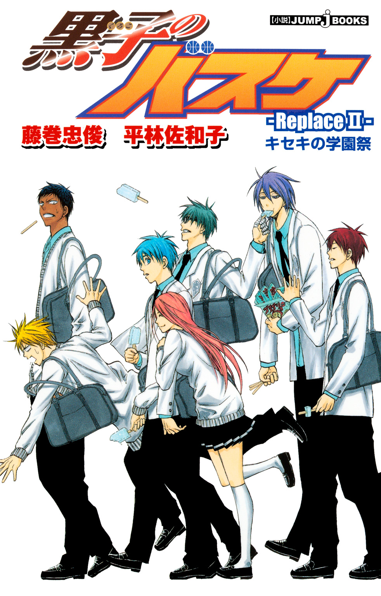
この本は縦書きでレイアウトされています。
また、ご覧になる機種により、表示の差が認められることがあります。
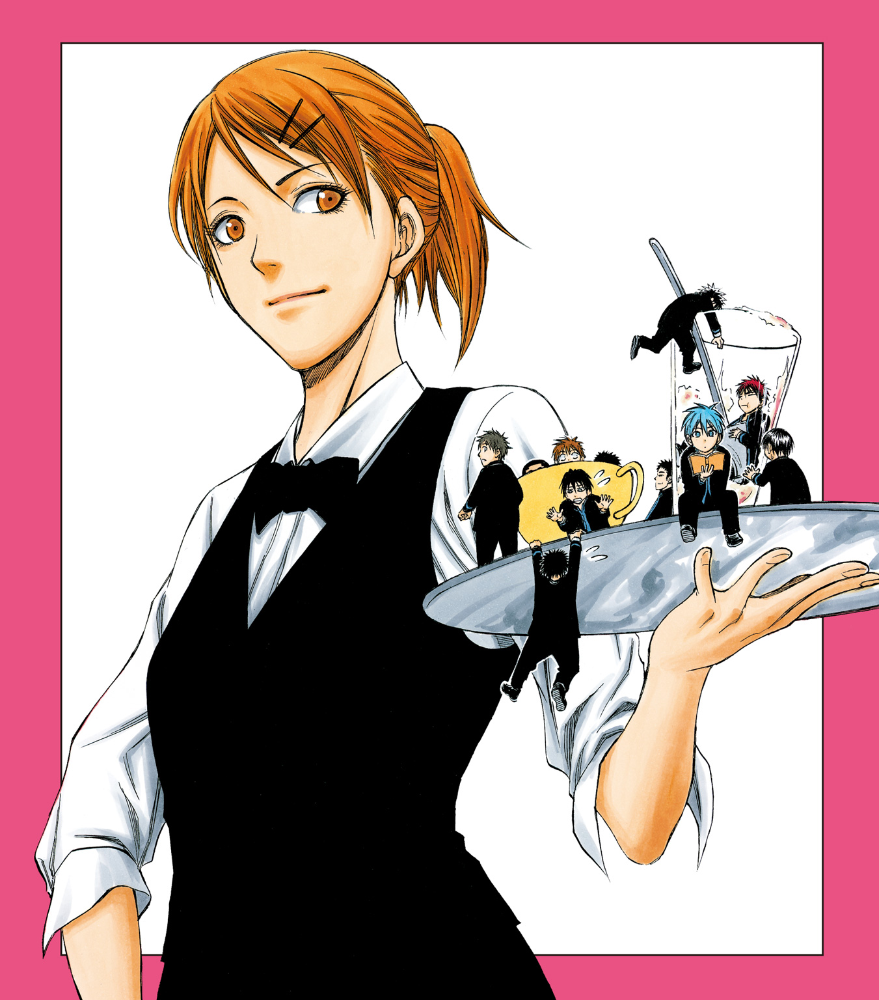
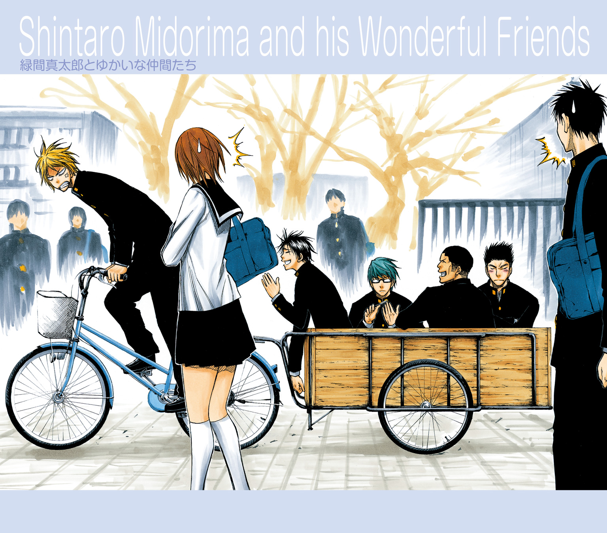
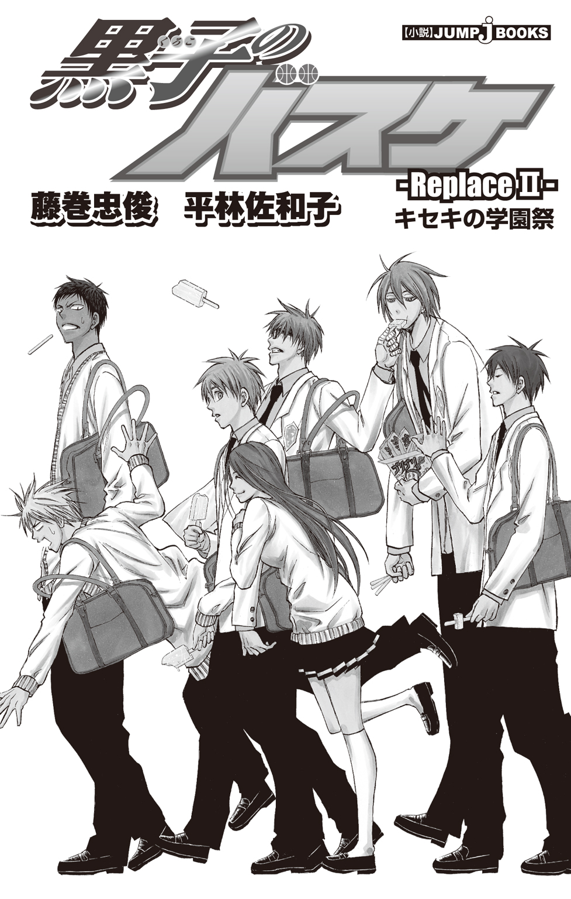
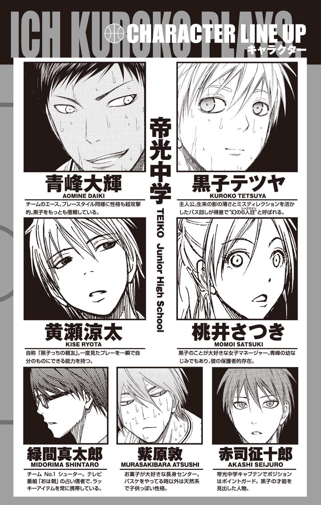
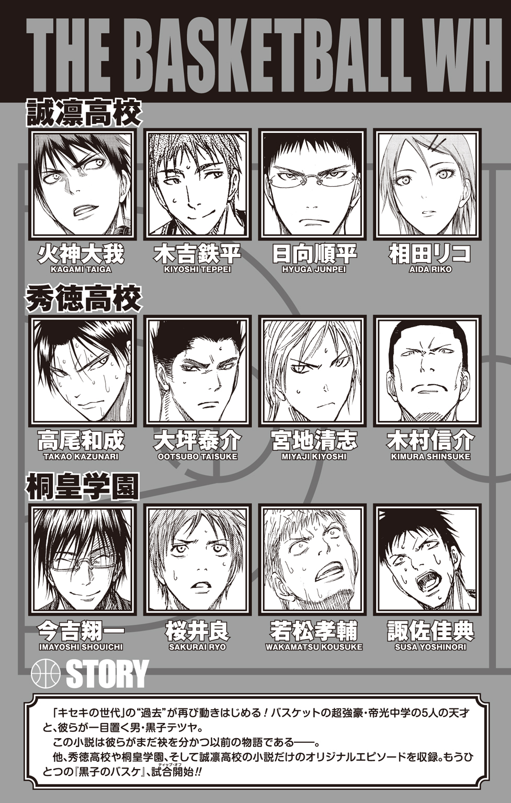
黒子のバスケ-Replace- キセキの学園祭
Replace...バスケット用語で「元いた場所に再び戻ること」
★この作品はフィクションです。実在の人物・団体・事件などには、いっさい関係ありません。
暦は六月に入り、梅雨前線は湿気と気温と不快指数を同時に高める合わせ技で、日本列島を順調に攻略していた。
その梅雨前線の侵攻軍に、当然のことながら帝光中学がある地域も攻略されたのだが、生徒たちには憂鬱になる暇もない。
学園祭が間近に迫っているのである。
この梅雨の時期にあえて開催するのは、創立記念日と学園祭が兼ねられているからだ。
中間テストを終えた生徒たちは、その開放感をぶつけるように学園祭の準備に奔走し、校内はお祭りムード一色だ。誰もがどこかそわそわとしながら、学園祭までの日々を惜しむように過ごしている。
そして学園祭を前日に控えた今日は、各教室に吊るされている、てるてる坊主に託された願いが通じたのか、空は久しぶりの晴れ間を見せていた。
「よかったぁ、雨があがって」
テントの設置で人がひしめく校庭の脇を歩いていた桃井さつきは、空を見上げて、ほっとした声でつぶやいた。
天気予報によれば、明日も晴天が続くとのこと。待ちに待った学園祭だ。やはり天気は晴れているほうが気持ちがいい。
桃井は「楽しみだなぁ」とまた一人でつぶやくと、校庭を通り過ぎ、第二グラウンドへと向かう。彼女の教室へ戻るためには、校舎内を歩くよりも、外を歩いたほうが近道なのだ。
第二グラウンドでも、校庭ほどの人ごみではないが、なにかの準備が進められているらしく、大きな櫓が設営されている。その様子を横目に見ながら歩いていると、どこからともなく声をかけられた。
「さつきー」
「え？ 青峰くん？」
桃井は聞き慣れた幼なじみの声に、足を止めて辺りを見回した。
しかし、その姿を見つけることができない。
「あれ？」
「こっちこっち。上、見ろ。上」
「上？」
もしかして、どこかの教室から呼んでいるのかと校舎を見上げる途中、意外な場所に幼なじみの姿を発見することができた。
「あ、青峰君!? なにやってんの!!」
「なにって、垂れ幕つけてんだよ」
青峰大輝はひょうひょうとした顔で、グラウンド脇に植えられた木の上から桃井を見下ろした。彼の言う通り、手には垂れ幕の端を握っている。
垂れ幕の反対側の端は別の木にくくりつけられているので、木と木の間に横断幕を飾る作業中のようだ。
「あ、あぶないよ！ 落ちて怪我したら大変だよ！」
桃井は焦って木の下に駆け寄るが、青峰は「平気平気」と取り合わず、木の幹に垂れ幕を結びつける。
「よし、完成」
と満足そうに言うと、青峰はするすると木を降り、桃井の隣にぴょんと飛び降りた。
「青峰くん、手！ 手、見せて!? 怪我してない!?」
桃井は慌てて、青峰の両手をとり、掌を確認する。幹を素手でつかんでいたので、もしやと思ったが、幸いなことに少し汚れているだけで、怪我は見当たらなかった。
「よかったぁ」
桃井のほっとした声に、青峰は呆れた様子で言った。
「だから、平気だって。心配しすぎだろ」
「でもエースが手を怪我したら、次の試合で困るじゃない」
「オレより、試合の心配かよ......」
青峰の呆れっぷりが二割増加した。桃井が「だってマネージャーだもん」と胸を張ると、青峰の呆れっぷりはさらに三割増加し、「へーへー。そうかよ」と首の後ろをかいて、横断幕を見上げた。つられて、桃井も見上げる。
横断幕には「校内横断！ スタンプラリー大会！」と大きな字で書かれている。
「これ、青峰くんのクラスの出し物？」
桃井の質問に、青峰は首を振った。
「クイズ研のだってさ。木の上でさぼってたら、ちょうどいいって、手伝わされた」
「さぼってたの!?」
今度は桃井が呆れた顔で青峰を見つめる。
「だって、クラスの出し物の準備とか、めんどくせーし」
「どうして？ 楽しいじゃない」
「めんどくせーよ。教室飾るから、紙で花つくれーとか、意味わかんねーし」
青峰の愚痴に、桃井は思わず、くすりと笑った。
確かに、青峰がちまちまとペーパーフラワーを作っている様子は想像しづらい。
「さつきのクラスはなにすんだ？」
「うちはね、クレープ屋さん！」
桃井は元気よく答える。「教室を喫茶店みたくして、クレープを出すの。味もいろいろ用意してるから、青峰くんも食べに来てね！」
楽しみでしょうがないといった様子の桃井に、青峰はしばし考えてから聞いた。
「......さつきはなんの係だ？」
「クレープを焼く係！」
「じゃ、やめとくわ」
「ええ――っ!? なにそれ!!」
桃井が大声で非難の声をあげる。それは青峰の耳を直撃し、彼はたまらず手で耳を押さえた。
「おまえ、声デカすぎ......」
「だって！ 青峰くんがひどいこと言うから！」
「ひどいって言うなら、おまえの料理の腕だろ。ありゃ、人間が食えるレベルじゃないぞ」
「そ、そんなことないもん！ クレープは焼くだけだし、絶対大丈夫！」
「ふーん......ま、がんばれよー」
青峰は「ま、期待してないけどなー」と言外に匂わせ、背を向けて歩きだした。
「もう！ 食べなかったこと、絶対後悔するんだから！」
桃井は青峰の背中に向かって、そう断言したが、青峰が振り返ることはなかった。
自分の教室に戻った桃井は、「聞いてよ！ 青峰くん、酷いんだよ！」と怒りの丈をクラスメイトである和泉やよいにぶつけた。
しかし、ひと通り話を聞いた上での和泉の感想は、
「へー、クイズ研の出し物、今年は第二グラウンドがスタートなんだ」
というもので、そっかそっかとひとり納得して終了だった。
「えぇ!? それだけ!?」
桃井が抗議すると、和泉はごめんごめんと笑った。
「だって、犬も食わないようなケンカだし」
「ケンカじゃないもん！ 青峰くんが酷いんだってば！」
「はいはい。それよりさ、クイズ研の『あの噂』、知ってる？」
桃井は「それよりって......」と口をとがらせたが、和泉は構わず続けた。
「クイズ研が学園祭でやるスタンプラリーって、毎年ね、ペアでの出場が義務づけられてるの。でね、その大会に男女ペアで出場して、優勝すると......」
和泉は、そっと声を落とし、桃井の耳に口を寄せた。そしてとびきりの秘密を話す。
「そのペアは幸せなカップルになるんだって！」
「ふーん」
「えぇ!? なに、その反応！ ふーんって、なに!? 女子の間じゃ、この話題で持ちきりなのに！」
「だって、私には関係ないもん」
「なんで!? 出場すればいいじゃない、青峰くんと！」
「だから、青峰くんとはそういうんじゃないから！ そういうのは......！」
と言った瞬間、桃井の頰が朱に染まった。「そういうのは」と口に出したとき、まっさきに浮かんだ顔があったのだ。「心に浮かぶ人がいる」という事実が、桃井を照れさせた。
そして、その反応を見逃す和泉ではない。
「なになに？ さつきには、一緒に出場したい人が、すでにいるわけ？」
目を輝かせた和泉は、桃井の首に腕を回すとがっちりホールドし、一語一語丁寧に区切って、尋ねた。
「桃井さんはぁ、誰と、出場したいのかなぁ？」
指先でつんつんと頰を突かれ、桃井はくすぐったさに身をよじらせる。
「い、いいじゃない、この話題は！ だいたい、私はその大会には出場しないもの。私は学園祭ではクレープ作りにすべてをかけてるんだから！」
「えー、そうなのぉ？」
「そうなの！ すっごく美味しいクレープを作って、青峰くんをぎゃふんと言わせるんだ」
そして、「もちろん、あの人にも食べてもらわなくちゃね！」と桃井は心の中で付け加えた。
結果として、学園祭で「ぎゃふん」と言ったのは、桃井自身だった。
「お願い、もうクレープ作るのだけは勘弁して！」
和泉が拝むように桃井に手を合わせた。
学園祭当日の朝のことである。
桃井たちのクラスが設営したクレープショップ『クリーミィ☆クレープ』の調理場には、煤クズが大量に積み上がっていた。
すべて、桃井がクレープを焼こうとして失敗した残骸である。
「クラスのためにも、やめてっ」
和泉の懇願に、他のクラスメイトも無言でうなずく。このままでは、お客にクレープを提供するまえに、用意したクレープ種が尽きて開店をまたずして閉店となるか、お客に煤クズクレープを提供して、開店と同時に開店休業となるかの二択になりかねない状況だ。
「え、でも......」
桃井は困惑した。確かに自分でもこの煤クズクレープはひどい有様だと思うが、今日はこのクレープ作りにすべてをかけるつもりでいたのだ。どうしても未練は残る。
「代わりにウェイトレスはどうよ!?」
和泉の提案に、男子生徒一同が「それがいい！」と同意した。
本来であれば、桃井は『クリーミィ☆クレープ』の看板娘になるはずであった。だが、本人のたっての希望で裏方に回ったのだ。
裏方は制服にエプロン姿だが、表方であるウェイトレスとなると、それ相応の格好をする。具体的に言えば、白いブラウスに黒のベスト。そして黒のタイトスカートに白いエプロンという装いだ。
『少し大人っぽいイメージの格好は、桃井の魅力をもって完成型に達する』
男子生徒一同はその共通認識のもと、心をひとつにした。しかし、和泉の提案に別の女子生徒が「でも......」と困った表情を浮かべる。
「ウェイトレスの洋服に、予備なんて用意してないよ」
「誰かと取り替えるとかは？」と和泉。
「誰かって......誰と？」
和泉を含めた女子生徒たちがこぞって桃井を見つめる。
「え？」
桃井はきょとんと首をかしげた。
クラスの中でも、彼女は高身長の部類に入る。その彼女と洋服を交換できる人間となれば限られているし、その抜群のプロポーションを包むには、いろいろ察して余りある。
「......うん、まあ、ちょっちキツイよね、いろいろと......」
和泉のつぶやきに、女子生徒たちは一様にうなずいた。
「え？ どういうこと？」
当の本人である桃井だけが、話が見えず、さらに戸惑うばかりだ。
「となれば、これは最後の手段ね......」
和泉は強い意志を瞳に宿し、ぎゅっと桃井の両手をつかんだ。
「さつき、よく聞いて」
「うん」
「あんたの仕事は、作り手でもウェイトレスでもないわ！」
「え、まだほかに仕事があるの？」
「とりあえず何もしないで！」
「え？」
「クラスのためにも、今日はお店には近づかず、ひとりで遊んできて！」
こうして桃井はクラスメイトたちに背中を押され、学園祭に放り出されてしまった。
「どうしよう......」
校内をひとり歩きながら、桃井は途方に暮れた。
まさかこんなことになるとは、もろもろ予想外である。そして、いろいろショックである。
学園祭は始まったばかりだが、廊下ですれ違う人々の中には、すでにちらほらと父兄や、近隣の住民たちの姿があった。
どの顔もみな、学園祭を楽しみにしていたらしく、笑顔に溢れている。
「......落ち込んでても、しょうがないかな」
桃井は小さく深呼吸し、肩の力を抜いた。
なにしろ今日は学園祭なのだ。くよくよしていては、もったいない。
桃井は廊下の端に立ち止まり、パンフレットを開いて、どこに行こうかなとチェックを始めた。
確か、テツくんのクラスは......と探していたときだ。
「桃井さん、カレーを食べていきませんか？」
「え？」
顔を上げた瞬間、桃井のハートは射抜かれた。
「テ、テツくん!!」
「はい」
桃井の目の前に黒子テツヤが立っていた。しかし、いつもの黒子ではない。なんと、黒子は燕尾服を着ていた。
桃井は頰を上気させ、思わずパンフレットを抱きしめて言った。
「テ、テテテテテ、テツくん!!」
「はい」
「似合ってる！」
「そうですか？」
黒子が軽く腕を上げ、袖もとから自分の格好を改めて見つめる。その仕草さえも、桃井の目には上品に映り、心臓がドキドキした。たとえ、「あばたもえくぼ」と言われようとも、鼓動は無意識に跳ね上がるのだから、いかんともしがたい。
「ボクのクラス、カレー店なんですけど、執事の格好で給仕しようってことになって......。変じゃないですか？」
「全然!! 全然いいよ！ すっごくかっこいい！」
全力で首を振る桃井に、黒子はほっとしたように笑みを浮かべて言った。
「ありがとうございます」
ああ、もぉ、この瞬間を写真におさめたいっ！
桃井は真剣にそう思った。
「桃井さん、よかったらボクのクラスでカレーを食べていきませんか？ 午前中のせいか、お客さんが少なくて」
そんなステキなお誘いを桃井が断るはずもなく、「喜んで！」と、彼女は即答した。
黒子が「こっちです」と桃井を連れていったのは、二人が立っていたところから、ふたつ隣の教室であった。
廊下に面した教室の壁には大きく『エレガント de CURRY』と書かれている。いつもであれば、そのセンスに大いに疑問を感じるところであるが、おかげで黒子が燕尾服を着たのだから、それこそ華麗にスルーすべきところなのだろう。
教室に入ると、確かにお客さんの姿は少なく、がらんとしていた。
燕尾服姿の黒子が運んできたカレーは、ルーとライスがそれぞれ別の器に分けられている以外は、ごく普通の家庭的なカレーであった。それなのに、執事の黒子が給仕してくれるシチュエーションだけで、五つ星レストランに来ているような豪華な気分が味わえた。
食べ終えたお皿を下げる黒子に、桃井は「ごちそうさま。おいしかったよ」と笑顔で感想を述べると、黒子は「ありがとうございます」と微笑んだ。
「桃井さんは、このあとはどうするんですか？」
「え？」
「どこか行く予定が？」
黒子の質問に、桃井は「えーっと......」と目を泳がせる。
「実はまだ決めてないの。ちょっと手違いで、一日暇になっちゃって......」
手違いとは、料理の腕前が自分の予想以上に下手だったということだが、そこは伏せておく。
「テツくんのオススメって、ある？」
逆に質問する桃井に、黒子は「そうですね......」と少し考えていたが、
「じゃあ、よかったら一緒にスタンプラリーに出ませんか？」
と意外な答えを返した。
「え？」
桃井の目が丸くなる。ぱちぱちと瞬きを繰り返していると、黒子は「知りませんか、クイズ研のスタンプラリー」と繰り返した。
「クイズ研が主催する出し物で、ふたりペアになってクイズに答えながら校内を歩きまわるんです。ボク、クラスメイトの巻藤くんと参加するつもりだったんですけど、彼の都合が悪くなっちゃって。だから、よかったら一緒に参加してくれませんか？」
「......テツくん、それって......参加して、どうするの？」
桃井は真剣な顔で、慎重に黒子に尋ねた。
まさかこんなところで、『クイズ研のスタンプラリー大会』の話が出てくるとは思わなかった。そしてスタンプラリーといえば、まず思い出されるのが、あの噂だ。
しかし、黒子の答えは簡単だった。
「どうするって......クイズに答えるんですけど」
「そういう意味じゃなくて！ 参加するなら......やっぱり、優勝を狙うんだよね？」
「もちろんです。今年は優勝賞品がレブロン・ジェームズモデルのバッシュらしいので、ぜひ優勝したいなと思って」
「バッシュ......！」
桃井がガクリと項垂れた。しかし素早く頭の中で今の状況を整理する。
黒子の様子からすると、『あの噂』については知らないようだ。
けれど黒子は優勝を目指すと言っている。そして、そのパートナーに自分を選んだ。
ということはつまり。導き出される答えは自ずと決まる。
桃井はぱっと顔を上げて、黒子を見つめて言った。
「テツくん、私、参加する!!」
「いいんですか？ よかった」
「ぜったいぜったい、優勝しようねっ!!」
「はい、がんばります」
黒子の強い意志がこめられた声に、桃井は心の中で「やったぁ！」と両手を上げて喜んだ。
『エレガント de CURRY』を出た桃井は、浮かれる足取りで校内を歩いた。
誰彼かまわず、親切にしたい気分だ。
黒子の給仕役のシフトは午前中いっぱいらしく、またクイズ研のスタンプラリーのエントリーも午後からなので、その時間に受付で落ち合う約束をしている。
テツくんと待ち合わせ......。それを考えるだけで、桃井の気持ちは浮き立つ。
早く午後にならないかな、とウキウキ廊下を歩いていると、気になる教室が目に入った。
教室の廊下に面した壁いっぱいに十二星座の絵が描かれ、その絵の上に大きな字で、
『占星術研究会の占い相談コーナー』
と、レタリングされている。
そういえば、と桃井は記憶を辿る。
緑間が占星術研究会の出し物を手伝うことになったと聞いた気がする。
「おは朝占い」を生活の基準に置いている緑間に、占星術研究会が目をつけるのは当然といえば、当然......なのかどうかはよくわからないが、占星術研究会の会長自らに協力を頼まれ、緑間も承諾したと人づてに聞いた。
桃井は気になり、教室に入ることにした。
暗幕カーテンを開け、室内に入ると同時に、「わぁ......」と思わず声を漏らす。
教室内は、窓側はもとより、他の壁もあますことなく暗幕で覆われ、とても暗い。光源といえば、室内を仕切るように張り巡らされた暗幕のブースごとに置かれた小さな間接照明のみだ。間接照明が仄かに照らすブース内では、占星術研究会の生徒と、相談者の生徒が机を挟んで対面式に座り、なにやらボソボソと話し合っていた。
やや異様な光景だった。
緑間はブースのひとつに座っていた。ちょうど客はおらず、緑間ひとりだ。
「やっほー、ミードリン！」
桃井は軽く手を振り、緑間と対面する椅子に座る。
「......桃井？ 何の用なのだよ」
素っ気ない反応の緑間に、桃井は口をとがらせて言った。
「ミドリンが占星術研究会を手伝ってるって聞いたから、来てあげたのにー」
「ふん。暇なことだ」
「ミドリンこそ、暇そうじゃない。......でも、ちょっと意外だったな」
「何がなのだよ？」
緑間はメガネを押し上げて聞き返す。
「なんかミドリンって、こういう手伝いって、面倒くさいとか言って、断りそうだなって、ちょっと思ってたから」
「まあ確かに面倒ではあるが、それなりの報酬もあるからな」
「ああ、おは朝グッズがもらえるとか？」
「なんでわかるのだよ!?」
緑間がぎょっとして桃井を見つめた。その驚きように、かえって桃井のほうがたじろぐ。
「だって、ミドリンが欲しいものっていったら、そういうのしか......」
おそらく他のバスケ部のメンバーも簡単に言い当てられる、と桃井は思ったが、緑間には相当心外だったらしい。
「ふんっ、なんでもかんでもオレのことをお見通しだと思ったら間違いなのだよ！」
緑間の思考は思わぬ方向へと飛んでいた。
「オレもおまえを見通すのだよ」
「えっ？ なんでそうなるの!?」
「桃井、おまえを占ってやる」
そう言うと緑間は机の下に置いてあった紙袋から、大きな洋服らしきものを取りだした。
「ミドリン、なにそれ？」
「占い担当が着用を義務づけられているコートだ。形から入れ、ということらしい」
緑間はばさっとコートを広げ、身にまとう。
コートというよりも、マントに近いそれを緑間は肩にかけ、フードをかぶった。一瞬にして妖しい占い師の登場だ。
「さて、桃井、占ってやるのだよ」
「う、うん......えっと、なにで占うの？」
桃井は机の上を見た。そこにはガラス製のランプと、その隣にはホラ貝が置いてある。占い師につきものの、水晶玉やタロットカードのようなものは置いてない。
「まさか、これ......じゃないよね？」
桃井がホラ貝を指さすと、緑間は「それは今日のラッキーアイテムだ」と答えた。
「オレが占うなら、おは朝占いに決まっているだろう」
それって占い師の意味ないんじゃ......。桃井は疑問に思うが「うん、そうだね」と言うだけにとどめておく。
「桃井は確か......牡牛座だったな」
「うん」
緑間の問いかけに、桃井は素直にうなずいた。
「おまえの今日の運勢は............」
言いかけたまま、緑間は沈黙した。なにやらとても難しい顔をしている。
「ミ、ミドリン？ どうしたの？」
桃井が恐る恐る尋ねると、緑間は断じた。
「桃井、即刻、出て行くのだよ」
「えぇ!? なんで!?」
「思い出したのだよ。今日の運勢、蟹座と相性が悪いのは牡牛座。関わると、面倒なことになるとあったのだよ！」
「それって、私の運勢じゃなくて、ミドリンの運勢じゃない!?」
「そうだ。だから、桃井。出て行くのだよ！」
一方的な理由で、桃井は「占い相談コーナー」を追い出されてしまった。
「もう、なんなの......」
桃井は愚痴るが、緑間相手に文句を言ったところであまり意味はない。仕方なく、別の教室を見て回ることにする。
占星術研究会の隣の教室では、手芸部が手作りの小物を販売していた。どうやらこの付近の教室は、クラブや研究会が出し物をするエリアのようだと、桃井は今更ながらに気づく。
特にあてもない桃井は順番に教室を覗いていくことにした。こうやって改めて見ると、帝光中学にはずいぶんとたくさんのクラブが存在することがわかる。
手芸部、科学部、天文部、文芸部、奇術研究会、プロレス研究会......などなど。
バスケ部とは違う世界を、桃井はひとつひとつ興味深く見つめた。
その歩みが突然、止まる。順番に覗いていた教室の中に、桃井は思いがけない姿を見つけてしまった。
「......赤司くん!?」
帝光バスケ部全員から、一目も二目も置かれている赤司征十郎が、悠然と椅子に腰かけていたのだ。彼の前には将棋の盤が置かれている。
桃井が廊下に面した教室の壁に視線を移すと、「大将棋大会！ By将棋部」と書かれたポスターが貼られていた。ポスターのすみには「将棋部員に勝てたら、豪華賞品あり！」とも書かれている。
桃井はそっと教室を覗いた。
室内の平均年齢は意外と高かった。将棋部員と対戦しているのは、大人の男性が大半だ。挑戦者で中学生なのは、赤司だけである。
その赤司だが、いつもと変わらず涼しい顔で、足を組み、片手で将棋の駒を弄んでいる。対する将棋部員は額に汗を浮かべ、盤上を食いつかんばかりに見つめている。将棋の知識がない桃井にも、どちらが劣勢かは簡単に見て取れた。どうやらなかなかの棋戦らしく、赤司たちの盤の周りだけギャラリーが出来上がっていた。
「これで、どうだっ！」
将棋部員がバシッと小気味よい音を立てて、駒を置いた。ギャラリーからは「おおっ」と感嘆の声があがる。いい手のようだ。
会心の一手だったらしく、将棋部員も「これで終わりだろう？」と言わんばかりに口角を上げて、赤司を見返した。だが、その瞬間、パチッと盤上から音が鳴る。
「へ？ ああっ!?」
将棋部員は一瞬にして絶望的な声をあげた。練りに練ったはずの一手に、赤司が間髪入れずに反撃したのだ。
あまりにも早い判断力に、ギャラリーたちは息をのみ、声も出ない。
将棋部員はまたも汗をかきながらじっと盤上を見つめていたが、やがて、
「参りました......」
と、絞り出すように言い、項垂れた。
ギャラリーから「おおおぉ!!」と一拍遅れて歓声があがった。歓声に混じって「これで五人勝ち抜きだぞ」「あんな手、見たことない」「なんなんだ、この子は」という声も聞こえた。
当の赤司にとっては至極当然の結果だったらしく、勝利の喜びに浸るでもなく、
「これが部長の実力とはな。それで、次は何をもらえるんだ？」
と、打ちひしがれる五人目の対戦者らしい将棋部部長に聞いている。
一連の様子を見ていた桃井はその場をそっと離れた。歩きながら、あの光景を言い表すのにぴったりな言葉があったよね......と記憶を辿る。しばらくうんうんと唸っていたが、ようやく思い出したときは、思わずぽんと手を打った。
「ああ、わかった！ 『道場破り』！」
ちなみにこの日、赤司は桃井が言うところの「道場破り」を将棋部の他に、囲碁部、チェス部、オセロ部にしかけ、すべてに勝利することになるのだが、それは桃井が知るはずもない話である。
クラブや研究会が出し物をするエリアを抜け、校庭を横切り、別の校舎へと入ると、またクラスごとの出し物が行われているエリアが広がっていた。
今までと同じように、ひとつずつ見て歩いていると、廊下に長い行列を見つけた。
行列なんて珍しい。いったい、何に並んでるのかな？
桃井が行列の先頭を見てみようと、足を速めて進んでいくと、
「スミマセーン、端に寄ってくださーい！ あ、写真はご遠慮くださいっス」
と、行列を整理している黄瀬涼太に出くわした。出くわしたのだが。
「きーちゃん、なにその格好!?」
「あ、桃っち。おはようっス」
目を丸くする桃井に爽やかに片手をあげて挨拶をする黄瀬。しかしその格好は華美に着飾られていた。なによりいつもと違う髪型が新鮮だ。
「お、おはよう......じゃなくて、その格好どうしたの!?」
「ああ、これっスか？ 似合ってるスか？」
黄瀬はくるんと回ってみせる。フランス王朝にありそうな青年将校風の衣装をまとった黄瀬は某少女漫画の男装の麗人を連想させた。
「うち、縁日やってんスよ。だから、これはその衣装」
ひょいと黄瀬が指さした教室は、行列の先頭に直結しており、その壁には、
『艶仁知 ～艶やかなる新しき愛と知性をあなたに～』
と、よくわからない煽り文句を書いたポスターが貼られ、その周囲には造花のバラが無数に飾られている。
「......もう、どこから突っ込んでいいのか、わからないんだけど」
茫然とする桃井に、黄瀬は苦笑した。
「桃っちの気持ちもわかるっス。オレも、教室の飾り付けしてて、『あれ？』と思ったし」
「普通、もっと前から気づかない？ 企画提出したあたりとか」
「うーん、まあ、なんつーか、経緯を見てると気づかないっていうか......」
黄瀬の話によれば、クラスの出し物を決める際、黄瀬たちのクラスは当初、『アフターヌーンティーの喫茶室』を希望していたらしい。その案が強く推された大きな理由は、クラスの女子の間でフランス革命を舞台にした某少女漫画の回し読みが流行っていたためなのだが、そんなことに男子生徒は気づかず、女子生徒の「内装は私たちがやるから、大丈夫！」という言葉に「手間が省けるなら、いいか」と軽い気持ちで容認した。
しかし、学園祭で飲食系の出し物をするクラスは、調理室の関係で数が限られており、黄瀬のクラスは抽選に外れ、飲食店を行う権利を得られなかった。
そこで別の出し物を考えようということになったのだが、女子の一部はこの『アフターヌーンティー』のためにすでに準備を始めていた。なんと、当日の衣装をはやばやと手配していたのだ。
せっかく用意したものを無駄にするのはどうか、ということから、折衷案として「用意した衣装で縁日をやろう」ということになった、というのだ。
「いやー、まさか用意してる衣装がこんなのとは、思わなかったっス」
あははと笑う黄瀬に、桃井は「それ、ぜったい女子は計算してるよね」と思ったが口には出さず、こう言い変えた。
「......そこで折衷案で縁日をしようと、普通考えないと思うけど」
「え、そうスか？」
「うん......。でも、お客さんいっぱい入ってよかったね」
「まあ、そうっスね。なんか物珍しさで、人が集まってるらしくて」
「物珍しさっていうか......」
桃井は思わず言葉を濁して苦笑した。黄瀬と話し始めてから、やたらと背中に視線を感じる。たぶん間違いなく、黄瀬目当てに並んでいる女の子たちのものだ。
視線とともに「私たちのオ○カル様に」という声もわずかに聞こえる。
当の黄瀬はそんな熱い視線や囁き声には気づいていないようで、
「あ、そうだ。桃っち、紫っちのも、見たほうがいいっスよ、絶対！」
と言うと「待ってて、呼んでくるから」と教室内に消えた。
そう言えば、ムッ君って、きーちゃんと同じクラスだっけ。
そんなことを考えながら待っていると、黄瀬がすぐに戻ってきた。
「お待たせー」
「早かったね、きーちゃ......む、むむむむ、ムッくん!?」
「あ、さっちんだー」
思いっきり動揺する桃井に、紫原はへらっと笑う。
「なんでこんなところにいるのー？」
「な、なななな、なんでって、ムッ君こそ、なんでその格好なの!?」
「えー、縁日だから？」
桃井の質問に、紫原は首をかしげて答えた。
「驚くっしょ？」
笑いを含んだ声で言う黄瀬に、桃井はこくこくとうなずく。
紫原の格好を見て、驚かない人がいるわけがない。
なにしろ、二メートル近い身長の紫原が、レースをふんだんに使った重厚なドレスを身にまとっているのだから。
「なんでこのチョイス......」
呆れて目が離せない桃井のつぶやきに、黄瀬が答える。
「いやー、紫っちてば、背が高すぎて、合うサイズの服がなくて。唯一着れたのが、このドレスだった、みたいな？」
「みたいなって......」
本来はいったいどんな人のために作ったドレスなのか、すごく気になる一品だ。
「紫っち、アレやってよ」
「えー、うん、まあ、いいよ」
黄瀬の提案に、紫原がうなずく。桃井が「あれって？」と尋ねると、「まあ見てて」と返された。
紫原は、ごほんっとひとつ咳をし、片手を腰に、もう片方の手は誰かを指さすように前に突き出すポーズを取ると、
「ごはんがないなら、お菓子を食べればいいじゃなぁい!!」
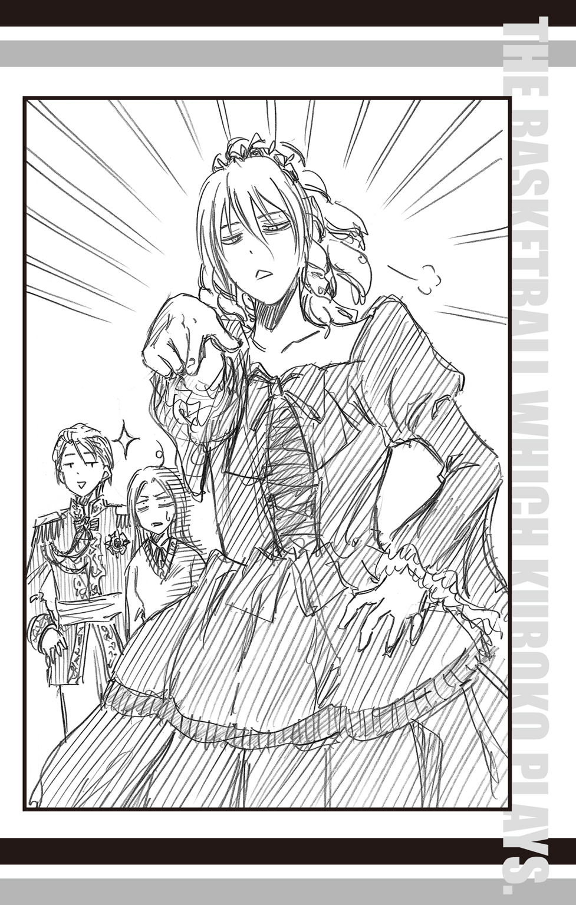
わざと少し裏返った声で宣言した。
「............え？」
紫原の突然の小芝居に衝撃を受けて硬直した桃井の声は、長い行列から一斉にあがった拍手と「すてきー」「似合うー」「もっとやってー」という歓声にかき消された。
その歓声に応えず、紫原はさっさと教室内に戻って行く。
「............なんてムッ君にぴったりなセリフ......」
「でしょ!? なんとなくノリでやってみたら、すげーウケて。これ時々やると、お客の入りがいいんスよ」
黄瀬の解説に桃井は呆れて「へー......」という感想しか出てこない。
ひとまず、黄瀬目当てのお客ばかりだろうという認識は改めた。
「桃っちも、縁日寄ってかないスか？」
「うーん......」
桃井はちらりと行列を見る。黄瀬と桃井が話している間も、お客は教室に入っていき、列は進んでいたが、列自体が短くなった気配はない。
「この列に並ぶと、午後からの予定に響きそうだから、遠慮しておくね」
「そうっスか。残念」
黄瀬も引き留める気はないらしく、笑顔で桃井を見送ってくれた。
黒子との約束の時刻まで一時間を切った頃から、桃井はそわそわとし始めた。
校内を歩きながら、ついつい時計を確認し、針が一分しか進んでいないことに恨めしさを覚える。
落ち着いて、私！ 平常心、平常心！
桃井は何度も心で念じるが、気がつくと顔が勝手に笑っている。
テツ君と優勝したら......ああん、もう、やだ、どうしよう！
終いには笑顔を隠すことよりも、照れて思わず壁を叩きたくなってしまう衝動をおさえることのほうが多くなった。
そんな格闘を繰り返すこと数十分。約束した時間の十五分前に、桃井はスタンプラリーの受付がある第二グラウンドへ到着した。
クイズ研のスタンプラリーは、毎年人気の出し物で、受付の前にはすでに多数の参加者が集まり、賑わいをみせていた。
「これ、みんな参加するの......？」
桃井は人と人との間をすり抜けながら、黒子を捜す。
「って、無理じゃない!?」
桃井は自分が行っていることの無謀さによろめいた。
あの黒子を、『幻の六人目』と呼ばれている、あの黒子を、この人ごみの中から捜すということは、砂浜に落ちたコンタクトレンズを見つけるに等しい。
どうしよう。桃井はうろたえ、それでも辺りをきょろきょろと見回していると、
「さつきー」
「桃井さん」
聞きなれた声に振り返った桃井は一瞬で笑顔になった。
「テツ君!!」
笑顔で黒子に駆け寄る桃井に、黒子の隣に立つ青峰が「おい、オレは無視かよ」と桃井の額を小突く。
「対応に差がありすぎじゃねーか？」
「別に無視したわけじゃないもん。テツ君しか目に入らなかっただけだもん！」
「それを無視っていうんだろ」
「違うもん。ね、テツ君」
幼なじみ同士の口げんかに突然巻き込まれ、黒子は「ボクに振られても困ります」と、ぽりぽりと頰をかいた。
「それより、桃井さん。受付を済ませないと」
「あ、そうだね！」
桃井の声が弾む。受付の列に並んだ二人に青峰は尋ねた。
「受付って、これから、何かすんのか？」
「クイズ研のスタンプラリーです」
「青峰君も参加するから来たんじゃないの？」
桃井は驚いて、尋ねた。普通についてくるので、てっきり参加するのだと思っていた。
「いや？ オレはどっかサボる場所ねーかなって歩いてたら、テツと会って、ついてきただけ」
「呆れた......今日もさぼってるの？」
「いーんだよ、オレは。それにオレが手伝うとモノを壊しそうだって言われたから、自主的に近づかないようにしてんの」
「なにそれ......」
桃井はさらに呆れるが、ふと自分もたいして変わらない状態にあることを思い出し、何も言えなくなる。
「んで？ スタンプラリーって何するんだ？」
その青峰の質問には黒子が答えた。そして話が優勝賞品に及んだとき、
「マジかよ、それ！」
青峰の目が輝いた。「そのバッシュ、オレも欲しかったやつだ！」
突然生き生きとした反応を見せた青峰は、がっと黒子の両肩をつかむと言った。
「テツ、オレと参加しろ！」
「ええ―――っ!?」
黒子が何か言うよりも早く、桃井が叫ぶ。
「ダ、ダメだよ！ テツ君は私と参加するんだから！」
と言うとすぐに、桃井は青峰から奪還するように、黒子の左腕を引っぱった。
「うわっ」
突然引っぱられてバランスを崩した黒子を、今度は青峰が右へぐっと引っぱる。
「いいじゃん。さつきはバッシュには興味ないだろ」
「興味なくても、ラリーには興味あるの！」
「おまえより、オレのほうが運動神経いいんだから、代われ」
「メインはクイズだもん！ 青峰君じゃ、よけい足手まといだよ！」
「オレの勘を舐めるなよ！」
「勘だけじゃクイズは勝てないの！」
黒子を真ん中に、桃井と青峰の口げんかが始まった。
中心にありながら、蚊帳の外になってしまった黒子は「えーっと......」と困惑したまま、右に左にと引っぱられ続ける。
受付に並んでいた生徒たちは、「こんなところでケンカしなくても......」と遠巻きに見つめるだけで、誰も仲裁に入らない。むしろ、決して高レベルとはいえないケンカに関わりたくないとギャラリーを決め込んだ。
やがて、そろそろスタンプラリーの受付が終了を迎えそうになったとき、ようやく三人に声をかける人物が現れた。
「......黒子っちたち、何やってんスか？」
突然の声に桃井たちが振り向けば、そこには制服に着替えた黄瀬が立っていた。
「あ、きーちゃ......きーちゃん!?」
桃井は目を丸くして黄瀬を見つめる。
「そんなとこでケンカしてると、他の人に迷惑っスよ」
「いや、おまえのほうが迷惑かけてるだろ、それ」
青峰が「それ」と指さしたのは、黄瀬を中心に集う女子の一団だ。
女子たちは「ちょっと、押さないでよ！」「あたしが黄瀬くんと、ラリーに出るの！」「だから、それはあたし！」などと言い合い、揉めている。黄瀬が移動するのに合わせて、二重三重に取り囲んだ女子の集団も移動するので、通行の邪魔になっていた。
「黄瀬君、すごいですね」
呆れる青峰と桃井から、ようやく解放された黒子が腕をさすりながら言う。
「いやー、なんかいろんな子から、スタンプラリーに一緒に出てって誘われちゃって......」
黄瀬はさらりと前髪を撫で笑った。「モテるってのも辛いっスね」
モデル業で培われた笑みに、周囲の女子から黄色い歓声があがる。その一方で、
「やべー、そろそろ受付終了するっぽいぞ」
「もぉ！ 参加できなかったら、青峰君のせいだからね！」
と、青峰たちは意に介さない。
「えぇ!? スルーされると恥ずかしいんスけど!?」
黄瀬が放置されたことをとがめると、
「スルーしてるのは黄瀬君でしょ！ いい加減、誰とペアになるのか、はっきりして！」
と、藪蛇になってしまったらしく自分が女子たちに責められた。
「えぇ!? あ、いや......」
黄瀬は困り、空を仰いだ。つい、いつもの癖で『どの女の子にも平等に優しく』を通していたら、面倒なことになってしまった。誰を選んでも、一悶着おこるのは火を見るより明らかだ。かといって、スタンプラリーに参加しないという選択肢はない。黄瀬も優勝賞品には魅力を感じていた。
相手選びという点では、桃井たちもまた揉めていた。
「だから、私とテツ君！」
「そこはオレとテツだろ！」
再開された口論は相変わらず平行線をたどっている。
このまま受付終了時刻を迎えるのではないかと、遠巻きに見物していたギャラリーたちが思い始めた頃、事態は意外な結末を迎えた。
「あの、ボクの意見も聞いてもらえますか？」
存在を忘れられていた黒子が、ひょいと手をあげて発言した。
「ボクは桃井さんと組むんで、青峰君は黄瀬君と組んだら、どうですか？」
「「「え？」」」
桃井、青峰、黄瀬の声がきれいに和音をつくる。
「テ、テツ君、それ、本当!?」
桃井がぱああっと顔を晴れやかにする隣で、
「おい、テツ！ なんでオレが黄瀬なんかと組まねーといけねえんだよ！」
と、青峰が苦々しく黄瀬を指さし、
「青峰っち！ 『なんか』ってひどくないっスか!? 『なんか』って!!」
と、黄瀬が嘆いた。
「そもそも」と黒子は続ける。「ボクは最初に桃井さんを誘ったんです。だから、今になって青峰君とは組むわけにはいきません」
堂々と言い切る黒子の姿に桃井は「テツ君......！」と喜びのあまり、思わずよろめく。幸せ過ぎてこのまま気を失いたいが、これからスタンプラリーに出ることを思い出し、必死に意識を保ち続けた。
「ちぇ、なんでそうなるんだよ」
青峰はぼやいたが、これまでの付き合いから、黒子が一度断言するとそう簡単には意見を変えないことはよく知っている。
「それに、ボクと青峰君はバスケの相性はいいですけど、他はさっぱりですから、ペアは無理だと思います」
という黒子の言葉に、青峰も「それもそうだな」とようやく納得した。
「よし。黄瀬、おまえと組んでやる」
「めっちゃ上から目線なのはなんでなんスか!?」
「なんだよ、問題あんのか？」
「あ、いや......」
黄瀬は周囲の女子をちらりと見ると、「問題ないっス」と答えた。
その途端、女子たちから一斉にブーイングがあがったが、青峰の「なんか文句あんのか？」という一言で、すべては解決してしまった。
その様子を「鶴の一声ですね」と黒子は言い表し、黄瀬は「単なる暴君でしょ」と答え、桃井は夢心地で「さしずめテツ君は黒い白鳥ね......！」と身悶えた。
ようやく決まったふたつのペアは受付を済ませ、スタンプラリーのスタートラインへと移動する。
スタート地点は、青峰が昨日手伝わされた横断幕の下であった。この場所がゴールも兼ねている。
受付時にされた説明によると、スタンプラリーは、校内の各所に用意された四つのゲームに挑戦し、クリア後にもらえるスタンプを集めてゴールに戻ってくるというルールだそうだ。
そして迎える、第一ゲーム。まずはこのスタート地点から第二グラウンドの端に設置された第一ゲームのゴールまで二人三脚で横断するというものだった。
受付で渡された二人三脚用のバンドで、黒子と足をつないだ桃井は、今すぐ昇天してもおかしくないほどハイテンションになっていた。
「桃井さん、足痛くないですか？ バンド、きついですか？」
「ぜぜぜぜんぜんっ！ ちょうどいい！ かかかか、完璧！ 完璧にちょうどいいよ！」
「そうですか？ それじゃあ歩き方ですけど、まずは外側の足から一歩踏み出しましょう」
「う、ううううう、うん！ わかった、任せてって!!」
「......大丈夫ですか？」
「もりろん!!」
やや呂律も怪しくなっている。
このままでは、スタンプラリーをしている間に自分は幸せすぎて倒れるんじゃないかと桃井はひそかに思ったが、心のどこかで、「むしろ本望！」と断じる自分もいた。
一方、青峰と黄瀬は足を結び、軽やかにその場で駆け足の練習を始める。
「はぁ......なんかしょっぱいスね」
「なんだよ？」
一緒に走りながらため息をつく黄瀬を、青峰は怪訝な顔で見つめた。
「だって、周りは男女ペアが多いっつーのに、なんでオレたちは男同士で肩組んでんスか......」
「しかたねーだろ。他に相手がいなかったんだから」
「だけどっス、こう男女ペアばっかだと、若干気持ちが萎えるっていうか......」
「別に誰とペア組もうがいいだろ。要は優勝できればいいんだから」
「......なんか、今、さらに気持ちが萎えること言われたっス」
「はぁ？」
黄瀬の気持ちとは裏腹に、ふたりの駆け足のリズムはぴったり合っている。その姿は他の参加者に「強敵だ......」「ダークホースね」と認識され、図らずも周囲の闘志をかきたてた。
やがて、クイズ研がこの日のために設営した櫓に、クイズ研の部長が登った。参加者たちが並ぶスタートラインに向かって、恭しく礼をすると片手をゆっくりと天に持ち上げる。
その手には、黒いピストルが握られていて――
パァンッ！
銃声が響き渡る。
そして、参加者たちは一斉に走り出した。
最初に集団から飛び出したのは、やはり青峰＆黄瀬ペアだった。
「黄瀬、おめー、おせーよ！」
「青峰っちが速過ぎなんスよ！」
二人三脚をしているとは思えないスピードで駆けているというのに、会話まで弾ませる（？）ふたりに、あっさり追い抜かれたペアは危うく戦意を喪失しそうになる。
そのまま一直線に最初のスタンプが捺される第一ゲームのゴールへと走っていくと思いきや、突然青峰が「曲がるぞ」と方向転換し、直角に折れ曲がった。
後続のペアたちも驚いたが、一番驚いたのは相棒である黄瀬だ。
「あ、青峰っち!? なんで曲がるんスか!?」
「なんつーか、嫌な感じがしたんだよ」
「はぁ!?」
「いいからっ！ もう一回曲がるぞ」
再度方向転換し、ゴールへとコースを取り直したときだ。
第二グラウンドに悲鳴と、バコォォォという不可思議な音が響き渡った。
思わず青峰と黄瀬が立ち止まり振り返ると、ゴールを一直線に目指していた集団がごっそりと消えていた。
代わりに、彼らがいたであろう場所にぽっかりと穴が開いている。先ほど、青峰が迂回した場所だ。穴の中からは「ちょ、なにこれ！」「どういうこと!?」など、戸惑いの声や怒号が聞こえる。
穴に落ちなかった参加者たちは、突然の穴の出現に呆然と立ち尽くしていた。そんな彼らの意識を覚醒させるように、スピーカーから音声が響く。
「落とし穴に落ちた人はその場で失格となるので、ご注意ください」
後出しもいいところの、クイズ研からの連絡だった。
「落とし穴......？」
黄瀬の顔が盛大に引きつる。改めて第二グラウンドを見渡せば、掘り返したあとのような、どことなく土の色が違う場所が数か所見つけられた。
「グラウンドに落とし穴って、本格的すぎ......」
「いいじゃねえか。これぐらいスリルがあるほうがおもしれぇよ」
青峰がにやっと笑う。因縁のライバルと出会ったときのように、楽しげな笑みだ。
青峰が黄瀬の肩に回した手に力を込めた。
「黄瀬、突っ走るぞ！」
「えっ!? いや、あの、少し慎重に行かないと、オレらも穴に落ちるっスよ!?」
「オレの勘を信じろ！」
「信じて大丈夫なんスか？」
「大丈夫じゃねーときは......なんとかしろ！」
「無茶苦茶っス！」
「グダグダ言うな！ 行くぞ！」
青峰に引きずられるようにして、黄瀬たちのペアが走り出す。
最初に動き出すものがあれば、それが呼び水となる。茫然としていた他の参加者たちも士気を取り戻し、再度走り始めた。だが、落とし穴は巧妙に隠してあり、その後も穴に落ちて失格となるものが相次ぐ。
二人三脚に舞い上がっていた桃井も、この事態に少し冷静さを取り戻していた。
「ちょっと厄介ね......」
桃井が顎に手を当てて考える。落とし穴の位置は目をこらせば、見つけられそうだが、いちいち確認しながら走っていては、かなりの時間ロスになってしまう。そして同じことを考えていたであろう黒子は、
「ちょっとスピードは遅くなりますが、他の人が走ったあとを行くほうがよさそうですね」
と提案してきた。
「そうすると、どうしても順位が落ちちゃうよ？」
心配する桃井に黒子は安心させるように微笑んだ。
「平気ですよ。まだこれ、第一ゲームですから。あとからいくらでも巻き返せますよ」
黒子が桃井にかけた言葉を、逆の意味で心底実感しているペアがいた。
青峰と黄瀬である。
彼らは第一ゲームを余裕の一位で通過し、バンドを外して第二ゲームの行われる第一視聴覚室にやって来ていた。
第二ゲームは、クイズ研らしくクイズだ。一問でも正解すればクリアだが、間違えれば即失格。ただし、パスは何度も使えるというルールである。
第一視聴覚室の椅子に座った黄瀬はうしろを振り返った。すでに教室内はたくさんのペアが座っている。最初にこの教室に入った時は、青峰と黄瀬のふたりだけだったのに。
一位だったふたりは着実に順位を落としていた。原因は明らかで、問題のレベルと青峰＆黄瀬ペアのレベルが合わないという一点につきる。
そして新たに、次のクイズが係によって出題された。
「問題です。日本三大庭園と言えば、兼六園、偕楽園、あとひとつはなーんだ？」
他のペアが一斉に答えを各自のスケッチブックに書き始める中、青峰と黄瀬ペアは顔を突き合わせて、相談を始めた。
「青峰っち、知ってるっスか？」
「オレが知ってるのは幼稚園ぐらいだ」
「それ、庭園ですらないっス！」
「じゃあ、おまえは知ってんのかよ！」
「知ってたら聞かないっス！」
答えがまとまらないうちに、解答時間の制限時間終了を知らせるブザーが鳴った。
他のペアたちは、答えを書いたスケッチブックをさっと持ち上げる。青峰と黄瀬は何度となく使った『パス』と書いたページを持ち上げた。
「答えは『後楽園』です」
係から発表さされた解答に、正解したペアからは歓声があがり、不正解だったペアからは落胆の声が漏れた。
これもひとつの心理戦だな、と黄瀬は思う。
パスは無制限に繰り返していいルールとなっているが、その間に正解者は先に進んでいく。置いていかれるというプレッシャーは、パスを使うよりも一か八か、答えてみようという気にさせ、そしてその多くが不正解で失格にされるのだ。
「なんとか、粘るしかないっスね......」
黄瀬が焦る気持ちを抑えるように長い息をはくと、隣に座っている青峰が「くそ、めんどくせえ......」と今にも逆切れしそうな様子で呻いた。
「え、あの、青峰っち......？」
「んだよ......っ」
青峰が不機嫌さを隠さずに黄瀬を横目で見る。黄瀬は青ざめた。
「青峰っち、我慢っスよ！ 短気は損気っス！ たぶん、きっと、オレたちでもわかる問題が出ますって！ だからここは粘って！」
「わーってるよ！」
そんな不機嫌丸出しの声で言われても、ぜんぜん安心できないっス！
黄瀬がハラハラと気を揉んでいると、ちょうど黒子＆桃井ペアがやってきた。
「あれ、青峰君たち、ここにいたんですね」
黒子の何気ない言葉に、青峰がきっと睨む。
「いちゃ、わりーかよっ」
「......青峰君、クイズに答えられないからって怒っちゃダメだよ？」
桃井がずばりと青峰の心情を言い当てた。
「うるせーよ......」
そのままズバリ過ぎたのか、青峰は不貞腐れてぷいっと顔を背ける。だが、さらに青峰の心情をえぐる事態が起きた。
「問題です。『書を捨てよ町へ出よう』を書いた、歌人としても有名な作家はだーれだ？」
青峰と黄瀬はアイコンタクトを交わす。もはや会話なしでもすべきことはわかっている。
制限時間終了のブザーとともに、黄瀬はぱっとスケッチブックを上げた。
『パス』
隣で、黒子もまたスケッチブックを持ち上げる。
『寺山修司』
「え？」
黄瀬が驚きの声をあげる。まさか......と思った矢先、
「正解は『寺山修司』です」
と、正解が発表された。
「やったー！ さすがテツ君！」
桃井は喜びと尊敬でうっとりした眼差しを黒子に向ける。
「問題がわかりやすくて助かりました。先を急ぎましょう」
黒子は照れるでもなく、至極当然といった顔で答え、スタンプを捺印してもらうと、桃井と一緒に視聴覚室を出て行った。
そしてそれが、青峰の逆鱗に触れた。
「ちくしょう、やってられるかっ!!」
「あ、青峰っち!?」
突然大声を出した青峰に黄瀬は青ざめた。ここで切れてスタンプラリーを放棄されては黄瀬が困る。
「あ、あの、青峰っち、落ち着いて！」
「これが落ち着いてられっか！ 黄瀬、やるぞ！」
「へ？」
「さつきとテツに負けられっかよ！ ぜってー、クイズに答えて追い抜く！」
「青峰っち......！」
どうやら、いい方向に怒りの矛先が向いたらしい。黄瀬はほっと胸を撫で下ろし、「青峰っち、一緒にがんばりましょう！」と親指を立てて、青峰を鼓舞した。
「ああ、やってやるぜ！」
青峰は闘志を燃やし、クイズに全神経を集中する。
しかし全神経を集中しても、答えられるものでもなく――
結局、その結果が出たのは、最後に用意されたサービス問題によってであった。
第一、第二ゲームを終えた段階で、失格やクイズに苦戦する参加者が続出し、黒子＆桃井チームは意外にも上位十位以内に入っていた。
第三ゲームの説明は、第二体育館前で行われた。クイズ研が設置したブースの前で、クイズ研の女子生徒は、数枚のカードをトランプのように扇型に開いてみせると、言った。
「この中から、カードを一枚選んでください」
黒子は言われるままに、一枚のカードを引く。
カードをひっくり返すとメッセージが書かれていた。
『貝を甲斐甲斐しく解放してください』
「え......？」
さすがの黒子もカードを見つめたまま固まった。何を意味しているのか、わからない。
隣で覗いていた桃井も、困惑の眼差しをクイズ研の係に向ける。
彼女はにっこりと微笑んだ。
「第三ゲームは借り物競走です。がんばってください」
「か、借り物競走？ これが？ え、じゃあ、『貝を解放』ってどういう意味？」
「そういうことです」
「え？」
「つまり、お題はそうなのです。お題に沿ったものをここに持ってきてくださいね」
クイズ研の係は相変わらず笑みを絶やさない。
どうやら本当にこのお題で借り物競走をさせるつもりらしい。
「クイズ研にはダジャレ好きがいるようですね」
「テツ君、適当な感想で現実逃避しないでね......」
桃井の指摘に、黒子は取り繕うようにごほんと咳をひとつする。図星だったようだ。
「ひとまず貝を探しましょう。模擬店に海産系の品を扱っているところを探して、そこで貝をもらえば、貝をゴミから解放したことになります」
「そっか！ でも海産系のお店ってあったかな......」
桃井は午前中に見て回った模擬店を思い出そうと記憶を辿った。一軒ぐらいは該当する店があってもよさそうなものだが。
「あ......」
桃井が小さくつぶやいた。
「なにかお店を思い出しましたか？」
黒子が期待をこめて尋ねる。
「うん、思い出したっていうか......」
桃井は「うーん」と小さく首をかしげて、困ったように微笑んだ。
「ちょっと思い当たっちゃった、かな？」
桃井が心当たりを伝えると、黒子はしばし考えてから、うんとうなずく。
「わかりました。それでいきましょう」
「え、いいの？」
「はい。そのやり口なら、うまく『お題』をクリアできそうですし」
「きっと大変だよね......」
「大変じゃないゲームなんてありませんよ」
ニコッと笑う黒子に、桃井は「目的のために手段を選ばないテツ君もステキ！」とドキドキした。
方針が決まったのなら、すぐさま実行に移さなくては意味がない。
桃井と黒子は急いで、校舎へと入る。目指すは占星術研究会の『占い相談コーナー』。
暗幕だらけの教室に入ると、すぐに目的の人物を見つけることができた。
「黒子と桃井？ なんだ、占ってもらいに来たのか？」
占いブースの一角に座る緑間が、突然の来客を少しだけ驚いた顔で迎えた。
「ミドリン、あのね......」
桃井はさりげなさを装って緑間に近づく。
「なんだ？ おまえには関わりたくないのだが」
「うん、そうだよね......」
桃井はうしろに立つ黒子を、そっとうかがった。黒子は桃井を励ますように、こくりとうなずく。これはもう、やるしかない。
桃井は、緑間の前に置かれたテーブルを今一度確認すると、ぱっと頭を下げた。
「ミドリン、ごめん！」
「は？」
一瞬怪訝な顔をした緑間の隙をつき、桃井は机の上にあった、緑間のラッキーアイテム「ホラ貝」を取り上げ、黒子にパスした。
「なっ!? なにするのだよ、桃井！ 返せ、黒子！」
緑間がさっと手を伸ばすが、机が障害となり、伸ばした手は空をつかむ。
その間に教室の戸口に移動した黒子は緑間を振り返った。
「緑間君、すみませんがこれは頂いていきます。返してほしかったら、力ずくで取り返してください」
丁寧ながら、内容は無茶苦茶な言葉を残し、黒子はぱっと教室の外へ走り出た。
「黒子―――!?」
緑間は慌てて黒子を追い、教室の外へ出る。そのあとを桃井が追いかけた。
これが黒子と桃井が考え出した『貝を甲斐甲斐しく（緑間から）解放する』図である。あとはこのまま、第二体育館へ向かえば、条件はクリアだ。
もしもこれがコートの中であれば、黒子は簡単に緑間に捕まり、この目論見は崩壊してしまうだろう。しかし、ここは校舎の廊下であり、そして学園祭真っ最中の廊下は、生徒だけでなくその保護者たちなどでごったかえしていた。人と人の間をすり抜け、紛れ込むことに長けた黒子を、緑間はなかなか捕まえられない。
「なにを考えているのだよ、黒子ー！」
「いろいろ考えているのですが、教えられません」
「わけがわからないのだよ！」
「とりあえず、『捕まえられるもんなら、捕まえてごらんなさい』ってことです」
「きゃー、テツ君、かっこいい!!」
「どこがなのだよ！」
三人はぎゃーぎゃーと言い合いながら、追いかけっこを繰り広げる。
緑間が自分を見失わないように注意を払いながら、黒子は校舎から中庭へと移動した。目指す第二体育館はすぐそこである。しかし校舎内とは違い、外に出てしまえば、人口密度は下がる。おかげで黒子と緑間の間隔はぐんと縮まってしまった。
「黒子、いい加減にするのだよ！」
緑間が右手を伸ばす。その手が黒子の肩をつかもうとした瞬間、黒子はひょいと右に曲がり、校舎の陰へ消えた。
「このっ、黒子ー！」
緑間もすかさず右に曲がる。だが、思いがけず、曲がり角の先から人が現れ、慌てて急ブレーキをかけた。
「なっ!?」
「......あれ？ ミドチン？」
校舎の曲がり角で出くわしたのは紫原だった。しかもドレスを着ている。
「なんて格好をしているのだよ、紫原！」
緑間はカエルの轢死体を見た時のような顔で叫んだ。
「えー？ ドレス？」
紫原は小首をかしげる。
「それは見ればわかるのだよ！」
「あれ、ムッくん？ こんなところでどうしたの？」
追いついた桃井が、紫原の登場に小さく驚いた顔で尋ねた。
「ちょっと休憩してたんだよねー」
「......その格好で？」
「うん。着替えるの、面倒だから」
その格好のほうが、歩くのに面倒なんじゃないのかな、と桃井は思った。
「さっちんとミドチンこそ、こんなとこでなにやってんの？」
紫原の問いかけに、緑間がはっとする。
「そうだったのだよ！ オレは黒子を見つけないと！」
「えー、黒ちん？ 黒ちんなら、ここにいるけど？」
紫原がひょいと自分のうしろを指さした。
「あ」
紫原のスカートの陰に隠れていた黒子が小さく声をあげる。
「黒子ー！ そんなところにいたのか！」
緑間が紫原のうしろに回り込もうとすると、黒子はさっと紫原の前へ移動し、逃げを決め込んだ。
「あらら？ なんなの、これ？」
自分を軸に熱の入った攻防戦が繰り広げられているというのに、紫原はまるで子犬が遊んでいるのを見るように、呑気な様子だ。
「紫原！ そこをどけ！」
「えー？」
「紫原君、動かないでください」
「んー？」
紫原は眠そうな目で、黒子と緑間を交互に見つめた。繰り返される攻防に、早くも飽きてきたのか、ふああと欠伸をする。
だが、次の瞬間、そんな紫原の目を覚ます一言が響き渡った。
「ムッ君！ ちょっとだけミドリンの邪魔をして！ クレープおごるから！」
「うんっ！」
紫原はいつになく、はっきりとした声でうなずき、大きな手を緑間に向かって広げた。
ちょうど同じ頃、第二ゲームのクイズを終えた青峰＆黄瀬チームは、ようやく第三ゲームのカードを引いていた。
青峰と黄瀬がカードを覗き込み、そろって首をかしげる。
カードには『ヒーロー参上！』と書かれていた。
「ヒーロー......？」
「このお題で借り物競走ってどういうことだ？」
「さぁ......」
黄瀬がカードをつまみ、ひらひらと振る。
「ヒーローって、レブロン・ジェームズとかっスかね？」
「どうやって連れてくるんだよ」
珍しくまっとうなツッコミを入れる青峰に「そうっスね」と黄瀬は苦笑いを返す。
「でも、ここにいても仕方ないっスよね......」
「だな......」
頭脳労働が一番苦手な青峰と黄瀬が腕を組み、考え込んでいると、どこからか騒がしい声と複数の足音が聞こえた。
「なんだ？」
青峰は辺りを見回す。
先にそれを見つけたのは、黄瀬だった。
「青峰っち、あれ......」
顔を引きつらせて黄瀬が指さす方向からは、なんとも珍妙な一団がこちらに向かって走ってきていた。
まず、先頭を走るのは黒子だ。黒子は無表情の中にも必死さを滲ませて、走っている。そして何故か、ホラ貝をラクビーボールのように脇に抱えていた。
その後ろを追いかけるのは、緑間である。
「待つのだよ、黒子ー！」
こちらは怒りの形相で走っている。もちろん青峰たちはその理由を知る由もないが、あと少しで黒子を捕まえられるところを、紫原に邪魔をされ、怒りのボルテージはますます上がっていく状態だ。
一団の最後尾をつとめるのは桃井、そして急に速度を落とした紫原だった。
全力で走る桃井の隣を、ドレスをたくしあげた紫原が併走する。ドレスを着ているとはいえ、紫原にとっては余裕のスピードらしく、
「ね、ね、さっちん。クレープは？」
と、しきりに話しかけている。一方、桃井は全力で走っているため、答える余裕はない。
「なにやってんだ、あいつら......」
青峰は呆れ顔で、奇妙な一団を見つめた。
だが、黄瀬は一団を見て、思いついたことがあるらしく、
「チャンスっスよ、青峰っち！」
と、顔を輝かせた。
「はぁ？ チャンス？」
「鴨がネギしょって来たっスよ！」
黄瀬はニッと笑うと、「おねーさん！」とクイズ研の係に呼びかけた。
「お、お姉さん？」
突然の呼び方に戸惑う係に、
「これから、借り物を見せるから！」
と、黄瀬は笑顔で片目を瞑ってみせる。
「おい、黄瀬。借り物、どうすんだ？」
さっぱり話の見えてこない青峰に、黄瀬は「いい考えがあるんスよ」と胸を張った。
「とりあえず青峰っちは、黒子っちたちが来たら、黒子っちと、緑間っちを捕まえてほしいっス」
「はぁ？」
相変わらず理解はできないが、考えるよりも行動するほうが青峰の性に合っている。青峰は黒子たちを捕まえようと、身構えた。
もちろん黒子たち一団はそんな思惑が働いているとも知らずに、ただ一直線に第三ゲームのクイズ研のブースを目指して走っていた。
走りながら、黒子は突然、持っていたホラ貝を頭の上に持ち上げた。追いかけていた緑間は何をする気なのだと身構えたが、黒子は特に何をするでもなく、そのまま走り続ける。
「わけがわからないのだよ！」
もはや完全に黒子の行動は緑間の理解を超えていた。
だが、黒子の行動をきちんと理解したひとがいた。
第三ゲームのブースを担当しているクイズ研の女子生徒である。
彼女は、黒子とその手にかかげたホラ貝を見て、にっこりとうなずいた。
『貝を甲斐甲斐しく解放する』
まさにその通りの借り物に、女子生徒は捺印用のスタンプを手にとり、黒子たちの到着を待つ。その姿に、黒子の後続を走る桃井は、ほっと息をついた。お題は無事にクリアできたようだ。
ブース到着を前に黒子は走るスピードを緩める。途端、緑間が黒子に追いつき、腕をつかんだ。
「黒子、観念するのだよ！ ラッキーアイテムを返せ！」
「あ、はい。もういいです」
「なに!?」
当然、抗うだろうという緑間の予想を裏切り、黒子はあっさりとホラ貝を緑間に返した。
「どうぞ。ありがとうございました」
「なっ!? なんなのだよ、一体!! 黒子！ おまえ、何をしたのか、わかっているのか！」
緑間はものすごい剣幕で黒子の胸倉をつかんだ。緑間にしてみれば、黒子にいいように振り回されたようにしか思えない。
追いついた桃井が慌ててふたりの間に入った。
「落ち着いてミドリン！ これにはちゃんと理由があるの！」
「それは当然、オレが納得できる理由なんだろうな！」
「え？ えーっとそれは......」
思わず桃井の目が宙を泳ぐ。『借り物競走のお題だったから』という理由に、緑間が納得するかといえば、たぶんきっと無理な気がした。
桃井と併走してきた紫原は、ここに至っては口を挟まず、事の成り行きを眠たそうな目で見守っている。
「どうなのだよ、桃井！」
「えっと......」
緑間の収まらぬ剣幕に、桃井が必死に言葉を探していると、ふと誰かに腕を優しくつかまれた。
「え？」
もしかしてテツ君が!?
淡い期待に桃井の胸が跳ねる。桃井が、自分の腕をつかんだ手を目で辿っていくと、
「え......きーちゃん？」
「桃っち、捕まえたっス！」
黄瀬がにっこりと桃井に笑いかけていた。黄瀬は右手で桃井の腕をつかみ、左手は何故か、紫原の腕をつかんでいる。
「ん？ なんで？」
紫原も不思議そうにつかまれた腕を見つめ、きょとんと首をかしげた。
「おい、黄瀬。捕まえたぞ」
突然かかった青峰の声に、桃井がそちらを見ると、何故か青峰は黒子と緑間の首に両腕を回し、がっちりホールドしていた。
黒子は事態がよく理解できず、ぽりぽりと頰をかいていたが、緑間は早速、怒りの矛先を青峰に向けた。
「一体なんなのだよ、青峰！」
しかし、青峰は緑間の怒声などまったく気にせず、
「黄瀬、これからどうすんだ？」
と黄瀬に先を促す。
「ナイスっス、青峰っち！」
黄瀬は明るく言うと、「だから、なんなのだよ！」とわめく緑間をやはりスルーして、「係のおねーさん！ そろったよ！」と、クイズ研の係に声をかけた。
「え？」
目の前で繰り広げられるいざこざに、呆気にとられていた係の女子生徒は、突然自分に話をふられ、ぽかんとした表情で黄瀬を見る。黄瀬は声高々に言った。
「『ヒーロー参上！』」
宣言すると同時に、黄瀬はバンザイするように両手を上げる。当然、腕をつかまれていた桃井と紫原も手を上げることになった。
「はい？」
ぽかんとする係の女子生徒同様、桃井も目をぱちくりとし、黄瀬を見つめた。
他の四人の男子も同様に黄瀬を見つめ、無言で説明を求める。
全員の視線を集めた黄瀬はにこっと笑うと、言った。
「だからー、オレたち、六人そろって『カラーレンジャー』みたいな？ ブルーの青峰っち、ブラックの黒子っち、グリーンの緑間っちと、パープルの紫っち。んで、紅一点のピンク、桃っち！ ね、ばっちりじゃん！」
桃井と紫原の腕を離し、黄瀬はぐっと親指を立てる。
「なるほど。となると、黄瀬君はイエローってことですね」
順応力の高い黒子が一番に理解を示す。
「『なるほど』じゃねーよ。なんだそりゃ」
青峰は呆れて、緑間と黒子を解放した。
「黄瀬っ、貴様という奴はっ！ どこまでふざければっゴホゴホ！」
緑間は怒鳴り続けすぎて、とうとう声を嗄らしてしまった。
そして紫原に至っては、
「ねーねー。さっちん、クレープは？」
と、早々にカラーレンジャーについては興味をなくしていた。
「ね、どうよ、お姉さん」
黄瀬が係の女子生徒に再度たずねると、それまでぽかんとしていた女子生徒もはっと我に返り、もう一度六人を順番に見つめ、
「合格です」
と、スタンプを持ち上げた。
「よしっ！」
黄瀬と青峰がそろって拳を握り締める。
こうして第三ゲームを、黒子と桃井、青峰と黄瀬チームはほぼ同時にクリアした。
「もうおまえたちとは、これ以上関わりたくないのだよ!!」
第三ゲームをクリアしたあと、緑間は吐き捨てるようにそう言うと、足早に占星術研究会の教室へと戻って行った。
紫原も、桃井から『クリーミィ☆クレープ』の引換券をもらうと、「じゃねー」と足取り軽く去って行った。
だが、そんなことは黒子たちにとっては二の次でしかなかった。
二組のチームは先を争うようにして、最後のゲーム、第四ゲームが行われる、多目的ホール前へとやって来た。
「第四ゲームは迷路です。じゃあ、いってらっしゃーい」
クイズ研の係が簡単に説明を終え、多目的ホールの戸を開く。
勢いよく中へ入ろうとしていた桃井は、室内の光景に出鼻をくじかれた。
多目的ホールの中は暗く、所々に灯された青白い光が頼りなく道を照らしていた。室内に流れるＢＧＭはどこかおどろおどろしい。
「あの、これ......」
桃井は顔を引きつらせて、係を振り返る。「迷路っていうか、お化け屋敷っぽいんですけど......」
「正解。お化け屋敷風の迷路です」
係はさらりと告げた。
「え......」
桃井はさーっと顔を青ざめさせた。
「桃井さん、どうしました？」
黒子がそっと桃井をうかがう。だが、桃井の代わりに答えたのは、青峰だった。
「あー、さつきはお化け屋敷苦手だぞ？」
「え？ そうなんですか、桃井さん？」
「う......うん」
黒子に尋ねられたら、噓はつけない。けれど、心配をかけたくなくて、桃井は無理に笑顔を作った。
「でも、大丈夫！ がんばるから！」
「そうですか......？」
黒子が気遣わしげに桃井を見つめていると、ふたりの脇をすり抜け、青峰と黄瀬が迷路の奥へ進んだ。
「んじゃ、オレたちは先に行くぜー」
「お先にー！」
迷路は、入るとすぐに三つに道が分かれ、青峰たちは中央の道を選んで進んで行く。
ふたりに先を越されたという事実が、桃井を奮い立たせた。
そもそもの目的を思い出さなくちゃ......と、桃井は自分自身に言い聞かせる。
黒子に誘われて参加したスタンプラリーだったが、桃井にも野望はある。
絶対優勝して、テツ君とハッピーエンドを迎えるんだから！
「テツ君！ 私たちも急ご！」
桃井は声に力を込めた。突然元気になった桃井に、黒子は少し驚いた顔を見せたが、「はい」と答え、ふたりは右の道を選んで歩きだした。
絶対優勝する。再度燃え上がった桃井の決意であったが、お化け屋敷を進み、暗闇から突然現れる幽霊たちに悲鳴をあげる度に、その決意は削られた。
自分を奮い立たせて前に進もうとしても、一度芽生えた恐怖は想像力を刺激する。あの角を曲がったら何か現れるのではないか。今度は天井かもしれない。想像力が桃井の足を重くした。
もう歩きたくないよお、と思い始めた桃井に隣の黒子が声をかけた。
「桃井さん」
「っ!! な、なに!?」
黒子の声にさえも驚いてしまった自分に自己嫌悪しつつ、桃井は黒子を見つめる。
「少しでも、関係ないことを考えたほうがいいですよ」
「え......？」
「そうすれば、出口まであっという間です」
薄明かりの中でよく見えなかったが、黒子はにこっと笑ったようだ。
もしかして心配してくれたのかな......？
桃井の胸が温かくなる。こういうさりげない気遣いができる、それが黒子のいいところだ。
「そういえば......」と黒子は何かを思い出したように、切り出した。「紫原くんは桃井さんのことを『さっちん』って呼ぶんですね。前は『桃ちん』だった気がしましたが......？」
「テツ君、気づいてくれたの!?」
まさかそんなことに黒子が気づくとは思わず、桃井は嬉しくなった。たとえどんなに些細なことでも、自分に関することに気づいてくれたという事実が嬉しい。
「ムッ君にね、お願いしたの。呼び方を変えてって」
「『桃ちん』から『さっちん』に変えるように、ですか？」
「ううん。本当は普通に『桃井』とか、『さつき』とか、呼んでほしかったんだけど......」
そこまで言って、桃井はため息をついた。紫原に呼び方を変えてほしいとお願いしたのは、『ちん』がなんとなく恥ずかしかったからなのだが、それはうまく伝わらず、結局『さっちん』に落ち着いてしまったのだ。
「ムッ君って、ほんと難しい......」
「紫原君は独特ですから。彼のマイルールを変えるのは結構大変だと思います」
「だよねー。ムッ君もそうだけど、他のみんなもマイルール多すぎ」
「特に多いのは緑間君ですけどね」
「確かに、そうかも。ミドリンのこだわりはすごいよね」
桃井は思わずくすくすと笑ってしまう。黒子との会話のおかげで、いい具合に恐怖心が薄らいできた。
このままなら出口まで落ち着いて行けるかも。
桃井がそう思った矢先。
ぺたり。
なんとも言えない感触が首筋を撫でた。しかも、それは桃井の大嫌いなあの感触で――
「きゃあああああああああああ!!」
油断していたときに襲った恐怖は、桃井を震え上がらせ、取り乱させた。
「いやっ、カ、カエッ！ カエルッ！ ひぃ、いやぁぁぁ!!」
桃井は首筋を撫でた何かを取ろうと、必死に首の辺りを払いながら、まるで焼けたアスファルトに裸足で放り出されたかのようにぐるぐると回り、飛び跳ねる。
「桃井さん!?」
突然のことに、黒子もどうしていいかわからず、戸惑うばかりだ。
「いやっ、取って、ウソッ、いやぁぁぁ！ あっ！」
爪先で飛び回っていた桃井が、ぐらりと前のめりにバランスを崩した。
「桃井さん！」
黒子が咄嗟に手を差し出す。しかし、距離が足りない。
桃井は手で頭を守ることもできず、来るはずの衝撃に目を瞑った。
「............あれ？」
衝撃はなかった。てっきり冷たい床に打ちつけられると思ったのに。
ぶつかったのは、布地越しに感じられる人肌。
そして、自分を落ち着かせるように背中を優しくぽんぽんと叩く手のひらの感触。
脳が状況を理解するより先に、体がほてった。
もしかして......と、桃井は思う。
もしかして、テツ君に抱き留められた!?
もしかしなくとも、この状況はそうとしか考えられない。倒れた自分を助けるために、黒子は身を挺して、自分を受け止めてくれたのだ。
体中が心臓になったのではないか、というぐらいに鼓動が大きな音を立てている。
次にどう動いていいのか、わからない。
立ち上がるべきか、それとも、このまま抱きついていいのか。
黒子の手は、変らず優しく桃井の背中を叩いている。
桃井は意を決した。動くよりも、まずはお礼を言うべきだ。桃井はそっと顔を上げた。
「あ、あの、ありがとう、テツ君......」
「......テツでなくて、悪かったな」
「え？」
顔を上げると、そこには見慣れた顔があった。その顔を見た瞬間、
「いやぁぁぁぁぁ！」
声と同時に手が出た。
バシィィッ！ 桃井の平手打ちが小気味のいい音を立てる。
「いって――っ!! 何すんだ、さつき！」
青峰が打たれた頰をさすり、桃井を睨みつける。
桃井は飛び跳ねるように、青峰から距離を取った。
「あ、あ、青峰君！ なんで!?」
「あの、桃井さん、大丈夫ですか？」
「えぇ!?」
桃井が振り返ると、そこには黒子が立っていた。
「テ、テテテ、テツ君!? あ、あれ!? え、え？ どういうこと!?」
黒子は困ったように、頰をぽりぽりとかいた。
「えーっと、どこから説明しましょう？」
「説明より先に、オレに謝れ、さつき！ せっかく助けてやったのに」
頰を撫でながら、青峰が立ち上がる。
「いやー、でも、桃っちが倒れたのは、青峰っちのせいだし......」
と、言ったのは、青峰の背後の暗がりから現れた黄瀬だった。
「きーちゃん!? え、なに、なんなの!?」
目を瞬かせる桃井に、黒子は「つまりですね......」と身を屈め、床に落ちていた四角い物体を拾う。
「これがいけなかったんです」
「......こんにゃく？」
桃井は首をかしげた。黒子が拾い上げたものは、ごく普通のこんにゃくだった。
「これを、青峰君が桃井さんの首筋にあてたんです」
「......え？ あてた？」
桃井は記憶を辿る。確かに言われてみると、首筋の感触はこんにゃくのようだった気もする。自分はてっきり、大嫌いなカエルかと思い、パニックになってしまったのだが。
「でも、あてるって酷くない!?」
桃井がとがめる眼差しを青峰に向けると、「だってよー」と青峰はむくれた。
「こんにゃくがぺたってのは、定番じゃね？」
「そうそう。青峰っちも驚いたし」
「おまえは黙ってろ、黄瀬！」
青峰は黄瀬の頭をぽかりと叩く。
「もしかして......自分が驚いたことの腹いせに、そのこんにゃくを私にあてたの!?」
「そうそう。さすが幼なじみ！ 青峰っちの心理がわかってるッスね」
「だから、おまえは黙ってろって......」
またも黄瀬を叩こうとする青峰の顔に、こんにゃくがバチィッと直撃した。
「ぶわっ」
突然のことに呆気にとられる青峰の顔から、こんにゃくがずるっと落ちる。
そして開けた視界に映ったのは、投球フォームをとったままの桃井の姿。
「もう、信じられない！ 最低！ 最悪！」
桃井は長い髪を揺らして、体を起こすと、上目遣いに青峰を睨んだ。
「青峰君のばかっばかっばかっばかっばかっばかっばかっばかっばかっ！」
息の続く限り罵倒する桃井に圧倒され、青峰は口も挟めない。
「ぜっーたい、青峰君には負けないから！ 行こ、テツ君！」
桃井はさっさと身を翻し、迷路の奥へと進んでいく。
怒りのせいで、あんなに怖がっていたお化けも目に入らないようだ。
「え？ ちょっと待ってください、桃井さん」
青峰同様、呆気にとられていた黒子が慌てて桃井を追いかける。
「............何笑ってンだよ」
青峰がようやく声を発した。隣にいた黄瀬が笑いを堪えているのが気に入らなかった。
「い、いや、桃っちが、か、かわいくて......ククッ」
黄瀬はお腹と口を押さえ、笑いを必死に嚙み殺している。
「......どこがかわいいんだよ、あんなブス！」
青峰は桃井にも聞こえるよう、わざと大きな声で言った。
その瞬間。
ベチャッ。
青峰の顔に本日二度目のこんにゃくがヒットした。
先を進んでいた桃井の目の前に、吊るされたこんにゃくが現れたのが、青峰の不運であった。
「なによ、青峰くんのばーか！ あほんだら！ ガングロクロスケ！」
桃井の罵倒には、今度は「べー」と舌を出すおまけがついていた。
黄瀬はついに耐えきれなくなって、声をあげて笑い出した。
「あはははははっ！ やっべー！ おもしれー！ あははははっ！」
「うっせー！ 笑うな、黄瀬！」
青峰はこんにゃくを黄瀬に投げつける。
「ぶわっ！ 青峰っち！ 何するんスか！」
「おめーが笑いすぎっからだ！ それより、行くぞ！」
「へ？」
「ぜってー優勝して、あいつらに吠え面かかす！」
青峰が闘志に燃えて、拳を握る。
第四ゲーム終盤。幼なじみたちは闘争心を燃やし始めた。
基本的にスペックの高い桃井と青峰が本気になれば、迷路を抜けることなど造作もないことだ。
桃井は多目的ホールの大きさと、これまで歩いてきた道のりから、自分たちが現在、迷路のどの辺りにいるかを計算し、ゴールの位置を想定してから進み始めた。
一方、青峰は野性の勘というべき第六感を働かせ、ゴールを目指す。
先に迷路を抜けたのは、桃井と黒子のペアであった。
「はい、お疲れ様でした」
多目的ホールの外で、クイズ研の係からスタンプをもらう。これでスタンプは四つ。すべてそろった。さらに思いがけない情報まで、クイズ研の係はプレゼントしてくれた。
「君たちが一番最初の通過者だよ」
どうやら迷路の中で、前にいたトップ集団を抜いたようだ。
「優勝が見えてきましたね」
黒子が淡い笑顔を見せる。
その笑顔に、桃井の胸がドキッと跳ねた。黒子とのハッピーエンドがいよいよ現実味を帯びてきていた。
怒りのせいで『青峰に勝って優勝すること』が優先順位第一位となっていたが、黒子の笑顔のおかげで『テツ君とのハッピーエンド』にさっと切り替わる。
「が、がんばろうね、テツ君！」
「はい」
目指すは最終ゴールの第二グラウンドだ。「ゴールまでは最初と同じように二人三脚で」とクイズ研の係に言われ、再度黒子と足をバンドで結ぶ。
「じゃあ、外側の足から......」
黒子の合図に合わせて歩き出したとき、ガラッと多目的ホールのドアが開いた。
もしやと思い、桃井が振り返れば、予想違わず。青峰と黄瀬のペアが迷路を抜け出てきたところだった。
「あっ！ テツ、さつき！ 待ちやがれ！」
「あれ、先越されちゃったんスねー」
対照的な反応を見せるふたりに背を向け、桃井と黒子は慌ててその場を離れた。
多目的ホールからは第二グラウンドは近い。黒子と桃井は走りやすい道を求め、ひとでごったかえす校舎から出て、ゴールを目指した。
二度目の二人三脚とあって、前よりもスピードが出る。第一ゲームのときは、黒子との距離の近さに緊張してしまい、つい足元ばかり見てしまった桃井だったが、今は顔を上げて、黒子に合わせて声を出すこともできる。
「いち、に、いち、に、いち、に」
声を合わせて、黒子と桃井は軽快に走る。
ふたりはどちらともなく、笑顔になった。一緒に声を合わせていると、不思議と楽しくなってくる。楽しくて、くすぐったかった。
だが、その笑顔も長くは続かない。青峰と黄瀬のペアが猛追をかけてきたのだ。
四人は第二グラウンドに入った。
それでもまだ、黒子と桃井チームがリードしている。
「いち、に、いち、に、いち、に！」
黒子と桃井の声が徐々にリズムを加速させていく。
「黄瀬！ もっと走れ！」
「くそっ、これが限界っスよ！」
青峰の要求に、黄瀬は歯を食いしばり、足に力をこめ、地面を蹴る。青峰の走力に敵うわけがないことは痛いほど知っている。けれど、これ以上青峰の足を引っ張るのは嫌だった。青峰に対しても。実力差を思い知らされる自分自身に対しても。
ゴールテープが近づく。ゴールは木と木の間に吊るされた『スタンプラリー』の横断幕の向こうだ。
ふたつのチームの距離はどんどん縮み、やがて並んだ。
そこは横断幕の下。ゴールまであと、一歩。
だが、並んでしまえば、結果は出ていた。
青峰と黄瀬が、一気に前へ出る。
「！」
黒子と桃井の顔に、一瞬失望の色がさし、青峰と黄瀬は、勝利を確信した笑みを漏らす。
そしてそれが命取りだった。
ドゴォォォォォ！
不穏な音が足元で聞こえたと思った瞬間、四人は不可思議な力に強引に引っぱられた。
「えぇ!?」
桃井が悲鳴とも言えない声をあげる。それは他の三人も同様だ。四人はひとかたまりになって宙に浮いていた。
巨大な網が四人を捕らえ、木と木の間に宙づりにしたのだ。
狭い網の中で、折り重なるようになった桃井たちは、なんとか脱出しようと試みた。
しかし狭い上に、宙づりという不安定な体勢のため、ろくに動けない。
「最後の最後にトラップがあるなんて......」
黒子は呆れたようにつぶやいた。
「くそっ、なんか嫌な予感はしたんだよ！」
青峰がわめく。
「だったら、いつも通りによけてほしいっス！」
黄瀬が恨めしそうにため息をついた。
「仕方ねえだろっ、あと少しってとこでトラップがあるとは思わねーよ！」
「ちょ、ちょっと青峰君、耳元で叫ばないで......！」
青峰の声に桃井が身をよじらせる。青峰は「だって、黄瀬が......！」と言い募ったが、視界の隅にとらえた光景に口を閉じた。
四人が宙づりになった下を今、一組の男女が通過した。
「「「「あ......」」」」
四人の口はそろって開いたまま閉じなかった。
そして皆が見守る中、その男女はゴールテープを切った。
「ゴ――――――ルッ！」
クイズ研の部長がマイクを通して、声高々に宣言する。
同時にパンッパンッとクラッカーがゴール周辺でいくつも鳴らされた。
優勝したのは三年生の男女であった。ふたりは舞い散る紙吹雪の中、嬉しそうにぴょんぴょんと跳び上がり、互いの健闘を称えた。
「そんな......」
宙づりになった網の中で、桃井は他の三人の気持ちを代弁するような悲愴感に満ちた一言をつぶやいた。
そして地上ではさらに驚くべきことが繰り広げられた。
「ずっと好きでした！ これからもずっと好きです！ 付き合ってください！」
三年男子が、相棒をつとめた女子に告白したのだ。
優勝者が決まり沸き上がていたゴール付近は、水を打ったように静かになった。
宙づりの四人も思わず固唾を飲んで見守る。
男子生徒は茹でダコのように顔を赤くし、瞳も少し潤ませて、女子生徒の答えを待っている。
無言の注目度がどんどん高まる中、女子生徒は耳まで赤くし、でもゆっくりとうなずいた。
途端、ゴールは歓声に埋め尽くされた。むしろ、ゴールを祝ったとき以上に盛り上がっている。
そんな盛況を、桃井たち四人は宙づりの網の中から見つめた。
「あーあ、あと少しだったのに......」
「惜しかったですよね......」
ゴール直前の最終トラップから救出された桃井と黒子は、第二グラウンド脇のベンチに並んで座り、参加賞のジュースをストローでちゅうちゅう飲んでいた。
第二グラウンドでは今、続々と出場者たちがゴールしている。
青峰と黄瀬はここにはいない。救出されたあと、どこかに行ってしまった。
あんなにこだわった優勝であったが、最後の最後に目の当たりにした告白劇にすっかり毒気を抜かれ、桃井は「もう、いいわ」と興味をなくしたようだった。
しかし黒子はまだ未練があるようで、「ようやくバッシュが手に入ると思ったのに」と小さくつぶやいた。桃井は少し意外そうに黒子を見つめた。
「珍しいね、テツ君がそこまでバッシュにこだわるなんて。レブロンが好きなの？」
桃井の知る限り、黒子は淡泊なほうだ。物欲もそれほど強そうに思えない。そんな黒子が、優勝賞品のバッシュにこんなにこだわるのは、少し意外だ。
けれど黒子の返事はさらに意外だった。
「いえ、ボクはそんなにバッシュに興味はないんです」
「え？ じゃあ、なんでそんなに欲しかったの？」
「......お礼です」
黒子は照れたように少しはにかんだ。桃井は思わずハートを射抜かれそうになるが、ぐっと堪え、質問を続ける。
「お礼って誰に？」
「青峰君に、です」
「なんで青峰君??」
思いがけず幼なじみの名前が登場し、桃井は首をかしげる。日々の生活を思い返すと、青峰が黒子に感謝することはあっても、その逆はどうも思いつかない。
今日一番の難問を出されてしまい、桃井は困り果て、そして降参した。
「テツ君、私にもわかるように説明して」
桃井のお願いに、黒子は懐かしむように目を細めて、言った。
「ボクが今、こうやってバスケをやっているのは、青峰君のおかげなんです」
中学一年の頃、バスケ部の三軍に所属していた黒子は自分の実力に限界を感じ、バスケ部をやめようと考えていた。
どんなに努力しても、うまくならない。
自分に嫌気がさしていた。バスケから逃げようと思った。
しかし、それを青峰が止めた。
『チームに必要ない選手なんていねーよ』
青峰はそう言った。
三軍の自分に、「いつか一緒にコートに立とうぜ」と話す青峰。
無理かもしれないとは、微塵も思っていない青峰の言葉は、黒子をもう一度バスケに向かわせる力になった。
「今、レギュラーのみんなと一緒にバスケができて、すごく楽しいです。だから、あの時バスケをやめなくて本当によかったなって、ときどき思い出します」
青峰がレブロンのバッシュを欲しがっていたことは以前から知っていた。だから今回の優勝賞品を知ったとき、迷わず、お礼にしようと思ったのだ。
「でも、青峰君がスタンプラリーに参加すると言い出したときは、ちょっと焦りました。やっぱりお礼ですから、自分の手で獲得したものを渡したかったので......」
黒子はやはり照れたように、頰をぽりぽりとかいた。
「そうだったんだ......」
桃井はそれだけ言うと、視線を落とした。寂しげに、紙パックの角を指先で撫でる。
「桃井さん......？」
黒子の声に、桃井は顔を上げると、ちょっと拗ねたように笑った。
「......いいなぁ、男の子って」
「え？」
「友情っていうか、絆っていうか......ちょっと憧れる」
桃井は空を見上げる。空には橙色に染まった雲が浮かんでいる。
時刻は夕暮れ。楽しかった学園祭ももうすぐ終わる時刻だ。
少しだけ寂しい気持ちがするのは、学園祭が終わってしまうからだろうか。
なんだか誇らしい気持ちがするのは、充実した一日を過ごせたからだろうか。
どちらも本当で、どちらも噓かな。
桃井はそっと、心の中でつぶやく。
「桃井さん？」
突然黙ってしまった桃井を「どうかしましたか？」と黒子は不思議そうに見つめる。
「ううん、なんでも。今日が終わっちゃうな～って思っただけ」
桃井はいつもの笑顔を黒子に向けると、黒子は、
「ああ、本当ですね......」
と、空を見上げた。夕焼けを静かに見つめる。
やがて黒子は空から桃井に視線を移して言った。
「桃井さん、これからちょっといいですか？」
「え？ うん......どうかした？」
「今日、付き合ってもらったお礼に、ボクの秘密の特等席を紹介します」
「特等席？ 秘密の？」
「はい。どうします？」
と、黒子は意味深に笑う。もちろん桃井には断る理由などない。
「もちろん、行ってみたい！」
「じゃあ、決まりですね」と黒子が言い、ふたりが立ち上がったとき。
「なんだよ、おまえら、まだここにいたのか」
両手に大盛りの焼きそばを持った、青峰と黄瀬がぶらりと現れた。どうやら、負けた腹いせに自棄食いを決めたようだ。
そんなふたりを見て、桃井が何か思いついたのか、ぽんと手を打った。
「ねえ、テツ君。青峰君たちも、誘わない？」
「そうですね。みんなで行きましょう」
勝手に話を決めた桃井と黒子に、青峰と黄瀬はそろって「はぁ？」と首をかしげた。
黒子の秘密の特等席とは、旧館校舎の屋上にあるようだ。慣れた手つきで屋上のドアを開ける黒子に続く形で、桃井たちは屋上へと出る。
「ここ、入っちゃっていいの......？」
すこし戸惑う桃井と、興味津々に辺りを見回す青峰と黄瀬を残し、黒子は慣れた足取りで奥へと進んでいく。
「みなさん、こっちです」
と言って、黒子が他の三人を手招きした。
「テツ君、いったい何を......」
言葉は途切れた。
桃井は黒子の隣で、眼前に広がる景色に目を奪われていた。それは青峰も黄瀬も同じだったようだ。
「ボクが大好きな景色です。この場所を知ってるのは、たぶんボクだけだと思います」
黒子が見せたかった景色。それは、夕暮れの町並みだった。
四階の屋上から見下ろす景色は、いつもの見慣れた町を違う世界に見せる。
ぽつりぽつりと灯りだした街の明かりを目で追っていくと、やがて遠くに並んでそびえ立つ、建設用のクレーンに辿りついた。暮れゆく太陽は、そのシルエットだけを映し、まるで首の長い恐竜のようだ。
建物と建物の間に太陽が沈んでいく。
黒子たちは、じっとその光景を見つめた。
光をあふれさせ、影をつくりながら、一日の仕事を終えた太陽は姿を隠した。
「この時間が好きなんです」
三人は景色を見たまま、黒子の声に耳を傾ける。
「太陽が沈んで、でも、まだちょっと明るい。この時間が」
空気は静かに色を変えていく。
赤い夕日に染まっていた町は、その色を薄くし、やがて淡い青が世界を染めた。
目の前で変わっていく景色に、桃井は見とれた。
「きれい......」
「ああ、すげぇ......」
さすがの青峰も飽きることなく、その光景を見つめている。
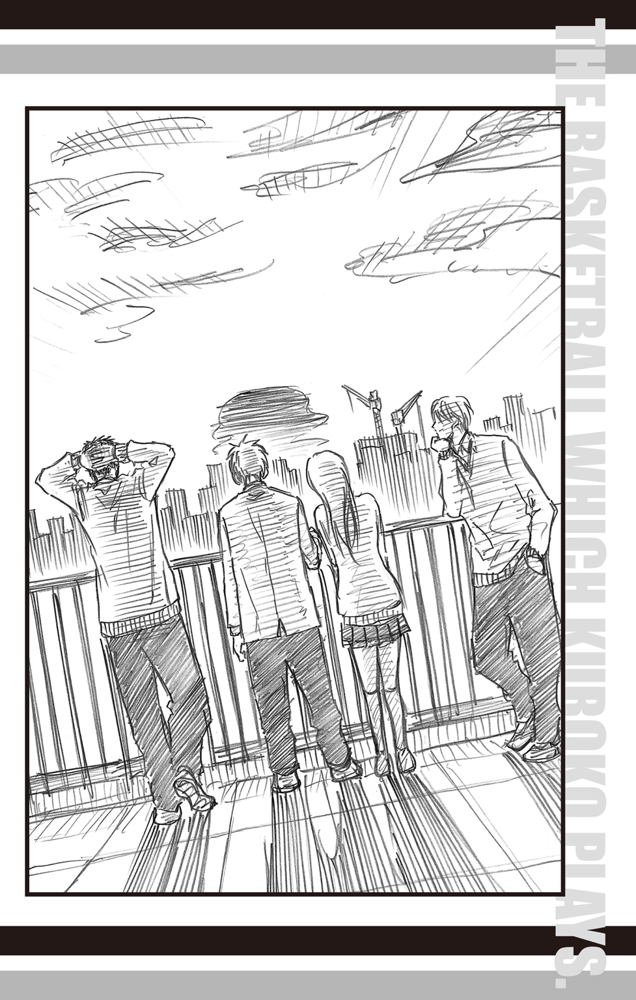
桃井はちらりと青峰を一瞥すると、隣の黒子に耳打ちした。
「よかったね、テツ君。青峰君も喜んでるよ」
「そうですか、よかった」
黒子も嬉しそうに目を細める。桃井はさらに声を落とし、そっと囁いた。もう一言。
「バッシュじゃなくても、お礼ができたね」
「え......？」
黒子ははたと桃井を見つめる。
桃井は「ね？」と微笑んだ。
静かに青く染まる空気の中で、黒子も澄んだ笑みを浮かべた。
「ありがとうございます」
感謝の言葉は、わずかに空気を振動させて音となり――
淡い海の色に沈む街に溶けて消えた。
人事を尽くして天命を待つ。
意味は『人としてできることのすべてを行った上で、最終的結果を運命に委ねる心境』。また、そこから発展して『最上の努力をすればこそ、結果がついてくる』と解釈もできる、ことわざだ。
このことわざを信条とする緑間真太郎は、運命に選ばれるべく、日々並々ならぬ努力と験担ぎに基づく規則的生活を送り、人事を尽くしている。
特に験担ぎに関しては実に緻密で、朝は必ず右手だけでメガネをかけることから始まり、夜は一度布団に入ったのち、もう一度起き上がり、ストレッチをしてからナイトキャップをかぶって眠るという、極めて独特な生活を緑間は自分に強いていた。
その験担ぎを守るためには、こんなことも起こる。
ある朝のことだ。緑間は目が覚めると、当然のごとくメガネに右手を伸ばした。
「............ん？」
布団の中で、緑間は小さく疑問符のついた声を発する。
彼の右手はぱたん、と敷き布団を打つだけで、メガネをつかまなかったのだ。
右手はメガネを探して、辺りをさまようが、見つからない。
「なんなのだよ......」
面倒そうにつぶやき、緑間は体を起こすと、本来メガネがあるべき場所を見つめた。
いつもであれば、枕元に置いてあるはずのメガネが、跡形もなく消えていた。
「む......？」
緑間は眉をひそめ、布団の周囲に目を配る。しかし、そこらにもメガネらしきものを見つけることができなかった。
「ん......？」
今度は別のことが気になった。
自分は何故、いとも簡単に周囲にメガネがないと判じることができたのだろうか。
その疑問が浮かぶと同時に、緑間は右手を右頰に当てた。
指先にかちんとなにかが当たる。指に慣れ親しんだ感触。
メガネだった。
「忘れていたのだよ............」
緑間はたまらず、ため息をつく。
思い返せば、昨日の夜は何故か寝つきが悪く、仕方なく天井の木目を数えていたのだ。
数えているうちに眠ってしまったようで、結果、メガネを朝までかけっぱなしにしてしまった。
幸いなことに緑間は寝ているときに寝返りを打たない質なので、メガネを落とし、体で押しつぶしてしまうということはない。
ちなみにこの体質について、夏合宿の際に同部屋で寝た高尾には、
「天井向いたまま、朝までピクリともしないなんて、マジ怖いって！ あと、験担ぎ多すぎ！ マジ多すぎ！」
と散々冷やかされたが、今朝はその寝相のおかげで大事なメガネを守れたのだから、冷やかしの対象どころか、誇っても良い体質だろう、と思う反面、どのみちメガネをかけたまま寝るなど、失態でしかなく、「オレとしたことが......」と眉間の皺を指先で押さえた。
ちらりと時計を見ると、起床予定時刻は過ぎている。緑間の辞書に「寝坊で遅れる」という単語は載っていない。
緑間はすぐさま布団から出ようと、左手をつき、片足の膝立ちになった瞬間、
「!!」
まるで電流が走ったかのように、体を強ばらせ、次いでバランスを崩した。前傾する体を、右手を布団につくことで、どうにか支える。
絶望をそのまま体で表した体勢で、緑間は固まった。
冷や汗が、すーっと頰を伝う。
どうしても見過ごすことのできない問題に気づいてしまったのだ。
その問題とは――
「今朝はメガネを右手でかけていないのだよ......！」
何もない空間を凝視して発せられた一言は、この上なく深刻な声音で、これがいかに重要な問題であるかを告げていた。
一応、朝一番に右手でメガネには触れたが、果たしてこれは「右手でメガネをかけた」と解釈できるのか。いろいろと物議を醸しそうな議題である（緑間の思考内でのみ）。
しかも時刻は朝。これから学校に行かなくてはいけないことを考えると、この議題を検討するのも時間との勝負だ。いろいろと悩んでいる猶予は与えられていない。
「くっ、仕方ない......！」
時間にして、コンマ一秒以下で決断した緑間は、考えられる対策案の中で最善策を実行に移した。
その最善策とは、こうだ。
「もう一回寝るしかないのだよ！」
ばふっと枕に頭を乗せる。朝一番の験担ぎのためには、寝るところからやり直し、もう一度起き直すしかないと判断したのだ。
メガネを枕元に置き、目をつぶる。頃合いを見て起き上がれば、朝目覚めたことになるという寸法だ。
しかし緑間はすぐさま飛び起きた。
「寝直すのであれば、ストレッチも必要になるのだよっ」
布団から抜け出すと、ストレッチを施し、ナイトキャップをかぶりなおすと、再度布団へ潜り込む。
かくして、寝る前の験担ぎからやり直し、再度起きた緑間は、今度こそ右手でメガネをかけることに成功した。
一見、無意味に見える一連の行動。しかしこれが、緑間にとっての人事を尽くすということだった。運命に選ばれるためには、それなりの努力と労力は必要ということを緑間は承知している。
だが運命は常に予想外の試練を課すものだ。
十月某日。
この日も、緑間はいつもどおりに右手でメガネをかけ、部屋で支度をすませたのちに、リビングに入った。キッチンに立つ母に挨拶を済ませ、朝食が用意されているテーブルに着き、テレビがついていることを確認する。
流れている番組は当然、「おは朝だ」。
時間もタイミングも全て予定通りで、ちょうど星座占いのコーナーが始まった。
アナウンサーが各星座の運勢と今日のラッキーアイテムを順次紹介していく。
『続いて、蟹座！ 今日の蟹座は要注意！』
朝食を食べながら、他の星座を聞き流していた緑間がすっと視線を画面に向けた。
『予想外のことが起こりやすいので、ラッキーアイテムは必ず携帯してね！』
緑間は一言も聞き漏らさないように、テレビを注視する。
『蟹座のラッキーアイテムは、赤い......』
赤い？ 緑間は瞬時に自分が持つ赤いグッズを思い浮かべ、続く言葉を待った。
『では、呼んでみましょう、会場の斉藤さ～ん!!』
「ぶふっ！」
あまりの衝撃に、緑間は食べていたご飯を吹き出し、口を開けたままテレビを凝視した。
画面は、見慣れた「おは朝」の占いコーナーではなかった。どこか知らない場所が映っている。明らかに違うチャンネルだ。
「な、なんなのだよ!?」
緑間は慌ててリモコンを探した。緑間が「おは朝」を神聖視しているのを、家族は皆よく知っている。なので、チャンネルを替えるなどありえない。
では、一体誰が？
リモコンを探す緑間の視線は、テレビの前に置かれたローテーブルに、見慣れぬものを見つけ、急停止した。
「な、なんなのだよ、おまえは!?」
それは、ローテーブルの上に置かれたリモコンに片足を乗せ、愛らしい顔を緑間に向けている、黒猫だった。
「ニャーオ」
緑間は気づかなかったが、庭に面している窓が開いており、カーテンが風に揺れていた。どうやら野良猫が入ってきてしまったらしい。
黒猫は「ニャー」と鳴くと、軽やかに部屋を横切り、朝食の並ぶテーブルにぴょんと飛び乗った。
「おまえ、なんてことをしてくれたのだよ!!」
緑間が怒りに任せて、黒猫を捕まえようと手を伸ばす。
しかし黒猫はさっと手を避けると、朝食の鮭の切り身をくわえて、ぱっとテーブルから飛び降りた。
「なっ!? この泥棒猫！ オレの大事な朝食を!! 待て!!」
しかし猫が人の言葉を解するわけもなく、また解したところで待つはずもない。
黒猫は開いている窓から外へと、あっという間に姿を消した。
「これだから猫は嫌いなのだよ！」
緑間は吐き捨てるように言って、テレビ画面を見直した。
今更チャンネルを戻したところで、「おは朝」の占いコーナーは終わっているに違いない。
「なんということを......」
緑間はひとり、呻いた。
今日のラッキーアイテムを聞き逃してしまうとは、まさに一大事である。
緑間は脳内で、必死に解決策を探った。
「おは朝」のＨＰを見る？（いや、毎日の占い結果は掲載されていない）
過去のデータを元に、きょうのラッキーアイテムを推測する？（無駄だ。「おは朝」のラッキーアイテムに法則性がないことは、これまで何度も検証してきたので明白だ）
誰かに聞く？（他人に聞くのは腹立たしいから止めよう）
緑間は唇を嚙んだ。名案が見つからない。こうなってしまっては、選択肢は一つしかないだろう。
緑間はぐっと拳を握り、朝食もそこそこに自室へと戻った。
「うわっ、真ちゃん、どうしたの!?」
教室に入ってきた緑間を見て、高尾和成は驚きの声をあげた。
「別に。どうもしていないのだよ」
緑間はこの上なく不機嫌な様子で、制服を脱ぎ、自分の座席にかける。
「いやいや、それはないでしょ。だって、めちゃくちゃ汗かいてんじゃん」
緑間の前の座席に座る高尾は、イスに後ろ向きに座り直すと、汗をぬぐう緑間をおもしろそうに見つめた。
「朝練ないからって、朝っぱらからサウナ？ オヤジ臭いね」
「オレがそんなことするわけないのだよ！」
緑間はギロリと高尾を睨むが、高尾は気にした様子もなく、楽しげに目を細めた。
「じゃ、どうしたわけ？」
「......そんな楽しそうに聞いてくる奴には話さないのだよ」
「えー、真ちゃんのいじわる～」
「気持ち悪い言い方をするな」
「まぁまぁ、いいじゃないの。ほら、話して」
「............」
緑間はしばし考え、やがてため息をついた。
これ以上絡まれるよりは、簡単に事情を説明したほうがうるさくないと判断し、ぽつりと言う。
「トラックに捕まったのだよ」
「は？」
高尾の吊り目が大きく見開かれる。
「トラックに捕まった、って、何が？」
「オレが、だ」
「は？ なんで？ え、まさか誘拐!? じゃないよね、真ちゃん、ここにいるし。じゃあ、誘拐未遂だ！ ゲッ、真ちゃんが？」
高尾は目の前に座る緑間を見て、至極不可解そうに首を振った。
「なにもこんなデカイだけの男を誘拐しなくても」
「なに一人でごちゃごちゃ言っているのだよ......！」
緑間は忌々しげに高尾を睨む。眼力に物理的作用が備わっていれば、おそらく高尾は無事では済まないほどの凄みだ。高尾は仕方なく、降参とでも言うように両手を上げた。
「はいはい、そう睨むなよ。でも、意味わかんねーよ？ トラックに捕まったって、なにがどうして、そうなるんだよ」
「............」
緑間は再度大きくため息をつき、机に肘をついた右手で額を押さえた。
我ながら、とうてい納得できない体験だったと緑間は思う。
今朝、緑間はほぼいつも通りに家を出て、いつもの通学路を歩いていた。住宅街を貫く細い道だ。一方通行で、車は滅多に通らない。
そこに今朝は珍しくトラックが停まっていた。
道を塞ぐようにトラックが停まっているため、車体の脇を通り抜けなくては前へ進めない。この道を通ることも験担ぎの一つになっているので、遠回りするという選択肢はない。トラックの運転手が戻るのを待ってもいいが、それはいつになるかわからない。仕方なく体を横にして、まるでカニのように進み、通り抜けることにした。
トラックの脇は、背中を壁にこするようにして歩けば、通れなくはない。慎重にかつ急いで進む緑間だが、突然かくんとうしろに引かれた。
驚いて振り向けば、なんと自分のスポーツバッグのショルダーが、トラックの荷台についた金具に引っかかっている。
緑間は舌打ちしたい気持ちを抑え、ショルダーを金具から外そうと手を伸ばした。
そのときだ。
ドルルゥン。
油臭い独特な煙がトラックの後部から吐き出された。
まさか......と嫌な予感が緑間を襲う。
咄嗟の判断で、スポーツバッグを肩から外したが、それと同時に――
トラックは走り出した。
「はぁ？ 走り出した!? マジで!?」
緑間から話を聞いていた高尾は、驚きと呆れがない交ぜになった顔をする。
「こんなこと、ウソをついても仕方ないだろう」
緑間は憤然として言った。
「まあ、そうだけどさ......。だって、その状態でトラックって走るか？ 後方確認とか、あるんじゃねーの？」
「知らん。だが、走り出したのは事実だ」
「あ、そう......。で、走り出して、どうしたの？」
「仕方なく、オレも走った」
「はい？」
「トラックにオレのスポーツバッグをやるわけにはいかないからな。追いかけるしかないだろう」
結局、トラックが大きな通りに合流するために一時停車するまで、緑間はひたすらトラックを全力で追いかけたらしい。
「大通りに出るまでって、『止まれー』とか呼びかけなかったわけ？」
高尾が素朴な疑問を口にすると、
「住宅街で大声を出すと迷惑になるのだよ」
という答えが返ってきた。高尾は、そこは大声を出してもいい状況じゃないのかという疑問が浮かんだが、これまでの経験上言っても無駄なことはわかっているので、代わりに、「ヘヴィな朝だったね」と呆れ顔で無難な感想を述べる。
だが、さらに呆れさせる言葉を緑間はさらりと続けた。
「これに比べれば、マンホールに落ちるなど茶番だったな......」
「はぁぁ!? なにそれ」
「別に。マンホールに落ちただけなのだよ」
「いや、『だけ』ってレベルじゃないだろ、それ！ なんで落ちるわけ!?」
「マンホールのフタが開いていたからに決まっているのだよ」
「意味わかんねーし！」
「老婆に打ち水をかけられ、お詫びに家に招かれたが、断ろうとして退いたらマンホールが開いていただけなのだよ」
「前提からして、おかしくね!? 全然、『だけ』ですむ話じゃねーだろ！」
高尾は頭が痛くなってきた。「何の冗談だ」と言いたいぐらいの経験談だ。
「真ちゃん、今日なにか祟られてるんじゃないの？ なにか悪いことした？」
「............おまえには関係のないことだ」
一瞬、妙な間があったことを高尾は見逃さない。
「関係あるって。えーっと、ほら、真ちゃんに何かあったら、一緒にいるオレまで巻き添えくらうかもしれないじゃん？」
「なにを馬鹿な......」
言葉は最後まで続かなかった。背後で女子生徒の悲鳴があがり、続いて大量の水が緑間を襲ったのだ。
「うわっ」
高尾は持ち前の運動神経で、ぴょんとすばやく後方に避難する。
「ご、ごめんなさい、緑間くん、大丈夫!?」
女子生徒が慌てて、水浸しになった緑間に近寄った。彼女の手には花瓶が握られている。
「花瓶の水を替えてきたら、つまずいちゃって......」
緑間は憮然として、水がしたたる髪をかき上げた。水と一緒に振ってきたらしいコスモスの花が頭から落ちる。
「......ぐっ、くっ、く......あははははははっ！」
堪えきれなくなって高尾が笑い出した。
「すげーっ、マンガみてーっ！ 真ちゃんが、か、花瓶で......あははははは!!」
「全然おかしくないのだよ！」
緑間は一喝するが、ツボに入ってしまった高尾の笑いは収まらない。
女子生徒は恐縮し、ごめんなさいごめんなさいとリピートし続けていた。
緑間は女子生徒を一瞥すると「気にしなくていい」とだけ言い、教室の外へと歩いて行く。高尾は、泣きそうになっている女子生徒に「大丈夫、真ちゃん着替え持ってるから」とさらにフォローを入れ、緑間の後を追いかけた。
男子更衣室へと急ぐ緑間は、高尾がついてきていることに気づくと、不機嫌さを隠さずに言った。
「どうしておまえがついてくるのだよ！」
「いやー、真ちゃんが心配で......ぷっ、くくっ」
「完全におもしろがっているだろう！ だいたいおまえは、巻き添えをくらうどころか、ちゃっかり逃げていたじゃないか！」
「いやー、人間の防衛本能ってすごいよね。それよりさ、やっぱなんかあったんでしょ？ 教えてよー」
緑間は黙秘したまま、更衣室に入った。高尾も当然のごとくついてくる。
「高尾......」
緑間は忌々しげに高尾を睨んだ。そんな緑間に高尾は苦笑する。
「だから、そう睨むなって。とりあえず濡れた制服脱ぎなよ。体拭いてる間に、部室棟のランドリーに入れてきてやるから」
「............」
緑間は小さく息をのみ、「ふん......」と顔を背け、服を脱ぎ始めた。
予備の制服に着替え、教室に戻った緑間が渋々ながら話した心当たりに、高尾は目を丸くした。
「つまり、『おは朝』の占いグッズがないからそうなったってこと!?」
「おそらくな......。ひとまず家中の赤いアイテムを持ってきたが、効果はなかったのだよ」
緑間はそう言って、スポーツバッグのファスナーを開く。中には、赤いボールペン、コップ、とうがらし、お皿、片目のダルマ、ハイヒールなど、赤一色で溢れていた。
「うわぁ......壮観だ......」
そう言って、高尾はハイヒールを手に取る。
「これって、真ちゃんのお母さんの？」
「ああ。若い頃に履いていたものらしい」
「へー......。お母さんも思い出の品がこんなふうに使われるとは思わなかっただろうねー」
高尾の呆れていた表情が、また徐々に笑いを堪えるものへと変っていく。
「てか、アイテムないだけで不幸って......『おは朝』、どんだけスゲーの......ぷっ」
ついには吹き出しそうになるが、緑間の視線を感じ、なんとか押し殺した。
代わりに、神妙そうな顔を無理矢理作り、聞いた。
「今までだって、見逃したことはあったんでしょ？ そん時はどうしてたわけ？」
「見逃したことはない」
「はぁ？」
「『おは朝』を見るようになってからは、見逃したことはないのだよ」
「マジで!?」
「ああ。ラッキーアイテムが手に入らないことはあったが、見逃したことはない」
「わーぉ、筋金入り」
高尾はお手上げというように両手を天井に向けた。そのまま、頭のうしろで手を組むと、緑間を正面から見つめた。
「どういう理屈かはわかんないけどさぁ、とりあえずラッキーアイテムをゲットしたほうがいいんじゃない？ このままいくと、アンラッキーで死んじゃうかもよ？」
「なにを馬鹿な......」
そこまで言って、緑間はバッとうしろを振り向き、今度は誰も花瓶を持って近づいていないことを確認する。
その様子を見て、高尾は「自分だって気にしてんじゃん」と指摘した。
「さっきの花瓶にしろ、朝のトラックにしろ、ちょっとアンラッキーすぎでしょ。やっぱりラッキーアイテムがないとやばいんだって」
「しかし、オレが持っている赤いアイテムはこれで全てだぞ」
「まあ、他にも当たってくしか、ないんじゃん？」
そう言うと、高尾は自分の鞄をまさぐり、目的のものを取り出すと、「ほれ」と緑間に差し出した。
「オレ、赤いグッズって、これしか持ってないんだよね」
「......なんなのだよ、それは」
差し出されたものを胡乱げに見つめる緑間に、高尾は至極普通に答える。
「見ればわかるじゃん。カチューシャだよ」
赤く細身のカチューシャを高尾は左右に振ってみせた。
「ちゃんと赤いだろ？」
「それは見ればわかる。まさか、それをオレに......？」
「そ。つけたら？」
「つけられるか!!」
「なんだよ、ラッキーアイテムかもしれねーだろ」
「そんな女々しいものをつけられるわけがないだろう！」
「オレは時々使ってるっつーの！ 便利だから、使ってみろって！」
「断る！ だいたい、なんで赤いカチューシャをおまえが持っているのだよ！」
「オレの妹ちゃんがくれたんだよ！ かっわいいだろー！」
「知るか！」
「いいから、つけろって！ 死ぬより、ましだろ！」
「っ!!」
緑間がぐっと黙り込んだ。その隙を見逃さず、高尾は追加攻撃を続ける。
「もしも、本当に『おは朝』のラッキーアイテムがカチューシャだったら、つけるんだろ？」
緑間は完全に沈黙した。高尾はすばやくカチューシャを緑間の頭にセットする。
高尾はにっこり......いや、にんまりと笑った。
秀徳高校に入学して以来、初めて緑間を説得できた瞬間であった。
二時間目の授業が終了するとすぐに、高尾は緑間に言った。
「真ちゃん、それ、ラッキーアイテムじゃねーわ」
「............そんなことは、わかっているのだよ」
緑間はこめかみをもみながら答えた。まだ午前中だというのに、すでに疲労感を覚えている状態だ。
一、二時間目は連続で美術の授業だった。
美術室に移動し、石像をモデルにデッサンをする......予定だった。
予定は予定で終わった。というのも、その石像を緑間が壊してしまったからだ。
一時間目が始まるとすぐに、美術教師は緑間を含む何人かの男子生徒に石像を美術室内の各所に移動するよう指示した。グループ分けして石像をデッサンさせるつもりだった。
しかし、いざ運ぶとなると石像はなかなかの重さで、緑間は運んでいるうちにつまずき、同じように石像を運んでいた他の男子生徒を巻き込んで転倒した。その後はまるでドミノ倒しのように、その男子生徒は別の男子生徒を巻き込み、別の男子生徒はさらに別の男子生徒を巻き込む......といった具合に連鎖し、結果として石像全てを割ってしまった。
当然のことながら、緑間は美術教師に叱られるハメになった。
教室に戻り、返却された赤いカチューシャを鞄にしまうと、高尾は「ま、元気だしなって」と緑間の肩を叩いた。
「まだまだ望みはあるからさ」
「おまえ、よくもそんな無責任なことが言えるな......」
「だいじょぶ、だいじょぶ。ちゃんと手は打ってあるから。任せて！」
高尾はぐっと親指を立ててみせる。
「手？」
高尾の自信たっぷりな言葉に、緑間が逆に不安を募らせていると、「高尾、先輩が来てるぞー」とクラスメイトから声をかけられた。
緑間と高尾がそろって戸口に目を向けると、そこには三年の大坪泰介が立っていた。大坪は「よう」と片手をあげ、二人が来るのを待っている。
「なぜ、キャプテンがここに......？」
緑間が首をかしげると、「オレが呼んだんだよ」と高尾が楽しげに答えた。
「キャプテン、早かったすね」
高尾の言葉に、大坪はやれやれといった様子で言った。
「おまえが早く来てくれって、メール寄こしたんだろうが。それより、緑間」
大坪は深刻な顔で緑間に向きなおると、「命の危機だそうだな。これがラッキーアイテムかどうかはわからんが、とりあえず持ってきてみた」
と、手に持っていた紙袋を差し出した。
「死ぬなよ」
「何故そんなに大袈裟なことになっているのですか......」
紙袋を受け取り、緑間は横目で高尾を見る。高尾はしれっと視線をそらした。
「......中身を見てもいいですか？」
緑間は大坪にうかがいをたてると、
「ああ。かまわんぞ」
大坪は鷹揚な笑みを浮かべて答えた。
「あ、オレも見たい見たい。キャプテンって、どんなの持ち歩いてるんす......か？」
紙袋から取り出されたものを見て、高尾の目は点と化した。
「な、なんすか、これ......」
高尾が茫然とする隣で、緑間が黙々と紙袋から取り出したものは、長いマフラーだった。
「............手編み、ですね？」
緑間が目をこらし、マフラーを見つめる。大坪が嬉しそうに「わかるか」と笑みを浮かべた。
その様子に高尾がすぐさま反応する。
「あっ、もしかしてキャプテンのファンからの差し入れですか!? 『手作りマフラーですっ！ これであったまってください！ 本当は私があっためたいんですけど！』みたいなっ!?」
ご丁寧にも小指を立ててキャピキャピした裏声を出した高尾を、緑間と大坪は冷ややかに見つめた。
「高尾、気色悪いのだよ」
「ああ、気色悪いな」
「キャプテンまで！ だって、そういうことなんじゃないんすか!?」
高尾が口をとがらせ抗議すると、「残念だが、そういうものじゃない」と大坪は否定した。
「これは俺が作ったんだ」
「はぁぁぁぁ!?」
緑間と高尾は、マフラーと大坪を交互に見比べ、そして今一度マフラーを見つめた。
なかなかの出来である。
「キャプテン、そういう趣味が......？」
「そんなわけないだろう。家庭科の授業で作ったんだ」
「ああ、なるほど......」
「ただ、編んでいるうちに楽しくなってしまってな。少々、長くなってしまった」
大坪が少し照れたように笑った。「凝り性なんだよ」
「少々ですか......」
そう言うと、緑間はしゅるっとマフラーを垂らしてみる。マフラーの長さは緑間の身長と同じ丈だった。
「なげぇ......」と高尾がつぶやく。言わずもがなの感想であったが、口にせずにはいられない長さだった。
「他にもあるぞ。見てくれ」
大坪はにこにこと紙袋を指さした。自分の手作りの品を披露する喜びに溢れた笑顔だ。
緑間が言われるままに紙袋をまさぐると、赤い毛糸で編まれたセーター、巾着、帽子、腹巻き、膝掛け、コースター、編みぐるみ、ミトン、果てはアクリルタワシらしきものまで、次々と出てきた。ご丁寧にも全て赤い毛糸で編んである。
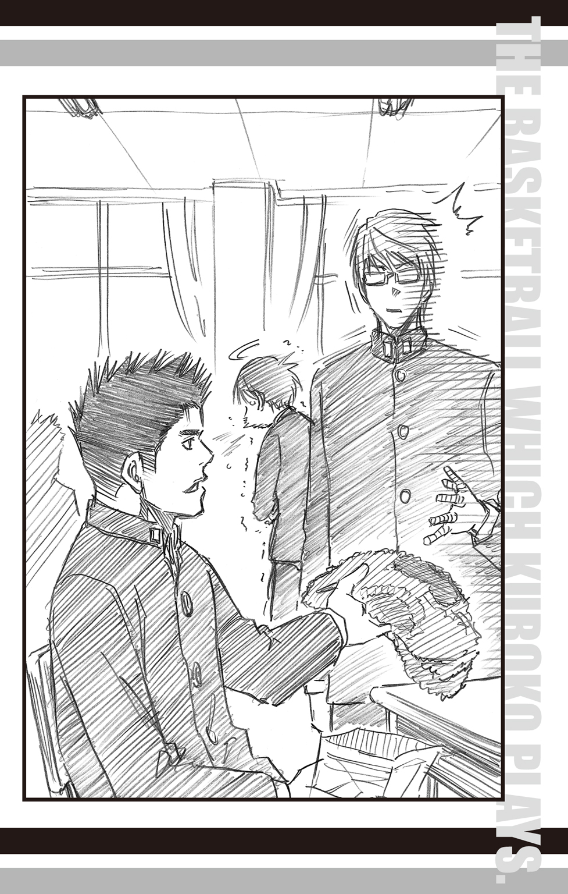
「どんだけ赤が好きなんすか!? つーか、どんだけあるんすか!?」
呆れる高尾の隣で、緑間は静かに顔を引きつらせた。もはや言葉も出ない。
大坪は二人の様子を意に介する風もなく、堂々と答える。
「こういうのは連鎖なんだ。最初は毛糸を使い切ろうと思って小物を作りはじめる。すると、小物が出来上がるより先に毛糸が切れて、買い足すとまた余る。そうしているうちに、増えてしまうんだよ」
「へー、そうすか......」
高尾は悠然と腕組みをした大坪の手を見つめた。
試合中はゴール下を守り、チームメイト全員が頼りにするあの手が、いじましくも編み物をするとは。
「ぷっ」
高尾は慌ててうつむくと両手で口を押さえて、こみ上げる笑いを必死に抑えた。
「どうした、高尾」
「な、ななな、なんでもないです......っ」
肩を小刻みに震わせている高尾に大坪は片眉を上げてみせるが、深くは追及せず、
「緑間、どれがラッキーアイテムかはわからんが、ひとまず活用してくれ」
と言って、自分の教室へ戻って行った。
大坪を見送った後で、緑間は無言でマフラーを首に巻いた。
「......暑い」
初秋とはいえ、まだ残暑の残る季節。
二重三重に巻いてもたっぷり余るマフラーの保温力は緑間を苦しめ、それを見た高尾を過呼吸寸前まで笑い転げさせた。
昼休みになると、宮地清志と木村信介が緑間たちの教室を訪れた。
「よぉ、緑間。死にそうなんだって？」
嬉しそうに言う宮地に、緑間は冷めた表情で答える。
「ちゃんと生きてます」
「ちょっと死にかけたけどね」
戸口に寄りかかった高尾が、にやにやと訂正した。
緑間は横目で高尾を睨む。「よけいなことを言うな」と視線が語っていた。
しかし、そんなことで怯む高尾ではない。「死にかけたって、何があったんだよ」と坊主頭の木村が尋ねれば、簡単に口を割った。
「キャプテンから、赤のマフラーを借りたんすよ。それを真ちゃんってば、三時間目の体育でも、つけたままやってて」
体育の授業はサッカーだった。バスケで運動神経は鍛えられている緑間と高尾にとって、種目は違えども、苦のない授業だ。緑間は赤いマフラーを翻しながら、いつものようにボールを追い、敵チームのプレイヤーをかわしてゴールを決めようとした。しかし。
「敵チームの子にマフラー踏まれて、真ちゃん、思いっきり転んじゃって。しかも、マフラーをぐるんぐるん巻いていたから、首を思いっきり引っぱられて......」
「いい気味！ じゃねぇ、大変だったな、緑間！」
宮地のまったく心のこもっていない気遣いに、緑間は苦虫を嚙みつぶしたように顔を歪める。
「まあまあ、そんな顔すんなって。オレたちも赤いアイテム持ってきたから」
と、木村は片手に持っていた紙袋を差し出した。
「なんですか、それは」
緑間は、家来が差し出した貢ぎ物を吟味する王様のような視線を紙袋に注いだ。
「うちの店の商品だ！ 赤パプリカ、赤トマト、赤リンゴ、赤イチゴ！ どうだ、うまそうだろ！」
木村が胸を張って答える。彼の実家は青果店を営んでいた。
高尾が「赤イチゴって変じゃないすか？ 普通、赤でしょ」と聞けば、さすがは青果店の息子、「今は白いイチゴもあるんだよ、覚えとけ」と雑学も披露する。
「配達中の親父が軽トラで近くを通ったから、少し分けてもらったんだ。ありがたく思えよ！」
緑間は無言で紙袋を受け取り、今度は宮地に視線を移した。
「で、あなたは何を持ってきたんですか」と目が語っている。
その尊大な態度に、宮地は若干のイラつきを覚えつつも、「オレはこれだ」と赤いＴシャツを差し出した。彼が練習中によく着ているものだ。
「ありがたく思えよ」
お返しだと言わんばかりに上から目線で言うと、
「いや、いらないです」
と即答された。
「はぁ!?」
「いくらラッキーアイテムとはいえ、そんな汗くさいのは必要ありません」
「洗ってあるっつーの！ 当たり前だろうが！」
「洗濯時に柔軟剤は使っていますか？」
「はぁ？」
「オレは柔軟剤を使っていない衣類は認めないので」
「めんどくせー!! だーっ!! もぉ、木村、軽トラ貸せ！ こいつ、轢く！ ぜってー轢く！」
ぎゃーぎゃーと騒ぐ宮地をフォローする者はなく、木村が「とりあえず持っとけ」と赤Ｔシャツを緑間に押しつけ、先輩二人組が去る頃には昼休みが終わろうとしていた。
席に戻った高尾は、目尻に浮かんだ涙を拭う。
「あー、マジおもしれー。真ちゃんが死ぬ前に、オレが笑い死にしそう」
「ふん。いっそ死んでくれたほうが、静かでいい」
「真ちゃん、酷くね？」
ぶう、と膨れっ面をする高尾を「率直な感想だ」と切り捨て、緑間は鞄から弁当箱を取り出した。急いで食べないと午後の授業が始まってしまう。育ち盛りの男子高校生が昼飯を抜くなど、水を持たずに砂漠へ旅立つようなものだ。
「......ん？」
「どしたの、真ちゃん？」
自分の弁当を取り出し、箸をつけようとしていた高尾が、顔を上げて緑間を見る。高尾の弁当は、午前中に早弁をしているため半分ほどしか残っていない。いつも通りのペースで食べても、休み時間内に楽勝で食べ終わる計算だ。
対して緑間は、早弁をしない主義なので、かなりのスピードが要求される。
にもかかわらず、緑間は弁当箱を包むハンカチさえ、解いていない状態だった。
「食べないの？」
高尾が不思議そうに尋ねた。緑間はじっと弁当を見つめている。
「なにか......いつもと違う気が......」
緑間らしくないはっきりしない物言いに、高尾は改めて彼の弁当を見た。
いつものハンカチに包まれた、いつもの四角い弁当箱だ。
「気のせいか......？」
緑間はどこか釈然としない様子だが、食欲には勝てなかったらしくハンカチをさっと開いた。
瞬間、緑間は自分の違和感の正体がなんだったのかを知った。
「ぶわっはっはっはっはっはっはっ!!」
高尾が弾けたように笑う。緑間は頭痛のする頭を押さえた。
「道理で持った感触が違うと......」
緑間はハンカチに収まっていたものを恨めしげに見つめる。
ケースに入った国語辞書がハンカチの上に鎮座していた。
何度瞬きをしようとも、国語辞書が弁当箱に変わるようなことは起こらない。
今朝の泥棒猫騒ぎに動揺した緑間の母が、どうやらうっかりしてしまったようだ。
うなだれる緑間を追い立てるように、休み時間終了のチャイムが鳴り響いた。
その後も緑間のもとに、バスケ部員が次々と赤いアイテムを持っては訪れた。
当初、高尾がメールで知らせたのは大坪、宮地、木村の三人だけだったが、その後、大坪たちが積極的にそのメールを他の部員に転送したらしい。
届けられたものは、実に様々であった。
コンパス、定規、消しゴムなど文房具類から、なぜそんなものを学校に持ってきているのか、問いただしたくなる水鉄砲、赤いバラ、天狗の面、数珠なども届けられた。なかには、なにを勘違いしたか、赤ちゃん用オムツを持ってくる者までいて、緑間の不機嫌さは天井知らずとなり、高尾は笑いすぎて腹痛を起こした。
しかし、どれだけ届けられようとも、緑間のアンラッキーは止まることを知らず、もはや先生に叱られるのは当然となり、むしろかえって鞄から溢れるほどの赤いアイテムに囲まれて授業を受けること自体を叱られるようになっていた。
「真ちゃん、おつかれー」
放課後、ぐったりと机に伏した緑間の肩を高尾はバンバンと叩く。
「そんなニヤケ面で言われても、腹が立つだけだ......」
メガネの奥から睨む緑間に、高尾は「だってさー」と笑いかけた。
「深刻に悩むより、笑いとばすほうがいいじゃん」
「ふん......」
緑間は小さく鼻を鳴らすと、立ち上がった。
「帰る」
そう言って帰り支度を始めた緑間に高尾は尋ねる。
「今日の練習はどうすんの？」
「休む。こんな日はろくなことが起こらない。練習をして、フォームに変なクセでもついたら、大変なのだよ」
「確かにね。じゃ、オレも一緒に帰ろうかな」
「なんだと？」
緑間が帰り支度の手を止め、高尾を見つめた。
「おまえまで練習を休む必要はないだろう」
「まー、そうなんだけどさ。今日の真ちゃん、一人にしとくと危なそうだし」
高尾は話しながら、自分も帰り支度を始めるが、緑間が沈黙したまま動かないことに気づき、手を止めた。
「なに？ どうしたの？」
「............おまえに心配されるなど心外なのだよ」
怒ったような拗ねたような顔で言う緑間に高尾はきょとんとする。
「心配するでしょ。ウィンターカップ前に真ちゃんに死なれると困るしさ」
「............」
緑間は再度沈黙し、何かを誤魔化すようにメガネの位置を直した。
その様子に、高尾はピンと来るものがあった。
だから、わざと偽悪的ににやりと笑って言った。
「まあ、というのは建前で、本音はもっと真ちゃんのオモシロシーンが見たいだけだったりして」
「......ふん、そんなことだろうと思ったのだよ」
と言うと、緑間はようやく帰り支度を再開する。
それを見て、高尾はやれやれと思う。照れて思考停止になるって、どんだけ素直じゃないんだよ。
チームメイトに心配されたことが、緑間にとってはどうやらこそばゆいらしい。
今日一日、散々チームメイトから赤いアイテムを集めておきながら、今になってようやくそれが『心配されていたから』と気づき、どう反応していいのか戸惑っている。
手のかかるエースだよ、まったく。
高尾は緑間に見えないよう、口の端を上げて、部活を休むというメールを大坪に打った。
学校を出てからも、アンラッキーは立て続けに緑間を襲った。
道で転ぶこと五回。人とぶつかること四回（そのうちの一回は出前中の蕎麦屋で、案の定、蕎麦を頭からかぶった）。犬に吠えられること四回。車に轢かれそうになること二回。打ち水をかけられること一回。ペンキ塗り立ての壁に手をつくこと一回。自動販売機で「おしるこ」を押したはずが「トマトジュース」のホットが出てくること一回。
「むしろ爽快だね、こんだけアンラッキーだと」
繁華街の歩道を高尾は緑間と並んで歩きながら、しみじみと言った。
「......オレはまったくもって爽快な気分にはなれないんだが」
緑間は鬱々とした顔で、スポーツバッグのショルダーを持ち直した。
バッグの中には赤いアイテムは入っていない。
今日一日で集まった赤いアイテムはひとまず学校に置いてきていた。あの中に今日のラッキーアイテムがないことは明白だったからだ。
「赤いアイテムさー、けっこう集まったよねー。何個あるんだろ」
高尾のつぶやきに、緑間はすっとメガネを押し上げて言った。
「文具類十種、手作り系九種、衣類三種、食品類五種、日用品十二種、置物類二種、玩具類六種、植物系三種。計五十種だな」
「......すげぇ、いつの間に分類してんの」
「状況把握に正確さは必要だ」
「あっそ。でもなー、そうまでして見つからないアイテムって、結局なんなんだろうな」
「ふん、見つかるまで探してみせるのだよ」
「見つかるのかよ、本当に......」
高尾がはぁとため息をつく。
その時、どこからか小さな悲鳴が聞こえた。とても悲しげな少女の声。
声の主を探して高尾はきょろきょろと辺りを見回した。
「どうした？」
緑間が訝しげに尋ねる。
「なんか、今、聞こえなかった？ 悲鳴みたいな」
「悲鳴？ いや、なにも。工事の音なら、うるさいくらいだが」
と言って、緑間は隣の工事現場を指さす。
新しいビルを建てるらしく、保護壁とシートに囲まれた中からは鉄筋を溶接する音や何かを叩く音が絶え間なく続いている。
「いや、工事の音じゃなくてさ。なんか、こう......あ」
振り返った高尾は見つけた。
歩道に植えられた街路樹のそばで、五歳ぐらいの少女が悲しげに佇んでいる。
少女は目に涙をたたえ、じっと木の上のほうを見つめていた。
高尾も視線を上へと移せば、風船がふたつ、木に引っかかっているのが見て取れた。
風船は持ち手のヒモが互いに結ばれているのか、並んで頭を枝にぶつけている。
「ああ、風船が飛ばされちゃったのか......」
「風船？」
高尾のつぶやきに緑間は首をかしげ、視線の先を見てようやく納得した。
「子供はすぐ手をはなすからな」
緑間は冷たく言い、歩き出そうとしたが、高尾にぽんと肩を叩かれ、立ち止まった。
「なんなのだよ」
「真ちゃん、取ってあげなよ」
「......なんでオレが」
「いいじゃん、人助けだって」
「断る。子供は好きじゃないのだよ。だいたい、おまえがやればいいだろう」
「オレ、十五歳以下には本気出せねえもん」
「本気の意味が違うだろ！」
「じゃあ、真ちゃんは泣いてる女の子、ほうっておけるわけ？」
高尾の問いかけに、緑間はむっとして無言で答えた。さらに高尾は追い打ちをかける。
「それにさ、あの風船、赤いよ」
「なに？」
緑間が改めて見ると、確かに木に引っかかっている風船は両方とも赤い。
「赤いアイテムをとことん探すなら、風船もそうじゃねえの？」
高尾はニヤッと笑う。
緑間は忌々しげに高尾を睨むと、肩にかけていたスポーツバッグを彼に押しつけた。
高尾は嬉々としてバッグを受け取り、少女のもとへ駆けて行くと、少女の目線に合わせてしゃがみこみ、なにやら話し出す。高尾の話を聞く少女の顔が、徐々に驚きに染まっていく。
高尾が緑間を指さすと、少女が驚きと期待のこもった目で、こちらを見た。
居心地の悪さに緑間は顔をそらし、メガネを押し上げる。
まったくもってついていない日だ。緑間は顔をしかめた。
高尾は立ち上がると、少女とともに脇に移動する。緑間の跳躍を邪魔しないようにとの配慮だ。これで準備は整った。整ってしまった。
「まったく......」
緑間はふうと小さく息を吐くと、足首を少し回す。通学用の靴だが、風船までの高さは跳べるだろう。むしろ問題は、気が進まないというほうだ。
「ついてない日だ......」
あきらめに近い声音でつぶやき、緑間は走り出した。
レイアップをするように、二歩前で踏み切る。利き足で地面を蹴り、高く跳び上がる。伸ばした手が、風船のヒモをつかむ。まさに、その時――
ドォォォォォン!!
轟音が背後で響いた。すぐに悲鳴も響き渡る。
「!?」
着地した緑間は慌てて振り返り、目を疑った。
緑間が走り出した位置が、消えていた。いや、消えているわけではない。
ビル工事用の資材が保護壁ごと倒れこみ、その場所を完全に隠してしまっていた。
「な......」
緑間は喉の奥が急速に水分を失うのを感じた。
数瞬前まで、自分はあの場所にいた。もし走りださなければ、あの下敷きになっていた。
緑間は瞬きも忘れ、現場を見つめた。高尾自身も目を丸くしたまま、事故現場を見つめている。
「おにいちゃん？」
緑間の手を熱いものが触れた。おかげで我に返る。触れていたのは、あの少女だ。少女の手が熱く感じるほど、緑間の手は冷え切っていた。
「あのね、風船......」
少女は風船をしきりに気にしている。事故よりも、風船のほうが彼女にとっては問題だったようだ。
「あ、ああ......」
緑間は風船を差し出した。「はなすなよ」
「うん、ありがとう!!」
少女は満面の笑顔を浮かべ、風船を受け取った。
「よかったー、この風船ね、あたしの今日のラッキーアイテムだから、どうしても必要だったの」
「そうか。............ラッキーアイテム？」
緑間が引っかかったように繰り返す。その言葉が高尾の中で、すべてを繋げた。
高尾はしゃがむと目線を少女に合わせて、
「あのさ......そのラッキーアイテムって、もしかして『おは朝』の占い？」
恐る恐るといったように尋ねた。
「そうだよ！ おにいちゃん、よく知ってるね！」
「......もしかして、君の星座って、蟹座？」
「うん!! ありがとね、おにいちゃん！ これ、お礼にひとつあげるね！」
少女はふたつの風船のうちひとつを緑間に差し出した。緑間は素直にそれを受け取る。少女は満足げににこっと笑うと、駆けて行った。走り去る少女とともに、赤い風船が揺れる。
緑間と高尾はそろって、事故現場を振り向いた。
幸い怪我人は出なかったようだが、現場はまだ騒然としている。
遠くでパトカーのサイレンが聞こえた。
「なあ、真ちゃん......」
高尾は引きつった顔で立ち上がり、緑間に並んだ。
「死ななくてよかったね......っていうか、『おは朝』って......」
「............」
緑間はうなずき、自分を戒めるようにつぶやいた。
「これだから、『おは朝』は見逃せないのだよ」
夏休みが終わった。
一日中バスケのことだけを考え、苦しさと楽しさがせめぎ合う日々は終わり、学生としての日常、学校が始まる――
はずだった。
「はいコレ、二丁目の大西さんね。詳しい住所はこっち」
ぽんと手渡された紙箱を受け取った火神大我は、「......はぁ」と気のない返事をする。
「きみ、バイクの免許ないんだよね？ じゃあ、自転車か。気をつけて行っておいで」
やけに白いエプロンが似合う店長は、紙箱に続いて自転車の鍵も火神に渡した。
「......はぁ」
火神は再度気のない返事をし、紙箱に視線を落とした。
紙箱のフタは正方形に近く、厚みは薄い。中からは焦げたチーズの香ばしい匂いが漂ってくる。
ピザだった。
見まごうことなく、ピザの箱だった。
しかしピザの箱がこの場所にあることも、火神がそれを手にしていることも、なんら奇妙なことではない。
なぜなら、火神がいるのは、ピザショップの厨房であり、彼自身が身につけているのは、着なれた学生服でも、私服でも、ましてやバスケのユニフォームでもなく、ピザショップの配達員の制服なのだ。
「ほら、ぼーっとしてないで！ 一分一秒も無駄にすんなよ、バイトくん！」
「......はぁ」
火神は店長にせかされるままに、配達用の自転車にピザを載せ、配達先に向かってペダルをこぎ始めたが、頭の中ではエンドレスにこのフレーズが繰り返される。
即ち。
なんで、こんなことしてんだ？
火神がそれを知らされたのは、夏休み明けの始業日の翌日。生徒たちの憩いの時間、昼休みのことだ。
「は？ バイト？」
火神は教室の自分の席で、スーパーロングＢＬＴサンドを頰張りながら、うしろの席に座る黒子テツヤに聞き返した。
「そうです。今度の週末はみんなでバイトをすることになりました」
黒子は相変わらずの丁寧な口調で答える。
「みんなって、バスケ部のみんなでか？」
「そうです。バイト先はカントクのお父さんが紹介してくれるそうなので、安心していいそうですよ」
「いやいやいや、安心の意味がちげーだろ。なんでバイトすんだよ。練習は？」
火神は、今度はコロッケサンドの袋を開けつつ、当然の疑問を口にする。
「先輩たちは？ それでいいって言ってたのか？」
火神の質問に、黒子は答えなかった。ただ、じっと火神が手にしているパンを見つめる。
「......なんだよ？」
「いえ、よく食べるなぁと」
「それ、今の話に全然カンケーねえだろ！」
と言う火神のコロッケサンドは、すでにほぼ食べ終わりに近い。
黒子は感情の読みづらい表情でパンをじっと見つめ、やがて、ふうとため息をついた。
どことなく居心地の悪さを感じ、火神は問いかける。
「なんだよ、それ」
「別にどうもしません」
「どうもしねぇって感じじゃなかったろ」
「気のせいです」
「気のせいっておまえ、気になるじゃねえか」
火神は言い募るが、黒子は意に介した様子もなく、話題を元に戻した。
「ともかく、週末の練習は休みで、代わりにバイトする。それが、昼休みのミーティングでした」
まさにまとめに相応しい言葉は、黒子の「この話はこれでおしまい」宣言に近く、仕方なく火神も、
「......おう」
と応え、会話終了の了承とした。
時刻は昼休み終了まで、あと三分。火神は大急ぎでさらにパンの袋を開ける。
本来であれば、黒子と一緒にバスケ部のミーティングに参加し、そこで食べる予定だったパンだ。
しかし、四時間目の授業でつい居眠りをしてしまい、それを運悪く教師に見つけられ、職員室でお説教という予定外の事態となり、今に至る。
「ったく......。夏休み中、ずーっと練習で体動かしてたのに、いきなり座って授業なんて、寝てくださいって言ってるようなもんじゃねーか」
火神はぶつぶつと文句を言いながら、カレーパンにかぶりつく。
「授業中に、いびきまでかいて居眠りしていたら、先生だって注意したくなりますよ。まるで警報のようないびきで、ボクも目が覚めちゃいました」
もう少し寝ていたかったのに、と残念そうに言う黒子に、
「おまえも寝てたのかよ！ なのに、怒られたのがオレだけっておかしくね!?」
と火神は抗議したが、黒子はしれっと、言う。
「先生が気づかなかったのだから、問題ありません」
「........................あー、そうかよ」
火神は不平をカレーパンと一緒に飲み込んだ。
「あーあ、オレも授業中だけミスディレクションできねえかな」
自転車をこぎながら、黒子との会話を思い出していた火神は、だるそうにつぶやいた。二丁目の大西さんへのピザ配達を終え、ピザショップへ戻る途中である。時間帯はちょうどお昼前。店に戻ってもすぐに次の配達が待っているに違いない。できるだけ、店に戻るのを遅くしたかった。
「ったく、意味がわかんねぇ」
結局のところ、なぜアルバイトをしなくてはいけないのかを教えられないまま、火神は週末を迎えていた。
今朝、指定された集合場所の駅前広場に行くと、リコから、アルバイト先はピザショップだと告げられた。
リコの父が用意してくれたアルバイトは数種類あるようで、ピザショップでの労働は火神ひとりのみ。他のメンバーはまた別のアルバイトに従事するようだ。
全員がアルバイト先を確認すると、リコは腰に手を当て、声高らかに宣言した。
「一人あたり、目標金額は一万円！ それを下回ったら......リコ、許さないから♪」
語尾のかわいらしさが、彼女の本気度を伝えている。
今日は何が何でもアルバイトの日のようだ。それが当然という空気に飲まれ、火神は質問する最後のチャンスを逸してしまった。
「バイトしてて、ほんといいのかよ......」
タラタラと自転車を走らせながら、火神は愚痴る。
住宅街をのんびり走っていると、「おーい、火神」と声をかけられた。
見れば、道路脇で白いツナギに身を包んだ、福田たち一年生三人組が座り込み、こちらに向かって、手を振っていた。火神は意外な遭遇に目を見張り、ペダルをこぐ足に少し力を入れて進むと、彼らの前で自転車を止めた。
「こんなところで、なにしてんだ、ですか？」
語尾が日本語的におかしいのは、福田、降旗、河原の隣に二年生の土田の姿を見つけたからだ。
「休憩中なんだ」
土田が首からさげたタオルで汗を拭きながら、言った。
「オレら、引っ越しの手伝いしてんだよ。ほら、あれ、トラック」
福田が指さした先には、確かに引っ越し業者のトラックが停められている。
「今、ちょうど一軒目が終わって、これから二軒目の家に行く前に休憩ってわけ。火神は......ピザのバイトか」
降旗が火神の格好と自転車を見て、質問する前に答えを見つけた。
「ピザかぁ、オレもそっちがよかったなぁ。荷物運ぶの、すげーしんどい」
河原ががっくりとうなだれる。その隣で、土田が困ったように笑った。
「河原、そう言うなって。これも筋トレだと思えばいいじゃないか」
「そりゃ確かに、力は使いますけど......」
恨めしげな表情を浮かべる一年三人組に、土田は笑って、「何事もチャレンジ精神が大事だよ」と励ました。
「チャレンジ......？」
どことなく気になる言葉を、火神は繰り返す。
それが呼び水となった。
「そうだったのか!!」
突然の火神の大声に、引っ越しバイト組がそろってびくっと身を引く。
しかし、火神はそんなことお構いなしに、「そうか、ようやくわかったぜ！」とひとり繰り返す。その顔は、先ほどまでと違い、生き生きとした活力に満ちていた。
「か、火神？ どうしたんだ......？」
まさに恐る恐るといった様子で、福田が尋ねる。
そんな福田に、火神は満面の笑顔を向けると、
「じゃ、オレ、バイトに戻るっす！」
しゅぱっと右手をあげて挨拶し、勢いよく自転車をこぎ始めた。
自転車は瞬く間に加速し、猛スピードで角を曲がると、福田たちの視界からあっという間に消えてしまった。
「な、なんなんだ？」
土田は茫然として、当然の疑問を口にするが、正確に答えられる者はいない。
ただ「まあ、火神っすから」という降旗の言葉に、全員が「ああ、そうだよね」とうなずいた。
ピザショップに戻った火神を、店長は「遅い！」と叱りつけた。
「一軒の配達にいったい何分かけるつもりだ！」
「すいませんしたっ！」
店長の声よりも大きな声で火神は謝り、頭を下げた。
高身長の大男に頭を下げられ、逆に店長のほうが思わず怯む。
「ま、まあ、わかればいいんだよ。じゃあ、次の配達に......」
「行ってきます！ 場所、どこっすか!?」
ピザの箱とともに地図を受け取った火神は、自転車にまたがり、全力でペダルを踏む。
広い自動車道に出ると、車道の左側を一気に駆け抜けた。車さえも抜く勢いだ。
「なんだよ、そういうことかよっ」
走りながら、火神は笑った。
なぜ、アルバイトなのか。もう少しじっくりと考えてみれば、答えなど簡単に出せた疑問だった。
あのリコが考えもなしにアルバイトさせるわけがない。
ということはつまり、これはアルバイトの姿を借りた、強化練習なのだ。
火神はペダルを踏む足に意識を集中させる。おそらくリコはこの配達を通して、脚力を強化させろと言いたいのだろう。
確かに、エアバイクを延々とこぐよりも、ジョギングコースを何周も走るよりも、時間制限のある配達のほうが刺激的だ。
「おもしれえこと、考えてくれるぜ......！」
そうとわかれば、手を抜いている場合ではない。
火神は目的地まで足の力を抜くことなく、走り続けた。
たどり着いたのは、雑居ビルだった。注文者の住所を確認すると、どうやら五階の住人らしい。
「五階か......！」
火神はエレベータホールを素通りし、階段エリアへと進む。
火神は上へと続く薄暗い階段を見上げ、口元を緩める。
「やってやるぜっ！」
気合いを込めて、誰に聞かせるでもなく宣言すると、ピザの箱を小脇に抱え、猛然と二段跳びで階段を駆け上がった。
はじめは二段だったのが、三段になり、四段跳びまでチャレンジしたところで五階にたどり着く。
火神は息を整えながら、目的の部屋、五〇三号室を探そうと歩き出す。すると一番に目に飛びこんできた部屋があった。なにかのお店をやっているらしく、部屋のドアは開け放たれ、看板代わりのコルクボードが立てかけられている。部屋の番号順を考えると、そこが五〇三号室のようだ。
「ちはー、ご注文のピザ、持ってきやしたー......ひぃぃっ!!」
ピザよりも蕎麦を持ってきたかのような声をかけつつ店に入った火神は、店内の様子に思わず声をあげた。
無数のつぶらな瞳が火神を見下ろしていた。
「な、なんだ、これ......」
火神は未知との遭遇に息を飲む。
店内にはガラスケースがいくつも並び、その中に人形が所せましと収められていた。人形と言っても、ぬいぐるみの類ではない。きちんとした人の形をしている。
どの人形も思い思い（？）のポーズをとり、火神に笑いかけていた。しかし火神は到底笑い返す気にはなれず、逃げ場所を求めて、辺りをきょろきょろ見回すと、
「ピザ、こっちこっち」
ガラスケースの奥から、普通の人間の手がひょいと現れ、招くように揺れた。
火神は助かったとばかりに、急いでガラスケース群を通り抜け、たどり着いたのは「お会計」と札が下がったカウンター。
「お待たせしました、ご注文のぉおおおお!?」
「か、火神!?」
カウンター内で椅子に座っていたのは、エプロン姿の日向だった。
「な、なんでいるんすか、日向先輩！」
「おまえこそ！ って、そうか、バイトか」
聞いておきながら、日向はすぐに納得した。
「って、ことは、先輩もここでバイトっすか!?」
火神もつられて自分たちの立場を思い出し、
「つーか、なんてとこでバイトしてんすか......」
改めて周囲を見回した。店内に入ったときは面食らったが、さすがの火神にも、ここがフィギュアショップだということはわかる。
週刊誌で人気の海賊マンガのキャラクターフィギュアを見つけたおかげで、なんとなくだが店の方向性もわかった。
「もっと他にバイトするとこはなかったんすか？」
火神の呆れ顔に、日向は憤然と怒った。
「ばかやろうっ！ バイトするなら、趣味と実益、両方が成り立つほうがいいじゃねえか！」
「趣味と実益って......。先輩、そういう趣味があったんすか」
火神はちらりと横を見る。ケース内では、露出過多な女の子のフィギュアが、にっこりと微笑んでいた。
「ダアホ！ オレのはもっと硬派だっ！ 見ろ、この勇ましき姿を！」
そう言って日向が突き出したのは、戦国武将のフィギュアだ。それを見たところで、火神には「ああ、こどもの日に飾るやつのちっちゃい版か」ぐらいの感想しか湧かないが、日向にとってはそれだけですまない。
「いいか、よく見ろ、この甲冑のリアルさ！ 造形師のこだわりは飾り紐にまで及んでいる！ 色もはみ出すことなく塗られているし。たたずまいからして、すでに重厚感が漂っている。もぉ、申し分なしだ！」
いつになく饒舌な日向に、火神は言葉を挟めない。戦国武将フィギュアの収集が趣味だとは聞いていたが、まさかそれを自慢される日が来るとは思わなかった。
よくよく見れば、日向が座るカウンターの周りには、各種戦国武将フィギュアが並べられ、どう見ても店内の雰囲気とそぐわない。おそらく店番をする傍ら、店内の各所にひっそりと飾られていたものを集めてきて、眺めて楽しんでいたのだろう。
趣味と実益というが、どう見ても趣味が十割の世界だ。
いや、待てよ。火神は思い直す。確か、日向とフィギュアについてのエピソードを以前聞いたような......。
次の瞬間、火神の中ですべてがつながった。
「そういうことかよっ！」
「うおっ、なんだいきなり大声出して」
驚く日向に火神は真剣な眼差しを向けて言った。
「先輩、確かにここは趣味と実益をかねそえた場所っすね」
「趣味と実益を兼ねそなえた、な」
「これ、食べてください！」
火神がずばっと差し出したのは、配達で持ってきたピザの箱だ。
日向は「は？」と眉間に皺を寄せつつ、それを受け取る。
「食べてくださいっていうか、それはうちの店長が注文したもので......」
「オレ、驚きました。まさかこんな練習方法があったなんて......！」
「はぁ？ 練習？」
火神の言葉に、日向の眉間の皺がさらに深くなる。
「おまえ、なに言って......」
「意味わからんとか、めちゃ暗い趣味とか、思っててすいやせんでしたっ」
「思ってたのかよ！」
日向の額に今度は青筋が浮かんだ。だが、火神はそんなことをまったく気にする様子もなく、さっさっと身を翻し、
「じゃ、オレもバイトがんばるんで！」
「って、ちょっと待て！ 代金、払うから！」
大股で出ていこうとする火神を、日向は慌てて呼び止める。
火神のおっちょこちょいに、いちいち怒っても無駄だと日向も悟ったようで、代金を払うと、諦め顔で言った。
「ともかく、おまえはバイト、がんばれよ。このバイトはある意味、おまえのためなんだから」
「うす！」
火神は元気よく返事をし、フィギュアショップをあとにした。
ピザショップへの道を自転車で高速走行しながら、火神は「やっぱ先輩はすげーな」と口の中でつぶやく。
「まさか、ああやって自分へのプレッシャーを高めるなんてな」
日向は日向で、このバイトを利用して精神面のトレーニングを積んでいるようだ。
方法はまさに、先ほどの光景そのままで、日向は大好きな戦国フィギュアに囲まれることによって、戦国フィギュアへの愛をとことん自分に確認させる。
しかし、彼が次の練習で３Ｐをミスすれば、その愛の結晶たる戦国フィギュアを壊さねばならない。
そのプレッシャーをはね飛ばし、３Ｐを成功させる鍵は、平常心とフィギュアへの愛だ。
愛が深ければ深いほど、プレッシャーをはね返す原動力になる。
あの五月人形のミニ版のどこにそんなに愛を感じるのか、火神にはわかりかねるが、愛を感じるものがあることはいいことだ。
「しっかし、今日のオレは冴えてるかも」
バイトの裏にあった意図や、日向の練習方法を質問するまでもなく察することができた。
バカガミと呼ばれるのも、今日が最後かもしれない。
火神は鼻歌交じりに、帰路を急いだ。
フィギュアショップから戻った火神は、すぐに新しい配達を指示された。
嬉々として配達を引き受けた火神は、今度は自転車を使わず、走ってピザを届けた。
注文主のお宅は、団地の二階ということで、二階階段踊り場へ、レイアップの要領でピザの箱を投げ入れ、自身はあとから上っていくという方法を試した。
その後もピザ配達は途切れず、火神のトレーニングは順調だった。
走る。階段を上る、下がる、ジャンプ......などなど。
途中で犬に追いかけられるというハプニングもあったが、順調だった。
汗をかきすぎて、配達する人間としてそれはどうなの？ と、お客からクレームが来てもおかしくはない状態だったが、トレーニング自体は順調だった。
しかしやはり、汗は見過ごせても、見過ごせない問題は起きていた。
「ちょっと、バイトくん！」
配達から戻った火神を、エプロンの似合う店長が怒鳴りつけた。
「これ、どおゆうこと!?」
店長がバッと開封したピザ箱を突き出す。
中身を見た火神は、目を丸くして驚いた。
「うわ、すごいっすね」
「すごいっすね、じゃないよ！ どおしてくれんの、これ！」
「へ？」
火神は店長に移していた視線を、再度、ピザの箱に戻す。
ピザの箱の中身は散々なものだった。
チーズは雪崩のごとく片側に寄り、最終的にはピザから溢れて箱にべったりとくっついてしまっている。その雪崩に巻き込まれたトッピングのバジル、ナス、ツナ、オリーブたちも同様だ。雪崩が通過したピザ生地には、申し訳程度のトマトケチャップだけが残っている。
全体として食欲をまったく刺激しない有様であった。
「どうしたんすか、これ」
火神は店長に視線を戻し、尋ねた。まったく食欲を刺激しない体ではあるが、雪崩の終着点付近、チーズ大盛りの部分なら食えなくはないな、と考え直す。
そんな火神の呑気な様子に、店長の怒りのボルテージはさらに上昇する。
「どうしたも、こうしたも、きみがこうしちゃったんだろうが！」
「へ、オレが？ いや、オレはなんにもしてないっすよ」
「したんだよ、きみが！ 配達の途中で！」
「途中で？ ......あ」
サーッ。
全身から血の気が引く音を、火神は確かに聞いた。
「きみが配達した先のお客様からクレームの嵐で、さっきから電話鳴りっぱなしなんだよ！ 慌てて他のバイトの子に取りに行かせたら、中身こんなだし！ いったい、どんな運び方をしたんだ！」
「あ、あの......」
火神は必死に言葉を探した。言い訳の言葉を探した。だが、なにも思いつかなかった。
まさか、ピザの箱を脇に抱え（しかも縦にして）、走ったなどとは、真実だが言えない。
「いや、この際どんな運び方をしたかは問わない！」
店長の言葉に、火神はほっとした。言い訳探しはしなくていいようだ。
「問わないから、即刻クビだ！」
「えええええええっ!?」
「えええええええじゃないよ！ 店の信用問題に関わるから、損害賠償だって求めたいところだ！」
「そ、そそそ、損害賠償!?」
「だけど、景虎さんには、いつもお世話になってるし、きみも初めてだったということで、クビで許してやるわ！」
店長は腕を組み、どんっと言い放った。
火神は言葉を詰まらせた。
「バイト代は？」
と聞きたかったが、これ以上こちらが何か言えば、本当に損害賠償を請求されかねない。むしろ、バイト代を損害賠償として献上したと思うほかない。火神は何も言わずに、すごすごと着替えて店を出た。
店を出ると、残暑がよけいに火神を滅入らせた。
「......やべぇ、どうしよ」
せっかくのトレーニングをクビにされてしまった。
今後、どうすべきが、火神にはさっぱり思いつかない。思いつかないので、
「とりあえず、メシにすっか」
〝腹が減っては戦は出来ぬ〟を地でいく火神は、辺りを見回し、ファミレスがあるのを見つけると、足早にそちらに向かった。
ファミレスは昼時を過ぎたためか、それほど混んでいなかった。
テーブル席に通された火神は、さっそくメニューをチェックする。
水を運んできたウェイターがお決まりの言葉で火神に問いかけた。
「ご注文はお決まりでしょうか？」
「えーっと、日替わりランチと、唐揚げの盛り合わせと、ほうれん草のソテーと、あとイカリングの盛り合わせと......」
火神が財布の中身を思い出しながらオーダーをしていると、
「そんなに食って大丈夫なのかよー、お客様」
「へ？」
どこか聞き慣れた声が頭の上から聞こえた。火神はメニューから顔を上げ、店員を見て、ぎょっとする。
「こ、小金井先輩!?」
「よ、火神」
小金井は片手を上げて挨拶を返す。ファミレスの黒い制服が似合っていた。
「小金井先輩、ここでバイトしてたんすね......」
「うん。あと水戸部もいるよ。オレはフロアで、水戸部はキッチンだけど。火神こそ、バイトは？ 休憩中？」
「それが......」
火神は身を小さくしながら、顚末を話す。
「ありゃりゃ。そりゃ、クビになるよ。むしろタダで許してくれた店長さんに感謝したいぐらいじゃね？」
小金井は呆れ顔で火神を見下ろした。
「それで、これからどうすんの？」
「どうしたらいいっすかね......」
「ひとまず、新しいバイトを探すしかないんじゃない？ 今日のノルマはひとり、一万なんだから」
「あっ」
すっかり忘れていたが、リコからノルマを課されていたのだ。それを達成できなかったら、果たしてどうなるか。なんとなく想像できるが、考えたくはない。
「やべぇ、マジでなんとかしねえと」
火神の顔に焦りの色が滲んだ。
「小金井先輩、オレもファミレスで雇ってもらえませんか!?」
「うーん......たぶん無理じゃないかな。必要な人数揃ってるっぽいし」
「そうですか......」
火神はがくっと項垂れる。そんな火神の肩を、小金井はぽんぽんと叩く。
心配してくれてるのかと思い、顔を上げた火神に小金井はあっけらかんと尋ねた。
「んで、注文どうする？」
オーダーをとった小金井が厨房へと引っ込むのを見送り、火神は再度ぼやく。
「はぁ......どうしよ」
小金井が運んできた水をガブリと飲み、打開策を求めるように窓の外を見つめた。
その視界に見知った顔が登場し、思わず目をみはる。
「あ、あれって、伊月先輩......？」
窓の外は昼下がりの午後の町を早足に行き交う人々で溢れていた。その中に、伊月がひとり、紛れて立っている。
しかしただぼんやりと立っているわけではなく、体の向きは左右に機敏に動き、すれ違う人にティッシュを渡していた。
「ティッシュ配りっすか......！」
伊月の動きに無駄はなく、正確にサラリーマンのみを狙ってティッシュを手渡している。
しかも不思議なことに、伊月の背中側から来たサラリーマンにも、きちんとティッシュを差し出すので、差し出された相手のほうが驚いている。
「なんで......？」
「ああ、あれって鷲の目の応用らしいよ」
「へ？」
火神が振り向くと、お盆に火神が注文した料理を載せた小金井が立っていた。
「ティッシュ配りながら鷲の目とか、すごいよねー」
「............いや、オレは小金井先輩もすごいと思うっす」
「へ？」
小金井がきょとんとして、火神を見返す。火神は目を丸くして小金井の持つ、お盆を指さした。
「そんだけお盆に載せて、よく歩けんな、ですね......」
小金井のお盆の上には、火神が注文した四皿がお盆からはみ出す勢いで載っていた。定食に付く味噌汁もこぼすことなく、小金井はひょいひょいと火神の前に並べてみせる。
「オレ、バランス感覚いいんだよねー」
小金井は褒められたのが嬉しいのか、にゃはっと目を細めて笑うと、上機嫌で戻って行った。
火神は運ばれてきた昼ご飯を飲み込むように食べながら考えた。
このままでは、火神がトレーニングもノルマも達成できないことは明らかだ。
伊月の動きもさることながら、あの器用貧乏と呼ばれる小金井でさえも、その器用さをアルバイトに活かしている。水戸部がどのようなトレーニングをキッチン内で行っているかはわからないが、やはりアルバイトを通して何かをやっているに違いない。
こんなところで、自分ひとりが取り残されるわけにはいかなかった。
「ウィンターカップのためにも、ぜってー誰かのバイトに紛れ込んでやるぜ！」
火神の腹は決まった。
決まると同時、遅めのお昼ご飯も食べ終わり、火神はファミレスをあとにした。
他のメンバーのバイトに混ぜてもらおうにも、一体彼らはどこにいるのか。
外にいたはずの伊月も、いつの間にか場所を移動したらしく、姿が見えない。
「って、ケータイがあるじゃねえか」
火神はすぐさまケータイを取り出し、まずは黒子に電話する。
呼び出しのコールは三回目で留守電に切り替わった。
「なんで出ねぇんだよ！」
思わずケータイに怒鳴るが、そもそも相手はバイト中なのだ。ケータイに出られるほうがおかしいということに、火神はしばらく気づけなかった。
「くっそー、打つ手なしか」
火神は苛立ち、頭をばりばりとかいた。
どこにいるのかわからなければ、頼むこともできない。いや、ダメもとでこの付近をしらみつぶしに探すか――
火神は腕を組み、うーんと唸る。
そんな火神の背をつんつんと突く手があった。
「ああ？」
人が悩んでるときになんだよっ。火神が不機嫌さを全面に出した顔で振り返るが、そこには誰の姿もない。
「......なんだ？」
気のせいかと思い、再度思考の海に戻る。
しかし、今度は肩を叩かれた。
「............」
火神は慎重に、相手に逃げる隙を与えないよう、前振りもなく、バッと振り向く。
それでも、相手の姿を確認することはできなかった。
火神の背を寒いものが走る。
まさかとは思うが、こんな真っ昼間にあり得ないとも思うが、火神の苦手とする、オカルト関係の可能性が――
「火神君」
「どわぁぁ！」
突然の声に、火神は声から離れるように跳び退いた。
「な、な、な......！」
火神はうわずる声で、声の主をそおっと振り返る。
まず目に入ったのは、つぶらな瞳だった。
けれど、日向がいた店に並んでいたようなフィギュアのような瞳ではない。もっと単純で愛らしい瞳をした――
「き、着ぐるみ？」
火神は目の前に立つ、ウサギの着ぐるみを凝視する。
「着ぐるみがなんで、オレを......」
「火神君、ぼくです」
着ぐるみの中から、くぐもってはいたが、確かに火神を呼ぶ声がした。
「その声......黒子か!?」
「はい」
「おまえ、着ぐるみになって......ぶはっ！」
火神はたまらず笑い出した。腹をかかえて笑い、しまいにはしゃがみ込む。
「火神君、笑うなんて酷いです」
「だ、だってよ、き、着ぐるみって、おまえ！ そんなっ、あはははははは！」
ウサギの着ぐるみは、困ったように立ち尽くす。
そこへ、今度はカメの着ぐるみがやってきた。
「どうかしたか、黒子。......あれ、火神じゃないか」
「へ？」
自分の名を呼ぶ新たな声に、火神は笑いを止めて顔を上げ、カメの着ぐるみを見つめる。
「......木吉先輩？」
「おう」
「マジっすか？」
「マジだよ。似合うか？」
どうだ、と言わんばかりに、カメの着ぐるみは腰に手を当てて、胸を張った。
「ぶはっ!!」
堪えきれず息を吹き出し、火神は再度笑い出す。
「に、に、似合うもなにも、ククク......き、着ぐるみじゃ、わ、わ、わかんねーっす！」
笑いながら切れ切れに言う火神の言葉に、それもそうかと木吉は納得した。
休憩に入るという黒子たちに連れられ、火神は彼らの休憩所である大手ドラッグストアの倉庫に入った。
「アルバイトをクビになるなんて、ヒトのことを笑ってる場合じゃないですよね」
ウサギの頭を外し、イスに腰掛けた黒子は、小金井同様、呆れ顔で火神を責めた。
まさにその通りなので、火神も思わず小さくなる。
「はい......おっしゃるとおりです......」
「まあ、いいじゃないか。火神らしくておもしろいよ」
カメの頭を脱いだ木吉は、ペットボトルの水を一気に飲み終え、にこにこと笑った。
「それで、代わりのアルバイトをしようって思ったんだろ？ 建設的思考だ。えらいぞ、火神」
ばんばんっと木吉は火神の頭を叩く。ここで、ぽんぽんっぐらいの力加減で叩けないのが、木吉が木吉たる所以だ。
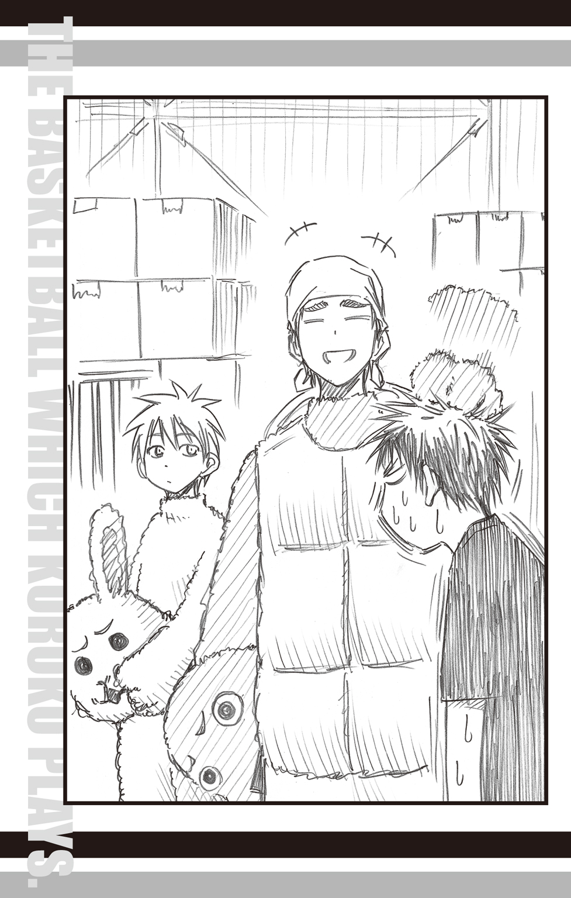
火神は痛む頭を手で押さえながら、聞いた。
「ちなみに、木吉先輩と黒子は着ぐるみで、なにやってるんすか？」
「チラシ配りです」
黒子は、机の上にあった大量のチラシから一枚とると、火神に見せた。
それには〝オープン記念ＳＡＬＥ〟と大きな文字で印字されている。
「このドラッグストア、最近できたばかりらしいんだ。普通に配るよりも、着ぐるみのほうがお客さんも興味持ってくれるからな」
「火神くんもやりますか？」
黒子の誘いに、火神は唸った。
「着ぐるみかぁ......暑そうだよな......」
「選り好みしてる場合じゃないと思いますけど」
「そうだけどさぁ......」
正直なところ、着ぐるみバイトは気が進まない。暑さがというよりも、着ぐるみに期待される、かわいらしい動作が一番のネックだ。
着ぐるみを着た自分が、脇を締め、両手で手を振る動作を火神は想像してみる。着ぐるみ的にはありかもしれないが、中の人である火神的には......アウトだ。
そんな火神の葛藤に気づいたのか、黒子はぼそっと言った。
「ちなみに、カントクのノルマを満たさない場合は、もれなくいろいろすごいらしいですよ」
「もれなくいろいろ......」
リコのにっこりとした含みのある笑顔が頭に浮かび、火神は思わずぶるっと体を震わせた。
「どうしますか？」
黒子が、答えはわかってますが、一応......と言外に含ませながら聞いてくる。
「......やります、着ぐるみ」
火神は項垂れ、木吉は「いやぁ、助かったよ！」と嬉しげに言った。
火神のために用意されたのは、トラの着ぐるみだった。
着ぐるみが増えたなら、とドラッグストア側はチラシではなく風船を用意した。
黒子がせっせと風船にヘリウムガスを入れる傍らで、火神はよろよろとトラの着ぐるみに着替える。
「暑い......」
思わず口から出た感想に、木吉は「慣れだよ、慣れ」と笑った。
木吉に背中のファスナーを閉めてもらっていると、小さな声で「いや、ほんと助かるよ」と言われた。
「へ？」
首だけ回して振り向くと、木吉は少し困ったような笑みを浮かべ、またも小声で言った。
「オレと黒子だけじゃ、いろいろキツかったんだ」
火神の顔が引きつる。
今でさえ暑さがキツイというのに、この上、いったい何があるのか。
火神は様々な不安とともに、トラのかぶり物をかぶった。
木吉のいう〝キツイ〟がなにを意味するのか、路上に出るとすぐにわかった。
火神は近寄ってくる子供たちに風船を配りながら、ちらりと黒子のウサギを見る。
ウサギはまったくもって、注目を集めていなかった。
黒子のウサギは、色がピンクであるにもかかわらず、周囲の景色に溶け込み、まるで何年も前からそこにあったオブジェのように佇んでいる。普通であれば、路上に着ぐるみがいるというだけで注目を集めるはずなのに、道行く人はまったくウサギが目に入らないかのように歩いて行く。
恐るべき、黒子の影の薄さである。
当然ながら黒子が手に持つチラシは一向に減らない。
時折、木吉が黒子からチラシを受け取り、代わりに配布することで、どうにか配るべきチラシの枚数を減らしている有様だ。
バイトの選択をミスってるんじゃねぇのか？
火神は首をかしげ、誰にも気づかれないウサギを注視した。
そもそも、このアルバイトにはそれぞれトレーニングの意味がある。木吉に関しては、リハビリも兼ねてのチョイスだとして、黒子はどうなのだろうか。見ている限り、いつも通りの影の薄さを発揮しているだけのようにしか思えない。
火神はあれこれと考え、黒子を見つめた。そのせいで、風船を配る手が止まってしまい、周囲にいた子供たちからブーイングがあがる。
「トラさん、風船ーっ！」
「ちょっと、あたしが先に並んでたのにー！」
「ボク、青！ 青のちょうだいよ！」
風船を持つ手をぐいぐい引っぱられて火神は我に返り、配布作業に戻る。
風船配りのおかげで、かわいらしい動作をしなくてすんだが、これはこれで忙しく、また気を抜くと、わらわらと寄ってくる子供たちを弾きとばしてしまいそうで怖い。
むしろ、黒子が風船配ったほうがいいんじゃないか？ さすがの黒子も風船だったら、注目を集めるだろう、と考えた、その時――
黒子が動いた。
「え？」
まるで突然現れたかのように存在感を増し、火神に向かって走ってくる。
「なっ......!?」
着ぐるみを着ているとはとても思えない速さで走ってきた黒子は、そのまま火神の脇をすり抜けて、背後の車道へと走っていく。
火神もすぐさま振り返り、黒子の姿を目で追った。
「!!」
その光景に、思わず息が止まる。
車道には三歳ぐらいの男の子が、風に流された風船を追いかけて飛び出していた。
そして、そこに大型トラックが迫っている。
トラック運転手は一瞬、風船に気をとられてしまい、男の子の姿に気づいてブレーキを踏むのが一拍遅れてしまった。
トラックのブレーキが甲高い声をあげるが、速度はまだ落ちない。
男の子は、驚いた顔のまま車道で動きを止めた。
「やべぇ！」
火神が走りだそうとしたその時、
「火神君！」
「えっ!?」
一足早く、男の子の手をつかんだ黒子が、片足を軸にして体を回し、走ってきた勢いを反動にして男の子を火神へとパスした。
火神は反射的に男の子を抱き留める。ちらりと男の子を確認し、すぐに車道に目を向けた。
「黒子！」
叫ぶ火神の眼前を、悲鳴のようなブレーキ音をあげて、トラックが通過する。
「黒子――っ！」
男の子を残し、火神は慌てて車道へ飛び出し、
「ぶおぅ！」
足をとられて、すっ転んだ。
「......火神君、痛いです」
「黒子!?」
起き上がった火神が見たものは、足下で倒れているウサギの着ぐるみだった。
「なんでここにいんだよ!? トラックに轢かれたんじゃ！」
「火神君にパスしたあと、バランス崩して倒れたんです。おかげで助かりました」
「なっ!?」
黒子が倒れているのは、車道の端。トラックのブレーキ痕と歩道までの間の、小さな空間にぴったりと収まっていた。
「なにやってんだよ、おまえ......」
火神は長い長いため息をつき、「ほら」と黒子に手を差し出す。
「男の子が車に轢かれたら大変だと思ったので......」
黒子は困ったように言うと、火神の手を取り、立ち上がった。
「でも、火神君がボクに気づいてくれてよかったです。パスしたくても、相手がいないと、できませんから」
「あのな、パスの前にオレに言えよ。オレのほうが近くにいたんだから」
「あ......」
「あ、じゃねえ！」
「まあ、いいじゃないですか。ウサギは足が速いってことで」
「全然よくねえよ！」
「おーい、ちょっと、いいか？」
口論を始めた火神と黒子の間に、木吉が割って入った。
「ひとまず、黒子もあの男の子も無事だったんだから、いいじゃない」
「まあ、そうっすけど......」
火神は、どこか釈然としない。一瞬、心臓が氷で包まれたような心配をしたせいだとは、認めたくなかった。
「まったく無事というわけでは、ないみたいですね......」
「え？」
木吉と火神が驚いた顔で（かぶり物のせいで、その顔は誰にも見えなかったが）、黒子を見た。
「ほら、あれです」
ウサギの手が空を指さす。
青く澄んだ冬の空に、色とりどりの風船が舞い上がっていた。
結局、その後はチラシ配りどころではなかった。
警察が事情聴取に来て、その対応に追われたのである。
事情聴取を行った警察官は、黒子が男の子に気づいたことに驚いていた。
男の子は火神から風船をもらった直後に、それを風で飛ばされ、道路へと飛び出した。それは黒子の位置からでは、およそ見えないはずの光景だった。というのも、風船を持った火神にさえぎられ、ちょうど死角になる場所だったからだ。
そのことについて、黒子は淡々と説明した。
「ちょっと視野を広くとる練習をしていたんです」
「視野を？」と警官は首をかしげる。
「わりとたくさんの人が行き交う場所だったので、誰か一人に注目するんじゃなくて、全体として人の動きを捉えたくて。だから、あの男の子が風船をもらいに行く姿も見てました。ちょうど彼が死角に入ったときに、次はどの位置に現れるかを予測していたら、なかなか火神君の陰から現れないので、もしかしたらと思って走り出したんです」
警察官は「なぜ、そんな練習を......？」としきりに不思議がっていたが、火神には黒子の意図がわかった。
オレもうかうかしてられないなと火神は思うが、時刻はあっという間に夕方となり、ドラッグストアの店長に呼びだされる。
当初、予定していたチラシ配りは中断されてしまったが、「お手柄だったね」と店長から無事にバイト代を受け取ることができた。
木吉、黒子、火神の三人は揃って店長に頭を下げ、ドラッグストアの裏口から外に出た。
「はぁ......疲れた」
木吉がほっとした様子で首を揉む。
「お疲れ様でした」
黒子が言うと、木吉は微笑んだ。
「黒子こそ、お疲れ。一番活躍したね」
「チラシ配りじゃてんでダメだったけどな」
火神が口を挟むと、黒子がさらりと言い返す。
「バイトをクビになった人に言われたくないです」
「だから、それは不可抗力で......」
「どこが不可抗力なんですか？」
またも火花を散らし始めた黒子と火神の間に、木吉が割って入った。
「まあまあ、それぐらいにして。まずは今回の給料を拝んでおこうじゃないか」
そう言うと、木吉は三人分の手当が入った封筒を取り出し、封を開けた。
その様子を、火神と黒子が興味深そうに見つめる。
「やっぱり、自分で働いたお金って特別な気がしますね」
「おう。いったいいくら入ってンだ？」
木吉がもったいぶるようにゆっくりと、封筒からお金を取り出す。
一万円が二枚。そして、五千円札が一枚。
「あれ？」
木吉は封筒を逆さにして振った。しかし、それ以上は何も出てこない。
「金額が、足りねぇ......」
火神の顔が引きつる。
「もしかして......」
口元に手を当てて考えていた黒子が、うんとうなずいた。
「火神君は午後からだったせいじゃないですか？」
「は？」
「あのバイト、一日働いて一万円だったんです」
「ああ、なるほど」
合点がいった木吉もうなずき、いつもの笑顔で、火神の肩をばんばん叩いた。
「火神、残念だったな。もう少し早く来れば、満額稼げたのに」
「残念だったなじゃ、すまねーよ！ じゃないすか!?」
残暑の熱気によるものではない嫌な汗が、火神の額に滲む。
「こ、これ、金額足りねーと、ゼッタイやばいっすよね!?」
「うん、ゼッタイまずいだろうな」
「そんな朗らかに言うな！ じゃねぇ、言わないでくださいっ！」
「でも、事実ですから」
「黒子まで淡々と言うな！」
「ボクはいつもこんな感じです」
「確かに！」
火神は再度お札を数えた。何度数えても、透かしてみても、二万五千円に変わりはなかった。
「やべぇ......どうしよ」
落ち込む火神の隣で、木吉と黒子も考え込み始める。
「しかし、ほんとに困ったな。よりにもよって、火神がノルマを達成できないなんて」
「そうですね......」
「元はと言えば、火神のためのバイトなのに」
「へ？ オレの？」
火神は驚きとともに、自分を指さす。
そう言えば、日向も似たようなことを言っていた気がする。あのときは、トレーニングのことだと思っていたが、木吉たちの言葉から察するに、どうやら違うようだ。
「あの、オレのためってどういう......？」
「ん？ なんだ、火神に言ってないのか？」
木吉が黒子に尋ねた。黒子は肯定するように、こくりとうなずく。
「ありのままに伝えると、火神君が気の毒だったので......」
「オレが気の毒？」
黒子の謎の発言に、火神はさらに混乱する。
「そうか。まあ、いずれはわかることだと思うが」
「そうですね」
木吉と黒子の、何かを隠している様子に、火神は不安になる。
「な、なぁ、いったい何が......」
「そのうち、わかります」
おずおずと火神は質問したが、黒子にぴしゃりと言われ、何も言えなくなる。
話の流れからして、自分が何かをやらかした感じがするので、火神は藪蛇にならないように黙った。代わりに黒子と木吉が相談を始める。
「不足金、今からバイトしたんじゃ、間に合わないですよね」
「まあ、そうだろうな。もっと簡単にすぐ稼げるものといえば......」
木吉は周囲を見渡し、視線を留めた。
「あれ、とか？」
親指で示したのは、パチンコだった。
「それはダメです」
黒子の即答に「うん、だよね、やっぱり」と木吉は笑い、頭をかいた。
「でも、その考えは採用できますね」
「へ？」
意外な言葉に、木吉の動作がぴたりと止まる。
黒子はにこりと微笑むと、確信に満ちた声で続けた。
「解決方法を思いつきました。まさに火神君にしかできない方法です」
「へ、オレにしか!?」
「どんな方法なんだ？」
黒子は「あっちです」と二人を連れて歩き出した。
夜七時。朝からアルバイトに励んでいた誠凛バスケ部のメンバーは、朝の集合地点だった駅前広場に集まっていた。
今日一日の手当を、一人ずつリコに渡していく。
「うんうん、みんなちゃんと働いたようね、偉い偉い」
リコは満足げにひとりひとりに声をかける。
そして、いよいよ黒子たちにも、手当を渡す順番が回ってきた。
木吉が「三人分のアルバイト代な」と言って、封筒を差し出す。
受け取ったリコは「あれ、なんだか多くない？」と封筒を凝視した。
「一人一万で、三万だよね？」
「ああ、うん、いろいろあってね」
「？」
どこか楽しげな返事の木吉に、リコは首をかしげ、封筒の中身を確認した。
封筒の中には、一万円札が五枚と、五千円札が一枚入っていた。
「なんで五万五千円？」
「あっ、もしかして黒子の臨時ボーナス!? 子供、事故から守ったんだろ？」
すでに噂を聞きつけていた小金井が、ひょいとリコの肩からお札をのぞき込んで言った。
「あら、そうなの？」
リコが黒子に尋ねる。黒子は「違います」と即答した。
「ボクと木吉先輩は一万ずつで、火神君が三万五千なんです」
「火神が三万五千!?」
小金井が素っ頓狂な声をあげた。
「バイト、クビにならなかったのか!?」
と、日向が言うのと、
「バイト、クビになったんだよな!?」
と、小金井が言うのは同時だった。
バスケ部メンバー全員から注目を集め、火神は「いや、それは......」と口ごもる。
「火神君......バイトをクビっていうのと、この三万五千円。ちゃんと説明してくれるわよね？」
リコは、目がまったく笑っていない笑顔を火神に向けた。
「......はい」
火神はすぐさま白旗を掲げた。できれば、バイトをクビになった話は隠しておきたかったが、こうなっては正直に話すほかない。
火神は、順を追って話し始めた。
バイト中のトレーニングに精を出しすぎてクビになったこと。
その後、黒子と木吉のバイトに合流したが、目標金額を達成できなかったこと。
そして、最終的に別の手段で三万円稼いだこと......。
「なに、その別の手段って」
怒りを通り越して、半ば呆れてしまったリコが尋ねる。
「大食い競争です」
火神の代わりに黒子が答えた。
黒子の説明によれば、商店街にある、とあるカレー屋さんのメニューに通常の五倍の量の特大カレーがあるらしい。
「その名も『エヴェレストカレー、瀕死の帰還』です」
壮大な名前に、男性陣から「おお......」と歓声があがる。
「いや、食べ物なのに『瀕死』とかって、おかしいでしょ」
リコは男性陣にツッコみ、「それで？」と黒子に先を促した。
「そのエヴェレストカレーを三十分以内に完食すれば、代金も払わなくてすみますし、賞金三万円がもらえるんです」
「なるほど、だいたいわかったわ」
リコはやれやれと肩を落とす。
「特によくわかったのが、火神君がいつも使わない頭を使うと、ますますバカな行動を取るってことね」
「ど、どうしてそうなるんすか!?」
疲れた顔でこめかみを揉むリコに、火神が（弱々しくだが）抗議した。
そんな火神を、リコは疲れた顔で睨む。
「あのね、私がバイトにトレーニングを追加するわけないでしょ」
「はぁ!?」
「バイトはバイトよ。まあ、自分なりにトレーニングをした人もいるかもだけど、オンとオフはきちんと分けるわよ。変に怪我をされても困るし」
そう言って、視線で黒子を牽制する。黒子はぽりぽりと困ったように頰をかいていた。
「や、でも、じゃあ、なんでバイトすンだよ！ ですか!? この時期、練習しないとまずいっすよね!?」
「んー、誰のせいだ、誰の!!」
リコの瞳に怒りの炎がともった。
「......え？」
思わず火神が身を引く。
「今回のアルバイト、もとはと言えば、あんたのせいなんだからね！」
「へ？ オレ？」
「そうよ！ この前のお疲れパーティー！ あんた、いくら食べたと思ってるの!?」
「え？ ......えぇ!?」
火神は記憶を辿る。夏休み最後の日となった八月三十一日。誠凛バスケ部のメンバーは練習後、「お疲れパーティー」ということで焼き肉屋へ繰り出した。「地獄」と称される、ふたつの夏合宿から無事に全員が生還し、それぞれが成長のきっかけとなるものをつかんだ夏休み。「おつかれー！」というリコの乾杯で、全員が焼き肉をぱくついた。特に火神は練習後で腹が減っていたのと、夏休みの達成感から、気が大きくなり、それと同時に、胃袋も大きくなったような......。
「あ、あの......オレ、どれぐらい食ったんすか......？」
火神は、恐る恐る尋ねる。
「全員で、十一万オーバーだったよ。おそらくその四分の三はおまえの腹の中だな」
会計の伊月がさらりと答えた。
「じゅ、じゅういちっ!?」
「あの日は、どうにか部費でまかなったけど、部費はそうやって遣うものじゃないからな。リコに相談したんだ」
「それで、仕方なく練習を返上して、全員でアルバイトする日を作ったの！ まったく、こういうことは、金輪際やめてよ！」
リコの言葉は、火神には届いていなかった。
今日一日の記憶が蘇る。
すべては勘違いによる独り相撲だったことがわかると、居ても立ってもいられないような、恥ずかしさが体中を駆け巡った。
火神は夜空に叫んだ。
「オレのバカ―――ッ！」
そしてその直後、
「今頃気づくな、バカガミ!!」
誠凛高校バスケ部一同のツッコミも夜空に響いたのだった。
換気用に開けられた体育館の窓から、冬の冷気が入ってくる。しかし、練習に汗を流す桐皇学園バスケ部の生徒たちにとっては、それでも冷房がほしいと思うぐらいに、体育館内は熱気に満ちていた。
ウィンターカップも間近となった週末。レギュラー選手を筆頭に、部員全員が精力的に練習に励んでいる。
ただし、約一名を除いて。
「いない!?」
一年の桜井良から報告を受けたバスケ部主将の今吉翔一は、その細い目をわずかに見開いた。彼なりの驚きの最上級の表現だ。
「スイマセン、スイマセン！ 部屋の中も捜したんですけど、どこにもいなくて......」
と、桜井良はぺこぺこ頭を下げる。報告した内容は、桜井に非がないものだったが、すでに半泣きの顔だ。
「ドアの外にバリケードあったのに、逃げたんか......」
今吉は考えを巡らせるように顎を撫でた。「えらい、まずいことになったな」
「どうかしたんすか？」
声を聞きつけて、二年の若松孝輔が近寄ってきた。
「また、青峰っすか？」
その名前を口にするだけで忌々しい顔つきになる若松に、「なら、気にしなきゃええのになぁ」と思いながら、今吉は苦笑して言った。
「まあ、そういうこっちゃ。でも、今回はほんま、ちょっとアカンな」
「ほうっときゃいいんすよ、あいつなんざ！」
吠える若松に、今吉は「うーん......」と曖昧に笑う。
隣でおろおろとしていた桜井が、
「あ、あの！ ボク、もう一回捜してきます！」
と、言ったのを今吉は「それは無駄やろうし、ええわ」と制した。
「なにか問題でも起きたか？」
レギュラー三人が頭を寄せ合っているのを見てさすがに不思議に思ったのか、三年の諏佐佳典も練習の手を止め、近寄ってきた。
「おまえらが手を止めると、他のメンバーが気にして練習に支障がでるぞ」
三年生らしい気遣いの言葉に、「そら、ますますアカンな」と今吉は答え、ふっと口の端だけを上げて笑う。
「しゃあない。この件はあとで考えよか。桜井、若松、諏佐。練習のあとで相談したいから、ワシの部屋に来てや」
今吉が言う「ワシの部屋」というのは、彼が暮らす寮の私室のことだ。
全国から有能な選手をスカウトする桐皇学園では、親元を離れて学園に通う生徒のために学生寮が用意されている。三年生の今吉には個室が与えられており、男四人ぐらいは余裕で入る広さの部屋だ。ちなみに、同じく寮生である諏佐とはお隣さん同士である。
「わかりました」
「了解っす」
主将命令とあれば断る選択肢などなく、桜井と若松がそれぞれ了承の意を伝える。しかし、諏佐だけは小さくため息をついた。
諏佐の経験からいって、今吉が今みたいに笑うのは、大抵何かよからぬことを考えているときが多い。
胡散臭い笑顔の今吉に、諏佐は「なにをさせる気だ？」と視線で問いかけてみたが、やはり今吉は笑顔で「さ、練習しよか」とはぐらかすのみだった。
諏佐の経験値は予想を裏切らなかった。
「なんでこうなるんすか!?」
今吉の部屋で若松の不満が爆発する。
怒りにまかせてローテーブルを叩いたせいで、テーブルに広げられた課題プリントの上で、たまりにたまった消しゴムのカスがびょんと跳ね上がる。
「若松、口動かす暇あったら、手、動かしや、手」
ローテーブルの対面に座る今吉は、課題を解く手を止め、若松を注意した。
「この課題、明日までに終わらせなあかんのやから」
「だから！ なんでオレたちがこの課題をしなくちゃいけないんすか！ これって、青峰の課題っすよね!? あいつにやらせましょうよ！」
若松が自分の前に置かれた課題プリントを持ち上げ、パンパンと叩く。確かにプリントの氏名欄にはうねるようなクセ字で「青峰大輝」と書いてあった。
今吉は「まあまあ」というように両手を広げ、若松に座るよう促す。
「そらな、青峰が自分でやるのが一番ええよ？ でも、消えてしもうたんやから、仕方ないやん」
「スイマセン、スイマセン......！」
課題を解いていた桜井が、ローテーブルにごちごちと額を打ちつけながら謝る。
「いや、おまえが謝ることじゃないから......」
諏佐もプリントに走らせていた手を止め、こりをほぐすように首を回した。
時刻は夜の七時。
部活を終え、今吉の私室に集まった桜井、若松、諏佐と部屋の主である今吉は、ローテーブルの一辺を一人ずつ分け合い、頭を寄せ合い、練習で疲れた体と脳にむち打って、青峰の課題を解いていた。
何故か。
答えは簡単だ。
この課題を明日提出しないと、ウィンターカップに出られないからだ。
他でもない、青峰自身が。
「青峰だってこの課題やらないとウィンターカップ出られないって知ってるんすよね!? だったら、それをやってないってことは、出る気ねぇってことじゃねぇっすか!?」
若松の咆吼は続く。しかしその声をまるでそよ風のように聞き流し、今吉は穏やかに答える。
「あいつはな、これでやったつもりなんや。多少は解いた形跡が残っとるやろ？」
「名前と、あとは気まぐれ程度にしか書いてないっすよ！」
「名前書かんと、零点やからなー。それにしても、試験で赤点取ったのに、課題提出すれば単位やるなんて、先生たちが優しすぎて、ワシ、泣きそうやわ」
「......おまえが泣くところを、一度ぐらいは見てみたいな」
「あはは、おもろいこと言うなぁ、諏佐は！」
諏佐の差し込んだ茶々に、今吉は口先だけで笑う。
若松が「だいたい青峰のやつは......」とお決まりの文句を言いだしたところで、桜井はそっと小声で諏佐に尋ねた。
「諏佐先輩、今吉先輩って実は最初から......」
「だろうな......」
ふたりには、もはや今吉の思惑がわかっていた。
彼ははじめから青峰の課題をこのメンバーで肩代わりするつもりだったのだ。
おそらく今朝、監督である原澤克徳から、青峰のための特別救済策を聞かされ、
「青峰君が課題を終えるまで監視してください。今日は桃井さんがいないので、キミのやり方でいいですから」
と言い渡されたときから。
でなければ今吉が、逃げることがわかっている青峰を自分の部屋に連れて来て、
「とりあえずここで勉強しいや。ちょくちょく見に来てやるから」
などと言い含めただけで、見張りも置かずに放っておくわけがない。
彼が求めたのは、
『監視はしたが、青峰が逃げたので仕方なく代わりに課題を解いた』
という状況を作ることだった。
あの奔放な青峰を捕まえて無理やり課題を解かせるよりも、自分たちが代わりに解くほうが効率的かつ少ない労力ですみ、しかも確実だと判断した結果だろう。
だから、他のメンバーを巻き込むために、わざと桜井に様子を見に行かせ、芋づる式に若松と諏佐を関係者に仕立て上げ、自室に呼んだのだ。
今吉がはじめからそのつもりだったという証拠に、夕方の時点では今吉は「相談したいことがある」と言っていたが、実際に諏佐たちが部屋に来てみれば、「待ってたでー」とローテーブルを囲むように座らせ、さっさと課題を各自に渡し、「ほな、やろうか」と言うだけだった。
はめられたことに気づいても、もう遅い。回りくどいが、手のひらで人を転がすのが好きな今吉らしいやり方だ。諏佐と桜井は合わせたようにため息をついた。しかし、未だ今吉の思惑に気づかない若松は、怒りをおさめる気はないらしい。
「それにあいつの答え、おかしすぎっすよ！」
怒りの矛先は、数少ない青峰の解答に及んだ。「見てくださいよ、これ！」と、若松は今吉の前にばんっとプリントを置く。
「んー？」
今吉はメガネの奥で、細い目を一層細めて文章を読んだ。桜井と諏佐もどれどれとプリントに目を通す。
プリントは国語の課題だった。
設問「おつうは何故、『決して部屋を覗かないでください』と言ったのでしょうか」
解答「うわきしてたから」
「あいつ、鬼っすよ！ おつうがどんな思いで、織物をつくっていたのか！ それを浮気って！ マジ、ありえないっすよね!?」
怒りの炎を目に宿しながら力説する若松に、
「......いや、そもそも高校生の問題に、『鶴の恩返し』が出ること自体がおかしいだろう」
と、諏佐が思わず額を押さえて言えば、
「先生も青峰の学力に合わせて問題作ったんやろうなぁ。つーか、見事にひらがなばっかりやな」
と、今吉も別のことを指摘する。
そして桜井は「そんなの、まだいいですよ。こっちも見てください」と、解いていたプリントをみなが見えるように回した。
英語の課題だった。
設問「『Hey, you! There is no smoking room!』を和訳しなさい」
解答「へっよー！ このへや、ヨコヅナいねえぞ！」
解答を読んだ今吉は噴き出した。
「あははは！ 〝スモウキング〟で横綱か！ おもろい！ おもろいわ、それ！ 座布団三枚ぐらいの出来やで！」
「笑いごとじゃないです。解答が書いてあっても、こんなのばっかりで、消しゴムで消すの、すごい大変なんですよ！」
「ったく、なに考えてんだよ、あいつは！ 〝スモウキング〟は横綱じゃなくて、大横綱だろが！」
若松の発言に、他の三人が思わず彼の顔を見つめる。
「な、なんすか!?」
突然注目を浴びた若松は、ぎょっとして身を引いた。
「......いや、あのな、若松。〝smoking〟は相撲の王様って意味じゃなくて......」
気の毒そうな表情を浮かべて訂正しようとした諏佐を、「待て待て」と今吉が制した。
「そこは放っておくべきや！ こんな天然、治したらもったいない！」
「ちょ!? なんすか、それ！ どういう意味っすか!!」
今度は身を乗り出した若松の両肩に、今吉がぽんと手を置いた。
「ええか、若松。今はおまえの頭脳が必要なんや」
「はぁ!? な、なんすか、突然......？」
「青峰の頭に近い、おまえのユーモラスな解答がないと、課題は完成できへん！ ワシらには、おまえの力が絶対必要なんや！」
「そ、そうすか......？」
今吉のいつにない熱のこもった言葉に、若松がまんざらでもなさそうににやける。
「ワシらだけで課題を解いたら、一発で青峰とちゃうことがバレるやろうけど、お前がおればちゃう。これは『完全犯罪』になるんや！」
「『完全犯罪』......！」
突然出てきた予想外な言葉を、若松は興奮気味に繰り返す。少年特有のいたずら心を刺激されたらしい。
「若松、一緒にやってくれるか？」
「もちろんっす！ うおっしゃー！ オレが完璧にやってやるっすよ！」
若松は猛然とプリントに取りかかった。
その様子を満足そうに今吉は見つめる。
諏佐は思う。
今吉は、若松の頭脳が青峰並みに酷いと遠まわしに言ったんだがな......。
同様のことを考えていたらしい桜井とまた目が合ってしまった。
ふたりは再度ため息をつき、青峰の課題に取りかかった。
深夜を回る頃から、練習で疲れた体は激しく睡眠を要求しはじめた。
ひとりでは抗いきれない睡眠の誘惑に、四人は互いにデコピンとシッペで起こしあうという秘策をもって抵抗し、ようやく迎えた翌朝の五時。
「で、できた......！」
最後の一字を書き終え、若松はテーブルに突っ伏した。力なく投げ出された腕は、夜中のシッペの嵐により、赤くなっていた。
「終わったか......」
自分の担当分はすでに終え、見守っていた今吉もほっと息をつく。その額もやはり赤くなっている。
「若松ので、全部終わりか......？」
やはり担当分を終えていた諏佐が今吉に尋ねた。
「ああ。これでめでたく終了や。みんな、おつかれさん」
今吉の言葉に全員が肺の中の空気をすべて出し切るような、長い息をはいた。
「腹減った......」
机に突っ伏したまま、若松がつぶやく。
「確かにな......」
諏佐が同意して、時計を確認する。「寮の朝食は六時半からなんだ。まだ少し、あるな」
すると、「あ、あの......」と桜井が控えめに手をあげて言った。
「実は......ボク、朝ご飯を作っておいたんですけど......」
他三人の視線が桜井に集中する。
「『作っておいた』って？」
諏佐が尋ねると、桜井が上目遣いでうかがうように言った。
「ボク、少し早目に終わったので......さっき、寮のキッチンを借りて、簡単な朝食を用意したんです」
「ああ。そういや、いつの間にかおらんようになってたな」
今吉が記憶を辿るように、顎を撫でた。
「あの、本当の本当に簡単な朝食なんですけど......よければ......」
「でかしたぞ、桜井ぃぃぃぃ!!」
若松が期待に目を輝かせ、がばっと立ち上がる。反動で桜井はひぃっと身を小さくした。
「メシが食えれば、なんでもいい！ どこだ、どこにあるんだ、朝メシは！」
「は、はいっ、あの、寮のキッチンです......」
「よし！」
若松は先ほどまでへばっていたとは思えない元気のよさで、部屋を出て行く。
「せっかくの桜井の厚意や、ワシらもありがたくもらっとこか」
「そうだな」
今吉と諏佐も立ち上がり、そのあとに桜井が続いて、キッチンへと向かった。
早朝のキッチンには思いがけない先客がいた。
「てめぇ！ なんでここにいやがんだーっ!!」
その姿を見つけた若松は開口一番吠えた。
「おぉ、きひゃのか」
口いっぱいにご飯を頰張ったまま振り返ったのは、バリケードの部屋から忽然と姿を消し、自分の課題をすべて他人に任せた、桐皇高校バスケ部期待のエース・青峰大輝であった。
「てめぇ、なんでここにいやがんだっ!! つーか、そのメシ！ それ、もしかして桜井の作ったメシか!?」
若松が怒鳴る。青峰の前には、茶碗と数分前まではおかずが載っていたと思しきお皿が、何枚も並んでいた。
青峰はご飯を飲み込み、しれっと「知らね」と答える。
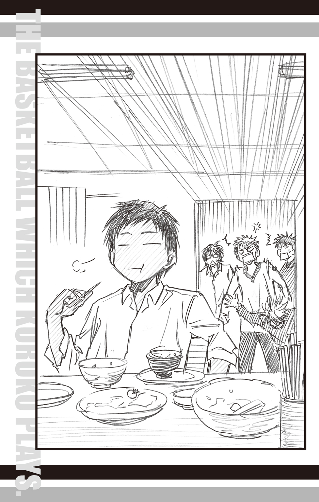
「......青峰、なんでここにいるんや？ 帰ったんとちゃうんか？」
今吉の疑問に、青峰は「んー帰るつもりだったんだけどさー......」と、腹が膨れて眠くなったのか、欠伸をしながら寝ぐせのついた頭をかいた。
昨日の昼間、今吉によって閉じ込められた青峰は、封鎖されているドアから出ることを諦め、代わりにベランダから脱出し、隣の部屋へ移った。幸いにも隣室のベランダに面した窓は鍵がかかっておらず、青峰は楽々と部屋へ入り込み、そのまま通り抜けて外へ出ようとして......思わず足を止めた。その部屋には、それだけの価値があった。
アルミ製の本棚いっぱいにＮＢＡ関連の雑誌や書籍が整然と並んでいたのだ。
そう、そこは諏佐の部屋であった。
「せっかくだし、見とくかーと思ってさ。んで、見てたら眠くなって、さっき目が覚めたんだよ」
「オレの部屋にいたのか......!?」
話を聞いて、諏佐は愕然とした。部活後、すぐに今吉の部屋に行ったので自室に戻らなかったが、まさか不法侵入されていたとは。
しかも隣の部屋にいたのに、気づかなかったなんて......。
そこまで考えて、諏佐は「ん？」と首を捻った。
「青峰。オレの部屋にいたなら、オレたちがおまえの課題解いてるのも聞こえてたんじゃないのか？」
諏佐がふと浮かんだ疑問をそのまま口にする。
寮の部屋の壁は薄い。隣の部屋の会話は、ほぼ筒抜けになるのが、常だ。
「あー、そういや、なんか聞こえてたな」
「そういやって、おまえ......」
「そういやじゃねぇぞ、てめぇ！」
自分には関係のない話だと言わんばかりの青峰に、諏佐は肩を落とし、若松は憤った。
「てめぇのせいで、オレらは無駄に徹夜したんだからな！ もっと感謝しろ！ 敬え！ 尊敬しろ！ あがめ奉れ！ ついでに、さっさとオレの視界から消え失せろ！」
「んじゃ、そうするわ」
「へ？」
珍しく従順な返事を返した青峰に、若松は目を丸くする。
青峰は皿に残っていたタコさんウインナーを口に放り込むと、
「いろいろ、ごっそさん」
と言い、ふらりと立ち去った。
「けっ！ ったく、朝から嫌な奴を見たぜ！」
若松は、青峰がキッチンから出たのを確認すると、近くの椅子を引き寄せて座った。
「桜井、朝メシ！ メシ食わねーと、気分が悪い！」
そう言いながら、若松が桜井を見ると、桜井はテーブルの上に置かれた皿を呆然と見つめていた。
「桜井？ どないしたんや？」
今吉も不思議に思ったのか、声をかける。
桜井は目に涙を浮かべて言った。
「な、ないです......」
「あん？ なにが？」
「ボクが作った朝食、全部青峰さんに食べられちゃいました......！」
「なっ!?」
息を飲んでしまうと、声は出ない。
今吉、若松、諏佐は声も出せず、動作を止めた。
そして数秒後。
「青峰――――っ!!」
学生寮を震わせるほどの怒号と、腹の虫の不協和音が響き渡った。
週明けの月曜日。
青峰が無事に課題を提出したと聞いた桃井は自分のことのように喜んだ。
「よかったぁ！ いっぱい課題出されたって聞いたから、心配してたんだよ？」
「別に。オレが本気だせば、こんなもんだよ」
青峰は口の端を上げて、余裕さえも匂わせて笑う。
〝新鋭の暴君〟と呼ばれる桐皇学園バスケ部。
そこに君臨する〝真の暴君〟の伝説は、こうしてまたひとつ、増えたのだった。
伊月家は仲がいい。朝の食卓も会話に溢れている。
母と妹の舞と朝食を食べていた伊月俊は、しょうゆを手に取ると言った。
「母さん、このたまりじょうゆ、うまいね」
「あら、そう？ たまたま安かったのー」
「たまごがけご飯にぴったりだよ」
「俊、こっちのイカの照り焼きもいかが？」
「朝から照り焼きなんてイカしてるね」
伊月が大皿に盛られたイカの照り焼きに箸を伸ばすと、それより先に別の手がひょいとイカをつまみあげた。
「まあ、お姉ちゃん。お行儀が悪いわよ」と母親に注意されながらも、口をもぐもぐとさせるのは、大学生になる伊月の姉・綾だ。彼女は伊月の隣に座るとにこっと笑った。
「うん。なかなかイカしたお味のイカね」
「姉貴、今のナイス！」
「もぉ、お姉ちゃんったら。......タラコもあるわよ」
「さすがオレの妹、それいただき！」
伊月はちゃぶ台の下からすかさずネタ帳を取り出すと、さらさらと書きとめる。
「それじゃ、私もいただきまーす」
伊月の姉は手を合わせて言うと、味噌汁を手に取る。
「今朝の味噌汁の具はお麩かぁ。オフの日にぴったり」
「あら。お姉ちゃん、今日は大学に行かないの？」
「姉貴はイカを食べたから行かない、とか？」
「俊、今のはいい感じ！ お麩を食べただけに、ふふっと笑いたくなる！」
「姉貴、それもいただき！」
「本当に俊ったら熱心ね。でも、そろそろ急がないと学校に遅れるわよ？」
母が指さした壁掛け時計を見て、伊月は慌てて、イカを口にほおばった。
「こりゃイカん！」
慌ただしく家を出た伊月が通学路を早足で歩いていると、いつもの曲がり角で日向順平と出くわした。
「よ、伊月。おはよーさん」
「おはようさん。太陽もさんさんだな」
さわやかに笑う伊月に、日向はため息まじりに、「朝一で、寒いこと言うなよ......」と、日課とも言えるツッコミを入れる。けれど、伊月は思うのだ。
こんなにおもしろいのに...は！ 『ため池でため息』。キタコレ！
今朝も伊月は絶好調である。
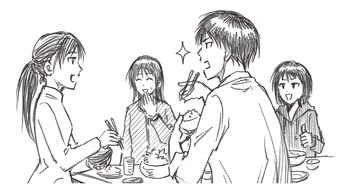
POSTSCRIPT
あとがき
とゆうわけで小説版、まさかの二冊目です。
前作から色々な面でパワーアップしています。
シリアスめに進む本編とは違い、どいつもこいつも一段とのほほんとしています。
一段とバスケをしていません。
そして一段と...なんかあざとくなってませんか平林さん。
ありがとうございます。
偉そうにパワーアップしていますとかぬかしてしまいましたが、できたのは、他でもない貴方のおかげです。
二冊目を出させてもらえたのは、いつも応援してくれている皆様のおかげです。
無事発売できたのは編集部はじめ関係者の皆様のおかげです。
結局、本を出させてもらうたび思うのはこの言葉以外ありません。
皆様、本当にありがとうございます。
藤巻忠俊
POSTSCRIPT
あとがき
この度は『黒子のバスケ』ノベライズ第二弾をお手にとっていただき、ありがとうございます！
既に本編を読まれた方はもうおわかりとは思いますが、今回は前回よりもさらに、バスケシーンがありません！
もはやタイトルも『黒子のバスケ―（マイナス）バスケ』にしたほうがいいのではないかと思うぐらい、バスケシーンはないです。
ないですが、その分、みんなの日常をたくさん書かせて頂きました。
いかがでしたでしょうか？ 私は楽しかったです！
さて毎回のことながら、今回もたくさんの方にお世話になりました。
編集部の皆様、校正様、印刷所の皆様......もう挙げ出すとキリがないのですが、特にお礼を申し上げなくてはいけない、トップ３へ!!
担当の佐藤さん。根気よく原稿を待ってくださり、ありがとうございました。
世界中の「佐藤」さんと握手して回りたいぐらい、感謝しております。
藤巻先生！ 本当にほんとーにっ、お忙しい中、ステキなイラストをありがとうございました！
今回もこっそりお名前を借りました。すみません......。
そして、読者の皆様!! こうして続編が出たのも、ひとえに皆様のおかげです。
本当にありがとうございます！ バスケをしていない彼らの日常を、本編と一緒に少しでも楽しんで頂ければ幸いです。
ではページも少なくなってきたので、最後はやはりこの一言で。
祝 アニメ化!!
十一月某日
平林佐和子
■初出
黒子のバスケ−Replace− キセキの学園祭 書き下ろし
著者紹介
藤巻忠俊 FUJIMAKI TADATOSHI
第44回ジャンプ十二傑新人漫画賞にて『黒子のバスケ』で十二傑賞受賞。
２００９年週刊少年ジャンプ第２号より同作の連載をスタートし好評を博す。
平林佐和子 HIRABAYASHI SAWAKO
アニメの脚本もてがける女性小説家。
著書に『黒子のバスケ-Replace-』シリーズ『SKET DANCE extra dance』シリーズなど。
ジャンプジェイブックスDIGITAL
黒子のバスケ―Replace― キセキの学園祭
著者 藤巻忠俊／平林佐和子
© 2015 T.Fujimaki／S.Hirabayashi
２０１５年２月28日発行
この電子書籍は、ジャンプジェイブックス「黒子のバスケ―Replace― キセキの学園祭」
２０１４年12月７日発行の第20刷を底本としています。
装丁 勝亦一巳
編集協力 佐藤裕介［STICK-OUT］
発行者 鈴木晴彦
発行所 株式会社 集英社
〒１０１－８０５０
東京都千代田区一ツ橋２丁目５番10号
０３－３２３０－６０８０（読者係）
制作所 株式会社デジタルディレクターズ
本作品の全部また一部を無断で複製、転載、改竄、インターネット上に掲載すること、および有償無償に関わらず、本データを第三者に譲渡することを禁じます。なお個人利用の目的であっても、コピーガードを解除しての複製は、法律で禁じられています。